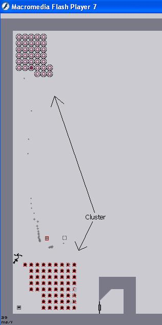
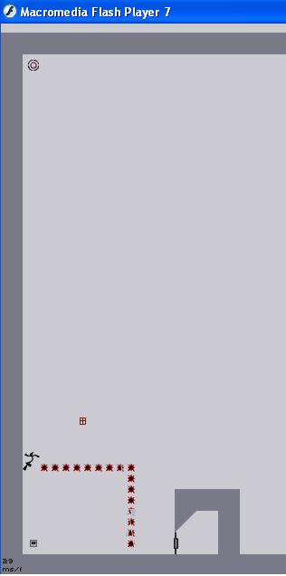
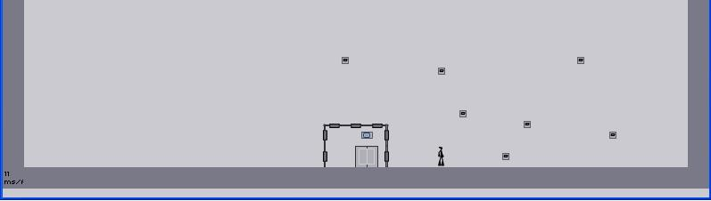
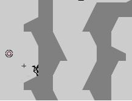

oops. i think your talking about me. I didn't know you wanted only all gold. my bad.
yeah i agree. ill try to do it and get back to you
What is your favorite thing to do in n.
for me personally it is dodging about 5 rockets that keep getting launched at the same time, or soaring through the air and getting major speed. or the feeling of finally beeting a level that you have been trying to beat for ages.
for me personally it is dodging about 5 rockets that keep getting launched at the same time, or soaring through the air and getting major speed. or the feeling of finally beeting a level that you have been trying to beat for ages.
WHOHOO. check out the map I beat it.
Mine I would have to say would be platformed(or is it platforms) by maximo.
My personal favorite in the game is 21-2. there are so many possibilites its crazy. you can dodge and get so close to dying, and then finsih the level. i only play the top part that is.
What are your thoughts on the tileset of doom deathangel put out. I personally hate it, first of all because each map isnt hard to beat, but mostly because it knocked all those other maps away. Now nobody will vote on any of the ones that were there before. Am I the only one like this?
does it say, new top 20 score or something. also, any suggestions on how to get one. id be happy with jsut one frankly. unlike some cough*trib4l*cough. haha, i envy you trib4l.
---------------------
---------------------
yeah i noticed it a while ago. its a NaN like everyone is saying. also, this happened to me beofre, and in the edit view, the jumppad just looks like a circle. i was going crazy trying to figure out what theat object was. its like a jump pad, with no jump. its just a pad.
------------------
------------------
the reason my sig is liek that
is cuz i cant do it normally. it says Im not allowed or something. I tried for the best forgery I could
is cuz i cant do it normally. it says Im not allowed or something. I tried for the best forgery I could
ill leave the new Ned editing software to the people who know things about computers. hehe. I think its okay to let them do the busywork and I play.
im all for this idea. I had thought about this earlier. but honestly. an hour? if you really think about it, am I crazy to say 5 maps a day. I mean, the really good maps obviously have 2 or 3 days in them. therfore, if you want good maps, why not limit it to 5 or 6 a day. that would still keep out spammers.
or if somehow, you could make a warn system. if a set number of users warn a map enough, it gets booted off. just trying to give suggestions.
or if somehow, you could make a warn system. if a set number of users warn a map enough, it gets booted off. just trying to give suggestions.
i searched the metanet site, and the boards, and couldn't find anything on how you guys originally thought of the game. is there a story behind it?
eeks my bad. sign me up
is there something wrong with that?grabbing it from the forum sig i mean
im your man(not sexually of course)
when I said im your man, that means I did it(the last vote)
Blizzy's Edit: Try not to double-post. Thanks!
Sorry. IM new to the whole forum thingy.
Just one more vote needed for my map Puzoid. thanks everyone.
when I said im your man, that means I did it(the last vote)
Blizzy's Edit: Try not to double-post. Thanks!
Sorry. IM new to the whole forum thingy.
Just one more vote needed for my map Puzoid. thanks everyone.
OOH YEAH. I like that maximo tab idea. or, we could all leave, and maybe possibly some people would rate all our maps 5 N.  hey it could happen(not really)
hey it could happen(not really)
hey it could happen(not really)Uh oh. It seems you misread. This is a thread for maps that need 1 or 2 more votes. not 4. (that one was me). its okay. the load is too long and it gets boring.
no prob man its all good. my advice is, if you want stuff rated, look at all the other maps that will be before you before you submit. if they each only have 1 or 2 votes submitted, dont put a map on, because there are not a lot of users online. if there are more, do it. thats what I do
i think ima just finish N later. I got the first three columns beat, and havent played the actual game for a while now. i just need about 14 more episodes to beat it tho (when im bored)
(when im bored)I am fairly experienced with flash, I kinda jsut experimented with it. Well, actually, Im not that good, I just know hot to tween, alpha shades, buttons, and the basic actionscript that speeks for itself(i.e. goto, play, stopallsounds) stuff like that. What I want to know is, where do I begin in order to make a game like this. I know I am not capable of doing it yet, but I am taking a class and will be. The tutorials on the metanet site have bigger words than my mind can comprehend(more than 5 syllables). My question is where should I start?
is there any way to tell whos map is on their if you havent gotten to the level yet
For instance if there is any way to tell if one of Maximo's maps is in there? is there a search thing somewhere or a level list with authors?
Hoping not to necromance this topic, I picked a random post I did in order to add a file to it for shadowwolf
For instance if there is any way to tell if one of Maximo's maps is in there? is there a search thing somewhere or a level list with authors?
Hoping not to necromance this topic, I picked a random post I did in order to add a file to it for shadowwolf
what do you mean example user made maps. what is that?(just wondering not saying it in an attacking sort of tone.)
SIN CITY!!!
QuoteAnd what am I supposed to do while your on a yellow-brick quest for a brain?
the only reason I knew sin city was the answer was bruce willis was in it, and I thought that I saw that in the preview for sin city
should be pretty easy. dont google it. its there.
are we allowed to resubmit a map we already posted?
eeks im so confused
oh alrite. i wasnt sure the submissions closed. gotcha
what is the longest that you have spent witha level open, reason being you didnt want to lose your progress in that episode. I once left it on plan plan plan(8-1)((yeah I know)) for 3 days. anyone done longer?
I personally would love to see some sort of drone that would scare N really bad. You know, something that would make him WANT to run into a way one cave of mines that he cant escape...

This can only be achieved with a richard simmons drone
This can only be achieved with a richard simmons drone
granted, people rate your maps. But then you are killed in a non-related drive by egging.
I wish i was a REAL boy
I wish i was a REAL boy
sweep im confused, were u agreeing with me? i meant(it might have been confusing) that maps with 4 votes or 5 votes to go on the main page, means that not a lot of users are rating. i was saying try not to submit it at those times, but instead, work on the map a lil more and rate those maps on the main page. sorry for the confusion
Also, my map Smothery needs two more votes. You can go through the whole thing smoothly without going for all gold, and that is one of the main reasons I like it
Also, my map Smothery needs two more votes. You can go through the whole thing smoothly without going for all gold, and that is one of the main reasons I like it
i just finished all escept 14. ill do that some other time.
fine with me sweep. agree to disagree
wow. thanks glenno
wow. thanks glenno
there ya go tktktk. always glad to help. now we just need one more person...
Just ONE more vote for my map Smothery
It can be completed in one smooth run, see if you can do it
Just ONE more vote for my map Smothery
It can be completed in one smooth run, see if you can do it
Pariah:There ya go. I rated yours. if you havent could you rate mine? its a couple of posts before yours on this thread.
Just FYI, try not to post a map here until it is off the first page. I know you only needed one vote, but it wouldve gotten it because it was the first map there. Thanks.
Just FYI, try not to post a map here until it is off the first page. I know you only needed one vote, but it wouldve gotten it because it was the first map there. Thanks.
This might be me, but I think its fine the way it is. THe Arcade style really appeals to me.
yeah. i tried to delete all my super bad maps. i still got some to delete. but i Still AM your slave. im not gonna deny it. i just hope its nothing with hairy russian circus midgets, im allergic to em
I noticed another bug in NeD(although it is a very small one) If your at the main menu screen, and watch the character go through a level, wait till he dies. Then, once he is dead, go to the Ned Level editor. If you try to play the level(by hitting enter and inserting a Ninja, it doesnt work. You need to reload the level. Nothing that important, just thought id point it out.
YOUR A CELLO OR A MUSICAL INSTRUMENT OF THAT SORT
WOW. ME LIKE THIS THREAD
WOW. ME LIKE THIS THREAD
my bad nevermore. ill search next time.
that was the answer to the first riddle that nobody got. i forgot to put that in.
What!!!Oh darn. I felt special.
shopping
I have at my friend bens house. i like picking up people and watching them squirm
i have itunes, and it doesnt skip when I play N and listen. does anyone who has itunes have the skipping problem?
yeah i hated that mine bit. in pipes try the hardest things first(for me it was the floor guards and the mines.) holy crap. i wonder how long it took seifer to get that demo. wow. he came really close to a mine also.
my order went mines, thwumps, floor guards, zap drones
EDIT: TALKING ABOUT pipes
my order went mines, thwumps, floor guards, zap drones
EDIT: TALKING ABOUT pipes
Seifer how much do you play N. you seem extremely good.
Check out my highscore on 71-2
Oh wait...i dont have one haha
haha
Oh wait...i dont have one
haha I just click yes and it usually goes away. it doesnt for you?
yeah I made one a while ago. unfortunetly, the other kid i was working with got bored, and decided to stop. well start it again later
Notdunn
Notdunn
What do yours say. GOing around, I got some about star wars, and buying birthday girls(whatever those are.)
hell yeah. The popemobile.
Eric Clapton - Layla
Granted, but you are the only human there, and they outcast you for being different
I wish that the person below me would post some text.
I wish that the person below me would post some text.
(nothing)
apparently it was a picture. unfortunetly. that wont work, so instead, ill make you feel guilty with my army of sad men.
apparently it was a picture. unfortunetly. that wont work, so instead, ill make you feel guilty with my army of sad men.
i couldnt find the riddle. is it there?
is this randomly thought up, or have mare or raigan said something about N2
im almost sure this has been brought up before, but howsabout curved locked doors and diagonal locked doors/trap doors.
im all for post counts. it kinda shows whos boss.  haha
haha
hahaim screwed. theres no way i can finish the whole damn game
alrite. im off to the tutorials
yeah i noticed eli's post count 2. hmm 
if I tried to beat hall his maps, Id be done in about 5 months. no thanks
i dunno. i played 59-4 before my computer broke, and didnt think it was as hard as some of the others. but who knows.
oh wow. 88-4=not possible by me. im dreading the 88's. heard they were hard.
haha im so out of it. yay. enders game. i liked that book. had to read it. boring at the beginning but got a lot better
ooh no time to rest. my kinda map. strategy.
btw you linked to the submission page
haha. just seeing who was curious enough to check it out.
im quite content with 5 thank you very much
*hehe i crack myself up*
*hehe i crack myself up*
bald, i might be able to deal with
yeah miniclip's a good one. i like coffebreakarcade.com more. the best game on miniclip is heliattack2. i love that
im so confused on who insulted who here.
i like the old one more
granted, but he replaces it with richard simmons dancing in spandex.
I wish I were a redhead
I wish I were a redhead
is there a thread for people who dont know about the NeD? if so somebody make one(even though im almost sure thers gotta be one)
i once stuffed my pet gerbil, or late pet gerbil with helium. does that mean dda's and thwumps are good?
yeah i agree with eldrial. watching him get flung around by drones and the zapping is crazy
n-1498
mine-2170
floor guard-442
gauss turret - 1072
rockets-1176
cahingun-368
laser drone - 683
zap drone - 1977
thwump - 648
Total: 10034
Whos got the highest?
mine-2170
floor guard-442
gauss turret - 1072
rockets-1176
cahingun-368
laser drone - 683
zap drone - 1977
thwump - 648
Total: 10034
Whos got the highest?
WOW. thats crazy. i didnt know that was possible
oh thats sad. kablizzy doesnt go ther anymore  no more comments from kablizzy on my maps? hehe cesspool of crap. nice diction. i like kablizzy, wouldnt pay a continuing fee, but one fee. id pay 12 bucks. thats my limit
no more comments from kablizzy on my maps? hehe cesspool of crap. nice diction. i like kablizzy, wouldnt pay a continuing fee, but one fee. id pay 12 bucks. thats my limit
no more comments from kablizzy on my maps? hehe cesspool of crap. nice diction. i like kablizzy, wouldnt pay a continuing fee, but one fee. id pay 12 bucks. thats my limitdoes the person who runs NUMA(i think its arachnid or something) check these forums?
you could technically get a *ahem*illeg4l*ahem* copy off of the internet. im sure you could find one. me on the other hand. took out the 400 to buy macromedia flash. liked it so much i got dreamweaver!yeah, while acrobat might work, id really not prefer it. i agree with sweep on thsi one.
i know. ive done. that too. just when you think you did it, you die
nice. i never thought to get down like u did. i always went on the other side. check my demo for details
P.S. Please post on NUma or here what you thought of it. preferably on numa but it doesnt matter. thanx
P.S. Please post on NUma or here what you thought of it. preferably on numa but it doesnt matter. thanx
im too lazy to figure it out. is there some way you can tell how long uve played the game?(as in days)
isnt it sweet. flash I mean. the only prob is its hard to learn. time consuming. i just learn by messing around w/ stuff.
88-4!! are you serious. thats gotta suck . i feel your pain
granted, but you are seen with one of your friends maidens and you get decapitated.
I wish this smiley wasnt so sad:
I wish this smiley wasnt so sad:
whats raid
OMG WOW. thats so strange. i swear to god ive never seen that animation in my life. holy crap small world.
you connect, but then your computer tragically explodes, killing you and everyone within a 2 mile radius
I wish i was a flying donkey
I wish i was a flying donkey
granted, but I suck at it so haha
I wish I were rich
I wish I were rich
ooh, cant wait fo rthe numbers of doom
Heres a challenge for all of you. Some of these you may find hard, some easy, but together I think its pretty fun.
Map 1: Sawdust
Map 2: Cavernous
Map 3: RunN
Map 4: Vertigo
Map 5: Smothery
Map 6: Antigone
Map 7: Panik
Map 8: Challenge
Map 9: Strackled
Map 10: Kanicky
Map 11: Smothery Revamped
Map 12: Genahalosis - Columnal Testing
Got bored so I put them into possibly the most unorganized flash presentation of the levels and their code.
Click here to download
When your done, you can add up all your framerates, and see how long it took you. or jsut post them and I will add them up...
Feedback on theses levels as well as votes are encouraged. Thanks. Have fun.
Map 1: Sawdust
Map 2: Cavernous
Map 3: RunN
Map 4: Vertigo
Map 5: Smothery
Map 6: Antigone
Map 7: Panik
Map 8: Challenge
Map 9: Strackled
Map 10: Kanicky
Map 11: Smothery Revamped
Map 12: Genahalosis - Columnal Testing
Got bored so I put them into possibly the most unorganized flash presentation of the levels and their code.
Click here to download
When your done, you can add up all your framerates, and see how long it took you. or jsut post them and I will add them up...
Feedback on theses levels as well as votes are encouraged. Thanks. Have fun.
whats necromany, couldn't find it on dictionary.com found something similar, but i dont have to deal with the dead
granted, but the ham is right from the pig, blood still gushing. I wish i was better at flash.
O OKAY. that still doesnt explain why he thought i was one, but ill accept it. its kinda cool
haha. i do that a lot. is it bad? i thought if they wanted them off, theyd lock or delete em.
ahh. will take that into account when posting later
The puny earthling was devoured by the mutant zombie.
The puny earthling was carressed by the mutant zombie
The puny earthling was carressed by the mutant zombie
only after I get over 1000 posts will i ever use the word flame in a way to critisize one harshly. Until then, im the flamed
personallyi dont really mind what you do because im never gonna make it that far! -gleeno14Quote
Im with glenno on this one. do what you will. if i had to say, id say leave it be. i played 88-4 using the cheating method to see how hard it was, and it didnt seem to me harder than mount doom. that said, I still suck at both of them.
Granted, they impeach him. Unfortunetly, he does not know exactly what impeached means, and started playing mario64 hoping for some clue about the princess.
I wish i knew more rules on the forum so nevermore and brickman wouldnt go physco ballistic on me when I do a forum taboo(even though i deserve it)
I wish i knew more rules on the forum so nevermore and brickman wouldnt go physco ballistic on me when I do a forum taboo(even though i deserve it)
granted, but now it cant move, and has been frozen.
I wish i had 1000 posts
I wish i had 1000 posts
been 3 days sense last post.
"Worked out the clue and gone ..."(cant say where this is from)
"Worked out the clue and gone ..."(cant say where this is from)
Yes timmy, your correct. "Thieve" is a word made up in the late 18th century, used to describe hallows eve, or "the eve". when said fast, its theive.
Yes, timmy, your correct. "smelly" is a word made up in the late 18th century, used to describe hallows eve, or "the eve"
that kinda worked right?...no...oh well. i still like it.
Yes, timmy, your correct. "smelly" is a word made up in the late 18th century, used to describe hallows eve, or "the eve"
that kinda worked right?...no...oh well. i still like it.
i actully like the first. second seems to plain.
(compared to mine, its like a rollercoaster)
ah what am I saying. both are excellent. do what ya want
(compared to mine, its like a rollercoaster)
ah what am I saying. both are excellent. do what ya want
yeah i know. haha
Sample conversation of me in the future:
guestnuser:debug mode isnt working, i have 2 go fram3 by fram3 by clicking. im too la-Zee to reed the manyule $o $omeone tell me what$ wrong
p.s. i am the RoXoRz and am the l3373$t 3\/3I?
(p.s. i rock and the am the leetest ever)
me: FLAME FLAME FLAME. FLAME FLAME FLAME. BUUUUUUUURNNNN.
me:i sure showed him. dont think hell be posting anytime soon. hehe
thats so me in 1000 posts
Sample conversation of me in the future:
guestnuser:debug mode isnt working, i have 2 go fram3 by fram3 by clicking. im too la-Zee to reed the manyule $o $omeone tell me what$ wrong
p.s. i am the RoXoRz and am the l3373$t 3\/3I?
(p.s. i rock and the am the leetest ever)
me: FLAME FLAME FLAME. FLAME FLAME FLAME. BUUUUUUUURNNNN.
me:i sure showed him. dont think hell be posting anytime soon. hehe
thats so me in 1000 posts
So then i said, smell like perfume, you smell rancid!
SO then I said, smell like perfume?...you smell poopy!
SO then I said, smell like perfume?...you smell poopy!
granted, but in the process, everything is destroyed, and your all alone in darkness
I wish they had a i-just-killed-a-midget-with-my-bare-hands-and-I-feel-GREAT!Hallmark Card
I wish they had a i-just-killed-a-midget-with-my-bare-hands-and-I-feel-GREAT!Hallmark Card
hot dang.
I didn't think my kill count was super high, but i never thought that someone would have 5 1/2 times it. thats crazy blobglob you one serious N playa, or jsut really bad. and given that ive seen you do crazy awesome things, id say your one serious N player.
I didn't think my kill count was super high, but i never thought that someone would have 5 1/2 times it. thats crazy blobglob you one serious N playa, or jsut really bad. and given that ive seen you do crazy awesome things, id say your one serious N player.
oh wow. haha. your right. i completely forgot. and-OH WOW. THATS THE TITLE OF THE THREAD. maybe im just a wee bit tired, and its a sign. nite yall.
Sorry for the double psot, but it looks as if nobody is gonna answer this. the answer was "The faculty". Josh hartnet is in it.
New quote(making it easy)
dont step on a crack or you'll fall and break your back
New quote(making it easy)
dont step on a crack or you'll fall and break your back
Hell no.
N for the console.
N for the console.
yeah. brickmans right. if too much is revealed, its not a guessing game, but basically a game of you-would-be-lucky-if-you-had-played-this-game-before
Granted, you find a peanut. But then you step on it and have to clean it up.
I wish I was't so tired
I wish I was't so tired
there might already be a thread about this, but my post count has been stuck at 98 for over 3 days. I know I have made at least 45 posts over those days, so something messed up. Anybody know how to fix it?
hehe...maybe  thanks 4 the help
thanks 4 the help
thanks 4 the helpThread is for all of those people who feel tired of telling really bad Mapmakers on NUMA all those suggestions and why there maps are rated 1N.
EDIT:the website where this is at is Here
Suggestions/General Rules if you are a new Mapmaker:
1. Don't Spam.
By this, I mean do not enter more than 3 maps in a row at the same time, or more than 5 maps a day. Doing this shows that you don't spend a lot of time on your maps, and can make 3 in a day. It could also mean that you have a set of maps archived, and are jsut submitting them now. Still please try to limit to 5 a day. By putting lots and lots of maps on at once, not only do you boot people off the main page so their maps most likely will not get rated, but you also have a very little chance of your maps getting rated. Heres an idea, submit your maps(if you have a lot) out over a period of time, such as a day or two. That way, you will give other N users enough time to rate your maps. Remember, quality over quantity.
2. Don't cluster
Clustering Just increases lag time, and at most times is not needed. For example, when placing gauss turrets, use one, not 10 or 20. Another thing is do not place more than 2 floor drones on a floor. There is no point, seeing as they all huddle together at the sides of the floor once you jump away anyway. Another thing that falls along the clustering lines is drawings. Really try not to put them in your map. Drawing or words in a map usually cause the map to be rated lower, and thats what we call baaaaad. Pertaining to that topic, you have to watch yourself after prezzing 'z' in debug mode. That makes the object go into exact placement, and can really make your map bad fast. When you cluster lots of gold in the exact same place, it is called gold delay. Please, save gold delay for the DDA's. Also, do not place pools of mines around. They are ugly and nobody likes them. Just dont.
Instead of doing what is in figure 2a, try doing what is in figure 2b
figure 2a
3. Double check your maps
Don't just submit a map without checking it for glitches or easy way outs, double check. By this, we mean double check for glitches. There are many glitches that you can find in the forums, so you will not have any in future maps. By double checking, you can get rid of any confusion that will be caused if you submit the map, and somebody posts a demo of them beating it. Also, if you as a new N user do not realize a glitch, they almost always make the maps A LOT easier to complete.
This is an example of a common glitch, that most New NUMA users do not catch.
It is commonly referred to as tumenydooorz(TMD) syndrome. What happens is the map maker does not realize that not all doors need to be unlocked. Please refer to figure 3a for details.
FIGURE 3a:
This is a very basic example of TMD. Only one of the doors needs to be open to complete the level, yet the maker insists on having more than necessary. This can be fixed by putting one ways or tiles where the doors stand.
This is a list of the worst maps on NUMA. If you look, many of these maps have what we have previously described.
4. Regarding Enemies
The whole point of N is too test the player, and see how good the player is. If there are few enemies and the player can't beat the level, he/she knows its him that is the problem, and therefore feels compelled to try again. However, if there are too many enemies, it is the mapmakers fault that nobody can complete the map, for it is way too hard. That makes people give up on the level. The best maps are ones that are challenging, yet simple.
5. Concerning DDA's
There are basically three rules I can think of if you want a good DDA
1. Nobody likes millions upon millions of jump pads. Find other ways to push N around.
2. DDA's can never be too long.
3. Close calls are a must
*a hintful suggestion if you are making a dda is lay the enemies down first. That way, you know the lag time and it will not be an issue later
There are plenty of different ways to propel N- slopes, launch pads, thwumps, and trap doors (and possibly more.) If you want to use trap doors, press 'c' in debug mode, and place the trap door switches 3/4 of a tile away from the actual door. This will propel N, and fast.
If you want N to survive a collision with a rocket, thwump, drone or floorguard, make him hit a launch pad at the exact FRAME of collision. (To see frames, turn CAPSLOCK off and click to cycle through the frames one by one.)
Death DDAs are rarely rated well- if you make them, never use mines, they are totally and utterly random. Making N splatter on a downwards moving thwump looks totally and utterly cool. You can also slide him across normal doors or impale him on them- this, too, looks quite wicked.
Rocket DDAs are quite cool. Try to make sure the passageways the rocket goes through are very tight, to make it look more impressive.
6. Tile Laying
The best way that we in the Forums/NUMA have figured out in order to makek a map, is to try to lay down the tiles first. This is so you can test out the tileset. Enemies come second. Some new to NUMA feel that the best way to make a map is just to blot tiles down. Their thinking process is somewhere along the lines of"Hey look! Triangles and curves clash! Lets put them in. If you are looking for a way to replicate a map similar to metanet style, try an overlying theme over the whole map, don't use every single map piece.
DO do what is in figure 6a. DO NOT do what is in figure 6b
Figure 6a:
7. Maps in General
When you are just staring out, try not to make your maps too hard. A good rule is if you cannot beat it, do not submit it. However, you will notice that as you have been on NUMA for a while, you will get a feel for what is good and what is bad. Also, if you want your map to appeal to the eye, ask yourself the question
"Would this fit into the real game?" Remember, everyone thinks that their map is better than it actually is, the reason being that they made it. Keep this in mind as you build.
Trust us on these suggestions, you'll see a difference in how your maps are rated.
Any suggestions on what else to put?
EDIT:the website where this is at is Here
Suggestions/General Rules if you are a new Mapmaker:
1. Don't Spam.
By this, I mean do not enter more than 3 maps in a row at the same time, or more than 5 maps a day. Doing this shows that you don't spend a lot of time on your maps, and can make 3 in a day. It could also mean that you have a set of maps archived, and are jsut submitting them now. Still please try to limit to 5 a day. By putting lots and lots of maps on at once, not only do you boot people off the main page so their maps most likely will not get rated, but you also have a very little chance of your maps getting rated. Heres an idea, submit your maps(if you have a lot) out over a period of time, such as a day or two. That way, you will give other N users enough time to rate your maps. Remember, quality over quantity.
2. Don't cluster
Clustering Just increases lag time, and at most times is not needed. For example, when placing gauss turrets, use one, not 10 or 20. Another thing is do not place more than 2 floor drones on a floor. There is no point, seeing as they all huddle together at the sides of the floor once you jump away anyway. Another thing that falls along the clustering lines is drawings. Really try not to put them in your map. Drawing or words in a map usually cause the map to be rated lower, and thats what we call baaaaad. Pertaining to that topic, you have to watch yourself after prezzing 'z' in debug mode. That makes the object go into exact placement, and can really make your map bad fast. When you cluster lots of gold in the exact same place, it is called gold delay. Please, save gold delay for the DDA's. Also, do not place pools of mines around. They are ugly and nobody likes them. Just dont.
Instead of doing what is in figure 2a, try doing what is in figure 2b
figure 2a

figure 2b
3. Double check your maps
Don't just submit a map without checking it for glitches or easy way outs, double check. By this, we mean double check for glitches. There are many glitches that you can find in the forums, so you will not have any in future maps. By double checking, you can get rid of any confusion that will be caused if you submit the map, and somebody posts a demo of them beating it. Also, if you as a new N user do not realize a glitch, they almost always make the maps A LOT easier to complete.
This is an example of a common glitch, that most New NUMA users do not catch.
It is commonly referred to as tumenydooorz(TMD) syndrome. What happens is the map maker does not realize that not all doors need to be unlocked. Please refer to figure 3a for details.
FIGURE 3a:

This is a very basic example of TMD. Only one of the doors needs to be open to complete the level, yet the maker insists on having more than necessary. This can be fixed by putting one ways or tiles where the doors stand.
This is a list of the worst maps on NUMA. If you look, many of these maps have what we have previously described.
4. Regarding Enemies
The whole point of N is too test the player, and see how good the player is. If there are few enemies and the player can't beat the level, he/she knows its him that is the problem, and therefore feels compelled to try again. However, if there are too many enemies, it is the mapmakers fault that nobody can complete the map, for it is way too hard. That makes people give up on the level. The best maps are ones that are challenging, yet simple.
5. Concerning DDA's
There are basically three rules I can think of if you want a good DDA
1. Nobody likes millions upon millions of jump pads. Find other ways to push N around.
2. DDA's can never be too long.
3. Close calls are a must
*a hintful suggestion if you are making a dda is lay the enemies down first. That way, you know the lag time and it will not be an issue later
There are plenty of different ways to propel N- slopes, launch pads, thwumps, and trap doors (and possibly more.) If you want to use trap doors, press 'c' in debug mode, and place the trap door switches 3/4 of a tile away from the actual door. This will propel N, and fast.
If you want N to survive a collision with a rocket, thwump, drone or floorguard, make him hit a launch pad at the exact FRAME of collision. (To see frames, turn CAPSLOCK off and click to cycle through the frames one by one.)
Death DDAs are rarely rated well- if you make them, never use mines, they are totally and utterly random. Making N splatter on a downwards moving thwump looks totally and utterly cool. You can also slide him across normal doors or impale him on them- this, too, looks quite wicked.
Rocket DDAs are quite cool. Try to make sure the passageways the rocket goes through are very tight, to make it look more impressive.
6. Tile Laying
The best way that we in the Forums/NUMA have figured out in order to makek a map, is to try to lay down the tiles first. This is so you can test out the tileset. Enemies come second. Some new to NUMA feel that the best way to make a map is just to blot tiles down. Their thinking process is somewhere along the lines of"Hey look! Triangles and curves clash! Lets put them in. If you are looking for a way to replicate a map similar to metanet style, try an overlying theme over the whole map, don't use every single map piece.
DO do what is in figure 6a. DO NOT do what is in figure 6b
Figure 6a:

Figure 6b:7. Maps in General
When you are just staring out, try not to make your maps too hard. A good rule is if you cannot beat it, do not submit it. However, you will notice that as you have been on NUMA for a while, you will get a feel for what is good and what is bad. Also, if you want your map to appeal to the eye, ask yourself the question
"Would this fit into the real game?" Remember, everyone thinks that their map is better than it actually is, the reason being that they made it. Keep this in mind as you build.
Trust us on these suggestions, you'll see a difference in how your maps are rated.
Any suggestions on what else to put?
haha yeah. What is up with that? Did everyone ban together and rate their maps zero or something? I mean thats a ton of votes.
Ahaha. The ultimate shaming. Maybe i should take that part down about zapsip or whatever his name is, considering it wasnt the maps that were bad, but him. Should I?
*EDIT*:Just submitted a map. Please have a look if you can
*EDIT*:Just submitted a map. Please have a look if you can
AHAHA. Thats so sad. I was looking at one of his maps, and he posted, from another one of his accounts "this is one of the best maps ive played". Thats really sad. he had to compliment himself because nobody else was.
WTF. that maps not that good. hmm
check this out. he openly admits he uses different accounts. i mean, if your gonna screw the system, dont admit it
this
check this out. he openly admits he uses different accounts. i mean, if your gonna screw the system, dont admit it
this
yeah. i noticed arachnid killed basically all of yanu's maps.
EDITED
EDITED
sure. should i describe each glitch(ima need TDL for that one, but its possible)?
also, should I make the pictures smaller?
also, should I make the pictures smaller?
Jeffkillian, I'm going to show you the proper way to do a quote, within this codebox.[QUOTE=person's name]here be the person's quote[/QUOTE]I think you're doing:[QUOTE][/QUOTE]person's quote [B]person's name[/B]
haha yeah i know how. see? i was just too lazy.
oh  !! Does not look like anyone has taken up my challenge? Is it too hard? Maybe its been forgotten. hmmm
!! Does not look like anyone has taken up my challenge? Is it too hard? Maybe its been forgotten. hmmm
!! Does not look like anyone has taken up my challenge? Is it too hard? Maybe its been forgotten. hmmmThis thing is a good idea. Would you mind if I put it on a nice shiney html page that would be more attractive for them to read?
no go right ahead. well use this for now until the HTML page is done
I think there should be a new section for DDA's or a separate section. they belong in a class of their own.
thats what I was hoping what would eventually happen-that it gets locked so we can easily get to it. What do you mean put them under didfeent categories, as in revise this =whole list to make it better, or just make sure all the comments are added?
perfect. i was wondering if this was too long anyway...
sweep, im all for putting it on an html page. i have frontpage and a server, so i could try it, unless you wanna do it which is fine too. it isnt very atractive right now, i agree. ill try to add all the suggestions that we have so far so we have a basic layout for what the site is gonna be.
I didn't see how you got your answer, but this has happened to me before also. Instead of me restarting my computer, i jsut pressed cntrl alt delete and switched to N in the task manager. that seemed to fix the problem.
yeah id be glad to host the whole stie and everything. i could make it a flash presentation if actually needed. well see. anyway, as long as were on the subject, tktktk, nevermore, daily llama, you guys are the "head honchos"as i see it(wheres kablizzy when you need him), and i would like your opinion on this map, blocks.
actually, scratch TDL, hes already looked. thanks again.
also as long as were on the subject, what do you think of my maps,
actually, scratch TDL, hes already looked. thanks again.
also as long as were on the subject, what do you think of my maps,
heres mine:
1. maximo
2. Tktktk
3. LittleViking001
4. Lucidium
5. stepself
1. maximo
2. Tktktk
3. LittleViking001
4. Lucidium
5. stepself
i was jsut saying, those are the people that I thought were recognized as qulaity mapmakers/ N players. I forgot some people though.
i think i mightve just figured out secret mode, but im not telling anyone what I think it is because im probably not right, and would not want to sound stupid. unless that sounded stupid. which it did. ill stop typing now
oh wow. thats the level. i could never find it. i hated that level with such a passion. thats the one i left open for 3 days. the reliefe i got when i beat it was unimaginable. wow
i have a site i pay for, that we could base it off of or something. its www.jeffkillian.com
(thats the base site). do we need one? just gimme the word
(thats the base site). do we need one? just gimme the word
Oh i totally agree, NUMA is where it should be. I was just saying, until arachnid adds it(if he does, which im praying he will), i would be willing to host it, even if its just for a couple days.
Im sure hed be willing to do that. I mean, after all, hes probably sick of all the bad maps too...right?
mkay, maybe the challenge sucked, considering nobody tried it. wow. is it too hard? what...feedback please
haha alrite. Never made a DDA, so i shouldn't be rushing you, because I know the best maps take time.
you have unnecesary doors in your map. the doors around the exit serve no purpose. so fix that, and its nto half bad. also, when your first starting out, a good rule is if you cant beat it, then try not to post it. its better to make them easier than harder for beginners
I was wondering, would you guys like or dislike N being able to grab onto the bottom of a bounce block. It might get in the way sometimes, but you would be able to mauever a lot faster when bouncing on bounce blocks
sad, yet humorous in a way...i can see how that would be tempting
im guessing leecher is somebody who "leechs off of someone". meaning takes other people stuff(i.e screensavers of mount doom being beaten). he does all the work, we just leech it off of him
k. ill start making the temporary site now. ill try to add everyones comments
one point would be, if your in a field of bounceblocks, but have enough room to bounce between each one, and there is a rocket chasing you(basically my map antigone or something like it), you could also change direction and go down fast. that way, you would be able to quickly go any direction, and still stay in the square without losing speed.
make sense?
make sense?
whoa trib4l, thats sad news to a hacker somewhere. ya know, knowing that they couldve logged onto the account with one the most or the most(im not sure) high scores...thats risky not having a password
that gave me an idea
hows about not just for this, but if you win any competition, there is always a picture. that way, nobody would have to read your sig, they could just see the sig. it worked out well for NTTS and this...right?
hows about not just for this, but if you win any competition, there is always a picture. that way, nobody would have to read your sig, they could just see the sig. it worked out well for NTTS and this...right?
yeah true. i mean they would have a choice like you...putting it in there sig or not. it wouldn't have to be big either. (well the person making it will decide how big it is)
Got bored, if you beat it, you can put this in your sig. That is if you want to.
I made it in about 5 minutes so its a crap pic. I could make a better one if the need arises.

I made it in about 5 minutes so its a crap pic. I could make a better one if the need arises.
thats a will do...any specifi orange?(bright...dull...redish orange..)
Hehe okay wow. well it will for sure be done soon. i got prom to go to. i will post it within a day or two in this thread.
what you need to do is turn your computer right side up. No sorry, this was just begging for someone to say that. Honestly thats really weird, but cfiguring out the answer could be helpful in building levles in the future. Ya know, turning them upside down, could maybe be a cool mod like the ones that are currently happening with SubstaNce.
srry.
srry.
hey. I can't log on to the forum or numa, or the N game. It just says error when I try to log onto the N game, and it says account not existant when i try to log onto numa. I too, like TDL/Formica deleteded my cookies. Could that have anything to do with it, or is it just the site?
scratch that, I can log on to the forum. haha wow... we were all going crazy over something that was so little.
haha.
wow. how pimp would it be too hook up an old atari controller. my dad's got atari'controllers. is that even possible? would i need abou 7 million converters?
wow. how pimp would it be too hook up an old atari controller. my dad's got atari'controllers. is that even possible? would i need abou 7 million converters?
YEAH DIY might work. Now if i only knew what that was. haha
haha wow. i had forgotten about this thread. eeks! time to make those changes and put the final touches on the site.
i second that motion(notion?, motion? which is it?)
heres the orange one.

As Echarin doubled over in pain after provoking Ligers, an AT-AT walker walked. "From earth came stuff" said his girlfriend Marzipan. Marzipans brother, norbostronoyityo, wasn't present. A strange inanimant object
I third..or whatever im on...for family guy. BTW. ITS COMING BACK!! ALL NEW EPISODES!! Its gonna be on fox for me in 7 days! May 1st.
IT WORKED! Arachnid said held host it. Unfortunetly, it is not in the final stages, and I'm sure that lots of changes will be needed. Is there anything that I did not include that I should have? Arachnid said that he would be happy to host it once it was complete and looked right. !!
The suggestions page
It will look like that for now. When Arachnid hosts it however, it will have the forum/new maps links and everything else on it. Please comment. I need criticism.
The suggestions page
It will look like that for now. When Arachnid hosts it however, it will have the forum/new maps links and everything else on it. Please comment. I need criticism.
HC? are you talking about the NUMA.notdot.net site?
Should I include it into the site? also brickman/loudog...check your pm's....i think i sent you something(i sent it to people that were on a while ago)
EDIT:POST 150!!!
EDIT:POST 150!!!
oh right
*goes to check what the hell heroes of china is*
*comes back...still convinced that my search button is broken*
*goes to check what the hell heroes of china is*
*comes back...still convinced that my search button is broken*
wow. I feel reeeeeeeeaaaaalllllyyy stupid.
*goes and sits in a corner, thinking about what I have done*
*goes and sits in a corner, thinking about what I have done*
I personally dont program. I just mess around with stuff. You'll get the hang of it, i almost guarantee. I think mare/raigan/any other flash programmer would know better. You can download flash illegally off the internet, or you could take the legit way and buy it for 300.
wow. okay lemme have time to take in all of this. ill for sure add it.
OH WOW. I can't believe i didn't put that in. Expecially cuz I say that to new map makers soo much. eekers. i better get 'html'ing
mess around?
well if i do get flash mx 2004 whats the most basic way to learn how to program it?
starting from the absolute basics cause the only thing i know a little bit about is bb(blitz basic)
What I mean by mess around is just fool around. Make a square...see what happens when you click buttons. maybe read the tutorilas it gives on tweening. that basically all I did, and I now know it pretty well. I think itis the best(but most time consuming) way to learn it.
-srry for the double post-
but yeah whatever happened to this being pinned. I mean, its fine if its not gonna be, thats completely cool, but is it possible it might happen?
*EDIT* i think ima just copy b_t's comments...they seem pretty nice
but yeah whatever happened to this being pinned. I mean, its fine if its not gonna be, thats completely cool, but is it possible it might happen?
*EDIT* i think ima just copy b_t's comments...they seem pretty nice
Has no-one here played prince of persia ??
yes i have. its great
Personally, i think i would get sick of it. Newbies might place them all aroung the exit door, and they would be so- for lack of a better word- overused. Also, I like the simplicity of N aswell. Thats why ists hard making suggestions, because it might make the game too complicated. That is one reason N appeals to me. The simplicity. I wouldn't want a level flip switch.
i totally second what g_s said. that would be freakin hilarious
really? thats nevere happened to me. i make the level, copy the data, then open notepad and put it in.
haha thanks. I have to admit, your avatar is sweetness...hobbes is awesome
just added new things to the site. i think all suggestions are done. I'm going to re-read this whole thread to see if I missed anything
haha...a cats urine glows under ultraviolet light
On that note
And a better one
just had these under "favorites"...imagine that.
On that note
And a better one
just had these under "favorites"...imagine that.
Honestly, I'm not sure what should happen, if anythinga bout that pinned topic. I just know that when I started, I did not take the time to read that particular pinned topic. In fact, I didn't know what a pinned topic was. Is it possible, even though its pinned, that its still not obvious enough to people new to the forums.
Its fine if we leave it, I just know that the real new people will continue to ask this problem, and unless something is done, it will continue to happen
Its fine if we leave it, I just know that the real new people will continue to ask this problem, and unless something is done, it will continue to happen
Oh most definetly. I would not suggest learning it any other way actually. Besides, when messing around, its fun! Versus doing what a tutorial tells you to do, you might not know what the point is. Here, you do, because you tell yourself what your going to do. Make sense?
whoa...he put Jer(K)'s comments in his sig. Dunno why, but it just seems random...like he wanted to. Whatever its his sig...let it be. p.s. the game is fun and funny. haha jumping grandma's
Personally, I can track drones fine(unless there are more than 6, then I start losing it. I don't really care if this happens or not, but what I do know is that it definetly couldn't hurt. I think this change would be for the better. So i guess im actually for the change.
SORRY EVERYONE FOR THE DOUBLE POST
this is what I envisioned it to look like, rather than on the actual drone(which I first thought it would be like)

this is what I envisioned it to look like, rather than on the actual drone(which I first thought it would be like)
should I explain what a NaN is in the help page?
okay thats a will do. BTW...Anyone seen TDL/Formica(wow i gotta stop calling him TDl)? I would like him to do a glitch thing where he lists many(if not all) of the glitches. I haven't seen him post in a while.haha wow. I know this is not on topic, but i find glenno14's avatar hilarious...sorry
um random fact....
we would need 4 earths to satisfy all the earth the average human uses right now(make sense?)
um random fact....
we would need 4 earths to satisfy all the earth the average human uses right now(make sense?)
granted, but your hair on your head falls out, and you have to gel your arm/leg hair
I wish I could sing
I wish I could sing
whoa...wedgie...your first pic was really dramatic
i think im attaching the right image of myself here...
*edit*i will attach an image...just need to find it*
i think im attaching the right image of myself here...
*edit*i will attach an image...just need to find it*
methinks that was a post just to post...no particular reason...hey DieusKimhail, id be very careful
I just saw the new family guy, and i was dissapointed. this was however my fault, considering i hype it up to be better than it was. anyone else catch it?
O gotcha...was he the worst before tripplen made that map?i suppose so right.
yeah...i just changed mine. I made it in flash today, and said why not...like it?
I got another of him doing something else, but im saving that for my banner in my sig...
p.s. my uploaded file is an swf...so it can go a lil faster than gif's. I'll make someone an avatar also if they want...
I got another of him doing something else, but im saving that for my banner in my sig...
p.s. my uploaded file is an swf...so it can go a lil faster than gif's. I'll make someone an avatar also if they want...
awesome, i can't wait for the icon to be finished.which icon are you talking about?
*Edit* n/m...i re-read the thread... answered my own question
ahhh...glad to see you took my advice(unless you had already thought of it and done it) sure ill comment more(mine didnt really count)
yeah exactly. I hope it didn't lose its touch.
*Prays Seth Macfarlane/David Zuckerman still have the golden touch for comedy*
*Prays Seth Macfarlane/David Zuckerman still have the golden touch for comedy*
He might be referring to the fact that one of them looks like a storm, and the other is daybreak-2 very opposite types of weather.
yeah what heartview said..."The pathing algorithm". shouldn't be too hard to do in flash.
*Skips off to go increase flash capabilites*
*Skips off to go increase flash capabilites*
Oh man...lead visual has already been taken...
I could help with visual if it is ever needed
also...i could do a voice
I could help with visual if it is ever needed
also...i could do a voice
I decided to post My Desktop after looking at others...
Too lazy to delete all the extra crap on it(zoo tycoon).
Too lazy to delete all the extra crap on it(zoo tycoon).
Haha okay my bad. I could be one of the drones...
or heres an idea...how about introducing a new drone that tries to fit in with the other two drones, but completely fails. (comic relief) I would gladly do him.(he could be a machine gun or laser drone, pretendding hes a zap drone)
or heres an idea...how about introducing a new drone that tries to fit in with the other two drones, but completely fails. (comic relief) I would gladly do him.(he could be a machine gun or laser drone, pretendding hes a zap drone)
ABOMINATION
*laughs*
*realizes he is laughing in a room all alone*
*feels very lonely*
haha no idea. O btw...im thinking of changing my sig to n running and filling in the "I" spot(in jeffkillian), and then doing a victory dance...should I?
*laughs*
*realizes he is laughing in a room all alone*
*feels very lonely*
haha no idea. O btw...im thinking of changing my sig to n running and filling in the "I" spot(in jeffkillian), and then doing a victory dance...should I?
the ratio of the simplicity of that picture to how hard i laughed is outrageous...i deserve some sort of award...or punishment(if you didn't understand what i said, i meant i laguhed at that pic)
thank you thank you thank you thank you thank you thank you thank you thank you thank you thank you thank you thank you thank you thank you thank you thank you thank you thank you thank you thank you thank you thank you thank you thank you thank you thank you thank you thank you thank you thank you thank you thank you thank you thank you thank you thank you thank you thank you thank you thank you (sorry...i really felt the need)
(sorry...i really felt the need)I thought of this idea a while back, and haven't had the time to post it yet. If it has been done before, please disregard this. The idea is to see who can get the best demo for my map Desperado. The winner will get a prize to be decided upon later.
The criteria for having a good demo are:
-Close calls
-Stylish
-Entertaining
Speed is not the winning factor, but rather being entertaining to watch.
Going along with that, I have decided that it is not necessary to complete the level, as long as the demo is entertaining. Of course, it will definetly help if the level is completed, but it is not necessary.
Also, I would like about 2 people who are veterans of NUMA and the forums to help me judge if that would be okay. Just say you want to judge and if I think you are known as a trustworthy NUMA/Forum veteran, I will let you judge.
Please post your demos under this forum, and not on the actual map's page on NUMA.
I would like to limit it to 2 or 3 demos if a lot of people do this.
Thank you, and good luck!
The criteria for having a good demo are:
-Close calls
-Stylish
-Entertaining
Speed is not the winning factor, but rather being entertaining to watch.
Going along with that, I have decided that it is not necessary to complete the level, as long as the demo is entertaining. Of course, it will definetly help if the level is completed, but it is not necessary.
Also, I would like about 2 people who are veterans of NUMA and the forums to help me judge if that would be okay. Just say you want to judge and if I think you are known as a trustworthy NUMA/Forum veteran, I will let you judge.
Please post your demos under this forum, and not on the actual map's page on NUMA.
I would like to limit it to 2 or 3 demos if a lot of people do this.
Thank you, and good luck!
Okay good...I thought it was just my computer. I'm relieved...yet sad, because no NUMA means no new maps to test...Any updates on the status?
I realize NUMA is down right now, so it will start whenever NUMA goes up again? Just to see...can you pm me or something if your interested(put a post)...just want to see how many are interested
whoa...I just realized one of mine was included in their sample levels. Made me smile. Anyway, I will be updating this with a pack of my personal favorite maps I've made sometime soon...
Sidescroller sounds really interesting...you know, just to test it out...see what it would be like. The only problem would be that yes, it would be semi-hard to make, and if nobody likes it, it will be a big waste of time. But I'm sure it wouldn't be a completely failed Idea if somebody(I.E. Mare or Ragian) did that, I'm for it.
Wow. I honestly think I have no chance at that map. Whoever is able to get a demo deserves a friggen trophy.
oh my bad. I thought that was for just who could complete things the fastest. I didn't know it had to do with style.
what about mine....any thoughts?
Yeah...I don't think I would go for a grappling hook. Reason being it would make the game too complicated. Thats why I try not to make suggestions a lot. Its the simplicity/challenge of N that gets people hooked. Taking that away might lose many players. (although I for one will stay for at least 5 more years)
I think he meant vote(instead of the word map). You(Eldrial) said that you needed two votes...he was saying make that one (vote)
I think it was a word mix-up.
I think it was a word mix-up.
The forum just died I think(back up now obviously)...anyone else experience it?
Keron...any idea what happened?
*also...does this happen a lot. I have been here for it seems like a while and I don't think I have ever experienced it*
Keron...any idea what happened?
*also...does this happen a lot. I have been here for it seems like a while and I don't think I have ever experienced it*
mkay. was it only me that got the number 1 in the upper left hand corner of the page when I tried to get on? any other errors reporting?
haha...it took a pretty short time to make actually...considering the pics of him running were already taken
I like yours...id give it 7 1/2 out of 10
I like yours...id give it 7 1/2 out of 10
sorry for the double post...but is anyone gonna do this? Would it be possible to make this maybe a little game leading up to the start of the next NTTS Competition? The only difference between the NTTS and this (in terms of judging) is that time does not really count for this(as long as the demo isn't longer than something like 6 minutes)
I would do that, but it would make the swf too big. Its already at 20kb
Okay then...let the games begin.
Post your best demos in a post...and I will continually check this thread to see new ones.
*also...should I make this a poll so you guys can vote on who will have the best demo?
An example of a demo would be along the lines of
*In order to view this, when you paste it into the demo box, it adds extra spaces...you must delete these*
Post your best demos in a post...and I will continually check this thread to see new ones.
*also...should I make this a poll so you guys can vote on who will have the best demo?
An example of a demo would be along the lines of
this...Quote1195:17895696|17895697|33624337|35791394|35791394|35791394|35791394|35791394|17895696|89480465|89478485|17895697|17895697|17895697|35791665|35791394|35791394|115483170|107374182|107374182|107374182|35808870|35791394|546|0|35651584|35791394|237117986|107374182|107374182|107374182|107374182|107881062|107374182|107405862|288358|89478492|89478485|89478485|89478485|89478485|1093|0|0|107741184|107374182|107374182|107374182|35808870|8738|89476096|89478485|89478485|89478485|33554453|35791394|2236962|17895680|17895697|89478493|89478485|22369621|0|0|35651584|16777762|219222289|89478485|89478485|17|0|0|35791392|35791394|107374306|107374182|71591526|71582788|107365444|89409126|89478485|18175317|35651601|8738|35791394|107880994|35792486|35791394|35791394|35791394|8738|0|201326592|107374182|107374182|614|0|2236928|0|0|107397120|36071014|35791394|35791394|35791394|0|0|0|107374272|89505862|89478485|89478485|89478485|72701269|107374182|107374182|107374182|107374182|288358|17895697|33558801|35791394|35791394|35791394|139810|17895680|0|17895424|17895697|89478493|17895701|17895697|17895697|17895697|17895697|17895697|17895697|17895697|17895697|17895697|17895697|89478493|89478485|89478485|89478485|89478485|17895701|17895697|87389|107397120|36071014|2|0|17891328|1|16777216|17895697|17895697|17895697|17895697|35782657|139810|35651584|35791394|107880994|35791398|35791394|33554978|35791394|17834530|69905
*In order to view this, when you paste it into the demo box, it adds extra spaces...you must delete these*
I put up a forum like this a while back...funny to see how much some of the people have played and how many more kills they have now than they did then.
I died most from the mines
I died most from the mines
I was thinking of having him do a victory dance, you know, the one where he pumps his arm...but I'm saving that for my sig.
I saw this on NUMA a while back, but can't seem to find the map...
I made a banner for my sig that I like, and have it in SWF and GIF form, but I can't put it into my signature. The reason is that the forum won't let me put an *.SWF as a picture. The GIF I have is choppy, and goes at half the speed. Any suggestions on how to get it normal speed, but still maintain quality of an SWF?
btw...the sig is here
btw...the sig is here
Even more proof
that its possible
that its possible
whoa...hold up
stretching excercises?
And how might one do that?
haha...but can anyone on these forums lick their elbow?
stretching excercises?
And how might one do that?
haha...but can anyone on these forums lick their elbow?
Made in flash...or with gif animator?...what program did ya use?
When I go to user mode, It looks like this:(see attached image)
I click refresh, and it still looks like that. I read the userlevels.txt thing from start to finish(i mean, i didnt read all the level data, but other than that I did) and I didn't find anything...any help?
I click refresh, and it still looks like that. I read the userlevels.txt thing from start to finish(i mean, i didnt read all the level data, but other than that I did) and I didn't find anything...any help?
That didn't work. What I did do was extract the contents of it, versus just dragging the N logo straight onto the desktop...and that worked.
glenno, it also worked that way, but I wanted it straight on my desktop...thanks for the help
Edit:Actually...scratch that...it doesnt work. Is it possible to have the N shortcut icon on your desktop, and have the user levels work?
Edit:Actually...scratch that...it doesnt work. Is it possible to have the N shortcut icon on your desktop, and have the user levels work?
I personally have never had the "Pause" command fail for me.
Hmph. I tried that before and it didn't work...yet, trying again...it did. Thanks L_V.
I agree with Trib4l. When I make flash toons, sometimes I spend hours at a time in one sitting perfecting it. The quality is well worth the time. I say four hours is definetly not a waste of time, and he doesn't need to get a life.
It took 27 questions to guess chair for me...hmm
still...pretty cool
still...pretty cool
I'm with the blizz...Something about the pink makes me do better...also...pink just kicks ass...
HAHA he totally did. Except...I think its supposed to be a cave man--->  (thats my cave man)
(thats my cave man)
Edit:Wow that totally doesn't look like a caveman
(thats my cave man)Edit:Wow that totally doesn't look like a caveman
I dunno, snow just wouldn't really fit in with a Ninja game.
I think it would seem like a random object.
I like the simplicity, yet still how challenging N is. Even little things like that might make it too complex, or seem to 'crowded'.
Edit: Random, I know, but if your looking for the secret mode, it is somewhere in these forums. Dont bother asking. I searched and now know what it is, so should you. if you want to know it badly enough youll find it.
I think it would seem like a random object.
I like the simplicity, yet still how challenging N is. Even little things like that might make it too complex, or seem to 'crowded'.
Edit: Random, I know, but if your looking for the secret mode, it is somewhere in these forums. Dont bother asking. I searched and now know what it is, so should you. if you want to know it badly enough youll find it.
OH WOW! Thanks in advance for aiding me in wasting away the next 2 days on my computer...
I'd post...but my camera is currently broken.
This reminds me of www.emoeric.com
You request emotions by email, and he does them. Some of them are pretty damn funny too.
This reminds me of www.emoeric.com
You request emotions by email, and he does them. Some of them are pretty damn funny too.
Wait I;m confused...somebody help. He was talking about the final nv1.4...right?
Granted, but you put on a turtleneck, retract your head, and retract it so fast it ends up dislodged in your ass...
I wish all my teachers had to crawl along the floor...
I wish all my teachers had to crawl along the floor...
ooh new suggestions. Damnit! I'm sooo impatient. Its like giving me a toy, but putting it in a glass case!
I liked the old one better, just cuz I was used to it I think. But still, its your account...do what you please
Somebody should make a list of commonly made suggestions...that way...newbies dont suggest them
*I volunteer, unless anyone else wants to...*
*I volunteer, unless anyone else wants to...*
Quote210:0|0|0|107405856|89408580|89478485|72701269|107374180|107374182|107374182|107374182|107374182|17895494|17895697|17895697|17895697|17895697|17|17825792|273|0|8738|0|1118480|0|0|2236928|0|35651584|139810|0
Fourth try
I suppose this is what Eldrial did aswell
yes...you can use that. I think that would work fine. If your looking for a real quality program, go with Macromedia Flash. Thats what the hardcore stick people do. *haha...hardcore stick people...* yeah that program he suggested works just fine though...
Unfortunetly, flash is $300-$400 more expensive
Unfortunetly, flash is $300-$400 more expensive
yeah JF, i was gonna edit my last post and say sorry, because I know you arent a newbie, cuz I know you rule at N, but i was just too lazy...sorry
It could be pinned under the SUGGESTIONS thread
It could be pinned under the SUGGESTIONS thread
Yeah I noticed that...but we can worry bout that bug last, considering its just an issue of placement.
yeah....i found that ever so famous post...It just verified my thoughts on secret mode...
wow...yeah...ironic...hehe...wow...feeling...very...dumb...
*goes off to huddle in a corner*
*goes off to huddle in a corner*
wow...maybe your going crazy...
just joking...but thats kinda weird
does it happen when your playing a regular level?
just joking...but thats kinda weird
does it happen when your playing a regular level?
*grins...source code*
yeah seriously...once that is released...it will be a programmers field day
yeah seriously...once that is released...it will be a programmers field day
Mines kill me the most, but they are not my least favorite enemy. It would definetly be the homing zap drones. They are just SO damn annoying
I didn't play it the way you intended, but it looked alright...post when its fixed...then I willl play again.
This was bumped off the front page. I would appreciate some ratings/comments. Thanks.
he's not telling you what to write. and spell out your words.
haha wow
*wipes tear from eye*
this thread is just OOOZING with irony...as far as I'm concerned, hes s newbie(to the thread. However, he could own me playing N anyday. Unfortunetly, there is no N multiplayer yet, so for now, I think I will act like he is a newbie.
I know
just thought it was kinda funny
It seemed like you were like, "he's not telling you what to do, but I will!" even though I know it was unintentional.
just thought it was kinda funny
It seemed like you were like, "he's not telling you what to do, but I will!" even though I know it was unintentional.
alright thanks.
Much appreciated.
Whoa...didn't know you were also Kratos...or even that that user existed...always thought you were Dark_demolisher
Much appreciated.
Whoa...didn't know you were also Kratos...or even that that user existed...always thought you were Dark_demolisher
Not for a while I don't think. Flash just keeps getting better and better...eventually there will be no more room to upgrade!!!
I'm still confused...so If it shows that I have a highscore on my computer(on the highscores list), does that mean that it was updated if I clicked submit, or was there something else I needed to do?
Are you saying that every single Map on NUMA should be in the user levels section?
If so, that would take SO much more time to load(there are around 7857 numa maps currently). Also, you would not be able to find any good ones, because they would be mixed in with all the crap levels.
If thats not what you were saying, then I need some clarification.
If so, that would take SO much more time to load(there are around 7857 numa maps currently). Also, you would not be able to find any good ones, because they would be mixed in with all the crap levels.
If thats not what you were saying, then I need some clarification.
Anybody know when it is projected to come out(N v1.4 final) I know Raigan/Mare said this weekend, but that changed, and I was wondering if there are any updates...
updates meant in terms of the release date for 1.4
but thanks
anticipation building...
but thanks
anticipation building...
haha...you shouldve seen me when the beta came out for 1.4. I was bouncing off the walls with glee
How would one go about making an anticipation meter?
How would one go about making an anticipation meter?
whoa just re-read thread...
Nevermore, are you sure that his(keron) title has been like that for a while. I don't remember ever seeing that before....
Nevermore, are you sure that his(keron) title has been like that for a while. I don't remember ever seeing that before....
You could rate it again from your account if you want to*hint* *hint*
haha joking.
haha joking.
ahhh
*thread swayed very offtopic*!!!!!!!!
*thread swayed very offtopic*!!!!!!!!
Also, what would be the point, to finish first? each level would have to st art out with the ninjax an equal distance from the goal...
ooh...your right, I didn't think of that
It would be strategy...NICE
It would be strategy...NICE
Per "your friend's" request, I changed the map to a puzzle map.
I told my girlfriend, and it was my away message
im such a geek(well, not really, according to the are you a geek quiz?
im such a geek(well, not really, according to the are you a geek quiz?
haha
*goes off to talk to my (imaginary) friend*
*goes off to talk to my (imaginary) friend*
K. My question was answered. Thanks.
teloports would make this a whole new game. please ad teleports, pretty pleaseIm with L_V on this one. My thoughts are that this is just above borderline complicated. Again, the simplicity of N is what keeps me playing. Teleporters might make it too complicated. And besides...with teleporters, all the ninjas would get fat because they wouldn't be walljumping/running nearly as much so ha!

And whos ever heard of a fat ninja?
*chris farley reference*
N for calculatorsexcept the file would be gargantuum. I would need like a...TI-900
just imaginining playing N in honors chemistry or some other class i amazing. it would be like the next jesus. the next saviour
I think. Then again, Im not good with programming calculator games.
1 different colorsPersonally, I like suggestion 2, but thats about it
2 connect levels like the real game
3 enable time and gold (yes i know)
4 backgrounds (jpg,pdf and such)
5 music?
6 higscore listing for editors (rated by playas)
7 ability to get rid of the boundries and save
8 nothing
9 gravaty ajust
10 adjust hieghts of jumps and speed of run
DUDE...I suggest you stop making topics...you could make some people very pissed
this would be really cool. you could have drones that couldnt take the darkness or light or whatever. i dont think it would be that hard to do, but it would add more variaty to levels ad suchbut theres no light in N Now
also...your threads are
 ing the forums...please slow it down
ing the forums...please slow it downFIRST OF ALL
this is the wrong place to put this...it should go in custom levels
and second...you betrayed many SACRED rules of the 733t map makers
click me to see how
this is the wrong place to put this...it should go in custom levels
and second...you betrayed many SACRED rules of the 733t map makers
click me to see how
yeah i guess your right. cause chris farley died i thinkand he played a NINJA in one of his movies
by darkness i meant blackness and then you could turn on a light. oo or night vision. but yeah like you cant see a certain area till you turn a light on in that section cause its blackim confused on what you meant...if theres no light/darkness now, how could this work?
Not to sound sexist but NOQuote: theEDITOR, May 8 2005, 08:08 PMfemale ninja
Joking...joking
Um, if it was a girl, every time it referenced the ninja as "he" on the metanet site, it would have to be changed. Also, how would you show it was a girl...with hair dangling? thats not very N like...
Sorry man...I'm just a lil tired. Sure...ill scrounge up a link
Also, if you want reviews, I would say the best way would be to become a member of NUMA, and then post it there. Then, if you dont get enough votes, i would put your map under the Map rating thread.
Anyway, I would just make a new thread and attach the level data
EDIT:Ah...there we go. The blizz took care of it
yes...what Kablizzy said below
Also, if you want reviews, I would say the best way would be to become a member of NUMA, and then post it there. Then, if you dont get enough votes, i would put your map under the Map rating thread.
Anyway, I would just make a new thread and attach the level data
EDIT:Ah...there we go. The blizz took care of it
yes...what Kablizzy said below
haha wow...I'm having way too much fun acting like this was one big long threadEDIT:You forgot the invisibility one...
Just a rule to keep in mind.
If your gonna be part of the forums...it's probably not in your best interest to insult the mods...they have powers that they would love to inflict...
If your gonna be part of the forums...it's probably not in your best interest to insult the mods...they have powers that they would love to inflict...
Haha...your tempting the mods...but really...thinking about it...in all truth I dont think theres a lot they can do
They could ban you, or mabye change your name or something
They could ban you, or mabye change your name or something
I dunno, your sig has an unfinished feel to it...7 1/2 out of 10.
I suggest first becomimg a member...then doing that
but for now, mods, I think its appropriate to lock this baby up.
but for now, mods, I think its appropriate to lock this baby up.
i just beat desperado. that was really fun. i gave it a 5
Are you sure you rated it, it still says it has 15 votes...
Hey...to make him running easier, I have loops that I made that are of him actually running/doing a certain victory dance(see sig and avatar...)
I could put them in gif format and send them to you...or jsut send you the fla of them. Its a lot easer/is more realistic when he runs because you just have to tween him...
I could put them in gif format and send them to you...or jsut send you the fla of them. Its a lot easer/is more realistic when he runs because you just have to tween him...
Yeah...me too. I got used to the game in the 10's, and the 20's seemed a bit easy...not as much fun
I started something similar to NTTS(kinda like a build up until the next((will there be one)) NTTS competition)...except it is all about style...Its about doging this way and that...check it out here
There ya go nev. Crimp was pretty fun, though I found it a little easy to figure out/finish, however long the demo took me...
Ill try the other alter tonight.
Ill try the other alter tonight.
Why not...I'll apply. I got loads o' time on my hands after school, and this seems like just the thing to spend it on.
Not to boost my ego, but I do know NUMA pretty well/think I would be a good judge. After all, I was the main cause of this. I know whats considered taboo and all.
Not to boost my ego, but I do know NUMA pretty well/think I would be a good judge. After all, I was the main cause of this. I know whats considered taboo and all.
O btw...Pariah...I will rate yours aswell later tonight when I rate nev's
In response to Nevermore:
I think that a map being easy has to do with how good you think it is partly. It gives somebody even just a small sense of confidence to beat a level(unless its a crap-map). I would say it being easy has a little do with it it. If it is hard, and still possible, I get a better feeling of accomplishment/pride, and therefor like it more.
In response to Nevermore:
I think that a map being easy has to do with how good you think it is partly. It gives somebody even just a small sense of confidence to beat a level(unless its a crap-map). I would say it being easy has a little do with it it. If it is hard, and still possible, I get a better feeling of accomplishment/pride, and therefor like it more.
I'd like to nominate Desperado, just because of the variety of ways it can be done...
Does time include gold count, now that the new "N User made levels" is out, and the gold adds to the time?
Hey...just to clarify, I think you should post what this is exactly. First for the people who don't know(like me), and secondly for the newbies. Well, I sorta get it, but does it have to be a puzzle challenge, or could it also be an action map and somebody has to get the fastest time...
*clarification?*
*clarification?*
Sorry for the double post/slight necromancy, but I am submitting the website to Arachnid now, and he said he would host it sometime soon in the future. ARE THERE ANY CHANGES I SHOULD MAKE BEFORE I SUBMIT IT?
So do you actually compete with others for a best demo?...Or is it all about which map is better than others?
Oh okay. Gotcha. Crystal clear
Yeah i like them hard...but not too hard. Ones I know that I will be able to beat(i.e. i can do parts separatley,but not all together), those are the ones that get my blood flowing...
I dunno... I would definetly prefer Captain Amazing
hmm.. have we actually referred to the ninja using "he"? i hope not -- we were trying to make the ninja genderless, i mean -- it's very abstract, it could just as easily be a female ninja as a male ninja.
Um, if it was a , every time it referenced the ninja as "he" on the metanet site, it would have to be changed.
or, maybe it's from a race of asexual creatures known as "ninjas"
raigan
Darn, you caught me. I looked in the game, and could not find a single gender reference of "he"
I kinda just supposed there was one on the Metanet site to help my argument....
I better be put in the credits...after all...I think I'm doing one of the voices(the outcast drone's voice)...
Concerning that, Ill add some sounds clips to the forum for hearing pleasure in a little...
Concerning that, Ill add some sounds clips to the forum for hearing pleasure in a little...
Drex...I mean...cmon
A crocodile, or an elephant
A crocodile, or an elephant
R2D2 all the way...those beep-beep-bluuurrrsrs turn me on...
A fat man or a ugly man...
A fat man or a ugly man...
I dunno, doesn't seem like hes worth the flaming... ...yet...
Yeah and Sybboleth, as cool as that pic is, some resizing is most definetly in order.
Yeah and Sybboleth, as cool as that pic is, some resizing is most definetly in order.
As long as were on the subject(on our little tangent), how do I rate on your meter trib4l?
Yay! Rescue missions deleted!
*party*!
*party*!
I think what 1.4+ means is that all versions of 1.4...Whether it be the first A or B...or the bugfixed ones...
how do I rate on your meter trib4l?Ooer
Who knows. You're not up with the maximo's and tktktk's of this world. But you don't fair too badly I suppose
Im content with that...
Yeah sybolleth...please...people will get annoyed if you dont
Also. When will the judges be decided upon? Anyone know?
Pariah...the name is so sensual
Shrek or Donkey?
Shrek or Donkey?
Please...for the love of god...change the size of the picture sybolleth. Yeah, and if I were a ninja trying to escape lethal zap drones...I wouldn't exactly want a nice gucci bag at my side
*thinks of N modeling gucci*
*thinks of N modeling gucci*
Haha wow. Now thats dedication in the persuasion...you measured. Yeah...brickman's are all quotes...and honestly...we respect him a hell of a lot more...because he's well...Brickman! As of now, you are a newbie to us(well, jsut out of the newbie phase)Hes a well known member of the forums...and his quotes are not nearly as distracting as your pic. And cutting yours down isn't even that bad. I like it, but it would be better if it was just the middle part.
Howsabout a map where you have to keep a drone following you the entire time(a homing zap drone)but you also have to dodge enemies...
alright cool...
*smiles in anticipation*
*smiles in anticipation*
Haha...yeah there will be now words to express how happy I will be. I will be a complete and total loser for the next week following...
Yes...but it would be different, because it would be a drone. He could make it challenging by making not very long paths that N could take, so N would have to navigate slowly throughout the entire thing.
I dunno...I try not to read his posts, for fear that my eyes will eventaully wander to that ava---AHHHH!!!
No, I think what he said was a compliment, just poorly worded.
No, I think what he said was a compliment, just poorly worded.
mods..I make a motion to lock the thread/move post.
I dunno...yeah maybe. I think Daddalum or whoever is running this should havea bigger say also.
Wow. Brickman. Nice job explaining it. There's no way I could have explained that. Yeah... I find the area to work with a fun challenge sometimes. It just makes map making more fun.
Whats pip...
haha what a strange name for a blue block...
Haha yeah I know. I really gotta size mine down...
I was referring to pictures. Honestly, quotes don't bug me that much. He could put in a ton of quotes or text for all I care.
I was referring to pictures. Honestly, quotes don't bug me that much. He could put in a ton of quotes or text for all I care.
You can't edit out the boundary anymore. M&R got rid of that feature for 1.4.
Never heard the word used in that sense before in my life. Wow. I still think its a weird/cool name for a little blue dot.
I would've named them ______
*cant think of anything...you fill in the blank...*
I would've named them ______
*cant think of anything...you fill in the blank...*
Haha
The word tap keeps coming to mind. I would've named that "tap's".
The word tap keeps coming to mind. I would've named that "tap's".
I personally like so_what. I'm so used to seeing you post as so_what...it would be strange seeing nevermore. I say leave your title as nevemore, and leave the name as so_what. But then again...in the end its your decision...
Yeah...I second everything that Keron just said. Especially the nix on the sidescroller part...
Yeah...that thought had crossed my mind too. Now that I know what it is, its just bugging the hell out of me because I really wanna beat the game so I can ***(wasnt sure how to phrase that without giving too much away, decided upon just stars). Yeah but I can think of some ways it would be fun to really screw/fidle around with...
Yeah worked for me too...I say try reloading the software you use to browse the internet. That almost always works for me when I have a problem(reloading whatever software that was buggy)
Ooh...never had a dumpling(I'm not very adventurous when it comes to eating).
I just had some tuna casserole, some white bread with margarine, and some milk.
*dinner*
I just had some tuna casserole, some white bread with margarine, and some milk.
*dinner*
Oh noes!!! Desperado is out of the running?
Haha its all good. No worries. Is it possible it will be in any future NTTS's?
Haha its all good. No worries. Is it possible it will be in any future NTTS's?
Nevermore, Im sure you know this, but there is a sign that if you wear an earing on your left or right(I'm not sure which), it is a sign you are homosexual. It doesn't mean anything derogatory...(i dont think...)
Oh darn. Guess it wasn't as original as I imagined...
Haha true. But its jsut the concept of it really i guess. Its NV1.4! Final. I guess thats what excites me. I did download the new bugfix now though...
Yeah...I honestly I didn't really like it. I kinda have moved away from the "room" maps over time.
@ Daddaluma: Okay...I guess well jsut wait and see(about Desperado)
@ Daddaluma: Okay...I guess well jsut wait and see(about Desperado)
My votes are as follows:
trib4lmaniac
Daddaluma
Jeffkillian
trib4lmaniac
Daddaluma
Jeffkillian
yeah...there wasn't a third choice when I voted!
Change one of the "No"s to an "I don't Care"
Change one of the "No"s to an "I don't Care"
As long as were talking about the title of this thread...can somebody change the word "sugestions" to "suggestions" with 2 g's. Its drivin me nuts!
Rolf Harris...most definetly
Okay Denied or Im trying?
Okay Denied or Im trying?
Okay. I'd say Jeff
(if you didnt get it...i tried to make sense of that post...but failed miserably. I edited it, but it still doesnt work)
(if you didnt get it...i tried to make sense of that post...but failed miserably. I edited it, but it still doesnt work)
ugh ill just make it a projector
JEKILLIAN
post the fla or email it to me
diablospawn@gmail.com
I will today or tomorrow...I'm swamped with projects for flash I need to do...
Yeah. I asked my diversity teacher about this.
I wondered, because gays are portrayed as happy and flamboyant, that was this the reason it meant happy. It turned out that I think it was.
ERG! Homosexuals are so gay!
I wondered, because gays are portrayed as happy and flamboyant, that was this the reason it meant happy. It turned out that I think it was.
ERG! Homosexuals are so gay!
I mean don't ge tme wrong. Like Nev, the first way I learned the word gay was to mean happy. I only learned it was used for homosexuals a couple of years later.
Damn Pariah and his sneakiness... Anyway, to continue this, I'd say rolf harris, even though I dont know who he is.
Um...Coke or Pepsi?
Whoa...Topic aastrAY!!!!*shouted like a pirates saying "Land ho!"*
Anyone wanna make a new topic in the B&T section for this...so it can be offensive without breaking the rules? Or is this issue at its end
Anyone wanna make a new topic in the B&T section for this...so it can be offensive without breaking the rules? Or is this issue at its end
Wow...Was that in response to us talking about whatever-his-name's-was signature...that was a while back... 
Thinking about it...It will only make things better(you'll be more easily recognized.)
In all fairness Sybboleth...if you want your sig that big...keep it that way. It just might piss off some people, and you wouldn't be able to put in lots of quotes or accomplishments.
I dont really care about his sig. Its the same size as mine. Its just, some people might get annoyed with how big it is...I think I can deal. Its up to you...I suggest changing it...but you certainly dont have to.
Actually...scratch what I said earlier...it kinda does sound like an insult. in accordance with trib4l, I'd like an explanation on what the coming from you meant. Not that its that big of a deal...Im kinda curious now... 
I have'nt heard anything of that sort, but they just might not have said it. I personally dont think there will be anything like that, seeing as how we already have a cut and paste thing in NED, but who knows...
I know that this has been suggested before(I found the forums when I searched it), but does anybody know what M&R said about putting fake word documents on in boss mode or fake whatever your supposed to be working on? Have they looked into it at all?
For the force jump...would you force drones to jump?I know what your talking about(I have jedi Knight 2: jedi outcast)..but how would that play into the game
or were you not serious...
or were you not serious...
Unless your talking about fonzi from Happy days the T.V. show
then hes not a muppet.
then hes not a muppet.
So did you just call the fonz from happy days a horrid, slimy green toad?
Jackson...even though he likes kids half my age
Batman or Robin
Jackson...even though he likes kids half my age
Batman or Robin
Yeah...I still do that stutter step if I dont time the button-pressing right.
Sybboleth...thanks for changing your sig. Much appreciated.
Sybboleth...thanks for changing your sig. Much appreciated.
It depends how much the DS costs...Flash costs around 350-500 dollars(though if you search hard, I bet you could find one for $300). It depends on what version you get. If you are a student of a school, you can get the Flash Student version, and that makes it about $100-$150. The flash student version is no different(as I have been told/don't see any difference) than the regular version...it just costs less.
EDIT:Just emailed the *.fla's to Dark Matter's Gmail account. They are attached in the email.
EDIT:Just emailed the *.fla's to Dark Matter's Gmail account. They are attached in the email.
Haha. *actually brickman*
There isn't a random drone thing yet is there? Thats not the bottom one that you could add in debug mode(when you click either a s d or w.
There isn't a random drone thing yet is there? Thats not the bottom one that you could add in debug mode(when you click either a s d or w.
Ooh...the ghost Idea...like in mariokart
Haven't thought of that before. Yeah...that sounds cool. Thats the only thing I would want though.
That would be in a NEW N game though...not this current one.
Haven't thought of that before. Yeah...that sounds cool. Thats the only thing I would want though.
That would be in a NEW N game though...not this current one.
What box...does he mean the bounceblock...or the thwumps?
just saying...Eldrial's name is spelled wrong...not that it matters that much...he just might want you to fix itDoesn't it feel so DAMN good to finally beat something that you have played for such a long time.
Yetti
I posted a while back that I would put a pic up...
Well here I am. Its not the best picture of me...I was rather surprised by the *flash*
me
Well here I am. Its not the best picture of me...I was rather surprised by the *flash*
me
Can he tell which one you voted for...even if you didn't say in the forums? Does it give him that knowledge?
You're kidding me. I much prefered the other one. Maybe it's just I dont like pictures of kids about to be shot though...
I meant thanks for changing the size. Yeah...that picture is really disturbing...I just thought I had complained enough to him already...
Are mods able to change people's sig or avatar?
Yeah...The new one just doesn't seem to fit you....not exactly sure why though.
I like brickman's. Ive seen it a lot...and can't really say anything bad about it. It seems like there is a little something missing from it...but I don't know what... 8.5/10
I like brickman's. Ive seen it a lot...and can't really say anything bad about it. It seems like there is a little something missing from it...but I don't know what... 8.5/10
Oh okay. Ive never heard them referred to as boxes. Thats what confused me.
Now I rated it. the reason I didn't at first was that I figured he had already had lots of people rate it...considering hes been here FOREVER
Look right below it...Its from lancer. I wouldve done in the right way, but it was from a locked forum, and I couldn't quote it correctly...
EEyore those pic links dont work...
EEyore those pic links dont work...
Edit: Spelling. I had always pronounced Eldrial's name "Eladrial" for some reason. So I just spelled it the way I had been mispronouncing it in my head.Haha thats so funny. I did the exact same thing with you name. I always thought it was daddalum. Not daddaluma. they are pronounced quite differently actually.
Edit:added double d's
Whohoo!Thanks nevermore.
Those links work for me. Its all good.
Those links work for me. Its all good.
I don't think mods can, but I know Keron can because he had to when dude went on his rampage. . .*checks banned persons thread, sees nobody named dude*
*wonders if the word "this" is missing between the words "when" and "dude"*
EDIT: Found the DUDE incident to to the handy-dandy search button...
Fat ugly chick...
She can easily become pretty and skinny with the closing of my eyes...
George W. or Abraham Lincoln
She can easily become pretty and skinny with the closing of my eyes...
George W. or Abraham Lincoln
I dunno if this is true for you guys, but I see a name, and it gets stuck in my head, the first way that I remember it. I then don't ever really give the name a second glance, and just keep saying it incorrectly.
Oh wow. I totally want this 100%. Being my stupid, lazy self, almost all my passwords are the same or relatively close. NUMA is no different. Please if this is at all possible change it.
What do you mean feel left out nevermore...
There we go...I didn't think there was a fonzi on the muppets...but didn't want to say anything because I haven't seen it in a while and thought that you guys would know better than me.
By dubious do you mean
Kicked_you_off1?
Kicked_you_off1?
I started laughing because those stick figures just seemed SO DAMN HAPPY when they were wang bangin'
ik4rrtf5frtgvo980ppo980weuj
Thats me with my forehead...
Thats me with my forehead...
I honestly have no idea...but yeah...more hints (for me at least)
Then again...remember...you only use three buttons. That doesn't seem to fit with most PS/Xbox games(or any I can think of). This doesnt mean its a bad idea though...
Nevermore...I had played derived before...but just didn't comment. I liked it, and had rated it 4/5.
True...I'm trying not to worry about when the day will come that the "official" 1.4 is realeased. Its just the anticipation is killing me!
EDIT:What is that you say? Its here?
*goes off to play N*
EDIT:What is that you say? Its here?
*goes off to play N*
Houdini...because I met Copperfield in person and hes too tall for me
A tape measure, or a camera...
A tape measure, or a camera...
Yeah... it was more of a response to the general topic. I just saw the words XBOX and PS in the post above me. Nevermore...you think its an awful idea? Why? I mean, I don't think it is necessarily good, but awful?
You got errors because the word wrap on this forum butchers the level...
If you look where you pasted it into the box in the N game, there are lots of line breaks...just delete those
If you look where you pasted it into the box in the N game, there are lots of line breaks...just delete those
Yeah is avatar is okay..but Sybboleth...not everybody is gonna know that that gun is coming from the tv. If it's not too much to ask...could you make it a little more obvious that its coming from the television. Thats quite a good picture if you get the symbolism actually.
1.4 is out already. Does this thread still have significance?
I just need two more votes on this
. Thank you.
I think I rated everyobody tat needed one of the bast about 10 or 15 requests...I'm off to double check I did.
. Thank you.
I think I rated everyobody tat needed one of the bast about 10 or 15 requests...I'm off to double check I did.
I mean, no offence to your friend, but the red and brown don't go together at all.
Haha...I didnt want to mess with colors, so I opted for a simple one. I think it didn't turn out too bad.
Nev, what do you eman your friend...whos friend...
Me thinks that last one was a slight piece of .
I rated all of them. I will comment in a few...
. I rated all of them. I will comment in a few...
You know its bad when your map is so bad looking, people instantly go to the option that it is a bug/error. Sad
Sure, no problem. I'll just talk in my regular voice. Keep in mind, I am pretty good at doing different voices.
As soon as I get on my regular computer, I'll post it.
EDIT: Here is me
As soon as I get on my regular computer, I'll post it.
EDIT: Here is me
Chances of getting on the highscores....I'd say
1/N
Chances of getting highscores in the same episode/ let alone the same level
probably 1/500
Chances of at least 6 different people doing that?
1/1000
Chances combined= .002*.001*(1/N)
Let "N" equal the amount of people that play N
Now will somebody tell me how many people play N? ...Or at least how many downloads of 1.4 there have been. Then we could solve, and figure out the chances of this actually happening.
Basically...story not likely...
1/N
Chances of getting highscores in the same episode/ let alone the same level
probably 1/500
Chances of at least 6 different people doing that?
1/1000
Chances combined= .002*.001*(1/N)
Let "N" equal the amount of people that play N
Now will somebody tell me how many people play N? ...Or at least how many downloads of 1.4 there have been. Then we could solve, and figure out the chances of this actually happening.
Basically...story not likely...
I might be confused on what everyone means...But my vision was that you would see a ghost N in the back, but you wouldn't see him intereact with anything. You could just see him running and "getting" the stuff. That way, the ghost N would not open doors, and you the player would have to.
I get lag spikes, but there pretty rare. Once an episode would be my guess. The bad part is that its almost always when I am near mines. Then I hit them, and have to restart. Are there any patterns you noticed in your spike frequency?
Damn...another level on my list of "levels to dread".
I havent gotten there yet really. I just do whatever level I feel like. I do go in order like from episode 10 to episode 11. Therefor, Ive beaten most of the others, but I skipped 60's/40's
Final thwump? What level?
I havent gotten there yet really. I just do whatever level I feel like. I do go in order like from episode 10 to episode 11. Therefor, Ive beaten most of the others, but I skipped 60's/40's
Final thwump? What level?
Gotcha. Anyone else do the levels in the same fashion I did/do?
There was always one level in each column that I didn't think I could complete, so i just kept trying different columns. Eventually they all filled up. Now for some reason, I am able to beat the ones I couldn't beat before, so I am on a roll. I finished two columns yesterday.
The reason for my lag I think is my stupid printer. It uses up a ton of CPU.
I was thinking like in the highscore mode, you would have the option of turning the ghost on or off. like racing against your ghost.
Whoa thats crazy. Thats exactly What I just did... 
I personally spend most of the time beating levels in N. The forums take second place
true. ANyone know why it takes up so much damn CPU? I haven't printed on it for a while, and even when its shut off, it still took the same amount. I had to unplug it...
Haha...yeah...yet most of the posts made sense. Maybe we should just refer to it as "ghosts" in general to mean all these suggestions...
The feeling glenno14 just got is the feeling I strive for when playing N.
@ Nev.
Just re-read forum...got what you mean.
Just re-read forum...got what you mean.
Either I rated a map twice or he deleted it...
Actually, I couldve rated none of those technically. I just rated his most recent 3 maps...
Actually, I couldve rated none of those technically. I just rated his most recent 3 maps...
Thats what I thought it meant when Raigan(or Mare, cant remmeber which) said that they won't be releasing any newer versions of it, because they have another game to work on.
Never done a poll before...I just realized that
Is it possible to add another choice?
Is it possible to add another choice?
True...
But then again, there are errors.
For example, everybody does not have just one high score record...
But then again, there are errors.
For example, everybody does not have just one high score record...
I use notepad
Mainly because it opens up right away, is very simple, and gets the job done...
I don't need that paperclip whore spellchecking the word "1000101010000101010100000000000001010111111111111000000000000101010"
Mainly because it opens up right away, is very simple, and gets the job done...
I don't need that paperclip whore spellchecking the word "1000101010000101010100000000000001010111111111111000000000000101010"
If by book you mean the NUMA New map makers suggestions
Then I feel very proud. If not...then ignore this post.
Then I feel very proud. If not...then ignore this post.
yeah thats why I posted that, I was surprised. You have been on NUMA longer than me, so I wouldv'e been surprsied if you were using that as your only guide.
As for the level, I like it. The things I didnt like were the two floor guards on each side of the floor. Also, I realized that you placed these objects EXTREMELY carefully. You can just tell by playing it. However, It is not really appealing to the eye, but that doesnt mean much. It seemed like there was something missing, but I'm not sure what...
3/5 or 4/5...I cant remember honestly
As for the level, I like it. The things I didnt like were the two floor guards on each side of the floor. Also, I realized that you placed these objects EXTREMELY carefully. You can just tell by playing it. However, It is not really appealing to the eye, but that doesnt mean much. It seemed like there was something missing, but I'm not sure what...
3/5 or 4/5...I cant remember honestly
Wow...such a posotive thread. Good job on mother thwumpimg impossible..I envy you
However, It is only fare to envy Nev first, for he did beat it before you.
(btw, is it okay nevermore if I call you that, I kinda just started and forgot to ask)
However, It is only fare to envy Nev first, for he did beat it before you.
(btw, is it okay nevermore if I call you that, I kinda just started and forgot to ask)
Ooh...post threats...creepy
On a random note:
Yeah...I'm not surprised that M&R don't have as many posts as some of the members. I mean they have tons of stuff to do with making games and stuff. Wonder exactly how often they check NUMA/the forums(my guess would be about 3 times daily)
On a random note:
Yeah...I'm not surprised that M&R don't have as many posts as some of the members. I mean they have tons of stuff to do with making games and stuff. Wonder exactly how often they check NUMA/the forums(my guess would be about 3 times daily)
Damn man, I still envy you...thats not what I meant. I meant i envy him a little more. But yeah...the extent of my envy/jealousy of both of you is ginormous...
Funny eldrial my theory is just that it is the placebo effect. I think thats the name of it.
yeah...thast it. Sadly enough, I first heard about it watching t.v., beeing a loser. Haha. I don't think that Mare/Raigan would incorporate somethinkg like this without telling us...
Haha...disney channel perhaps?
I thought it was...truly...
Ill scrounge out a link to what made me think it was...
EDIT: Found the error of my ways. IN the first post in this forum, it said v1.4 was out. I looked at the date, and it said may 3rd. I mistook that for 13th. It also said that they would not post new versions for a while. I took this information in wrong. Sorry nev. My bad.
Ill scrounge out a link to what made me think it was...
EDIT: Found the error of my ways. IN the first post in this forum, it said v1.4 was out. I looked at the date, and it said may 3rd. I mistook that for 13th. It also said that they would not post new versions for a while. I took this information in wrong. Sorry nev. My bad.
The matter isn't really that I'm stuck, its that I have a low level of motivation.
I'm trying ofr 59-1 now. Any tips?
I'm trying ofr 59-1 now. Any tips?
Haha yeah your right...I new that he never made it to the exit...but what happens if he does? What if it glitches and then *heavenly angels* hes made it!
Yeah...that happens to me a lot. I wake up in the morning...and It has been 24 hours at least since my last post. I havent been at my computer in a while day. I go and somehow...i still have posts...
Yeah...but what fun is that? Lets make this interesting
NEVERMIND. Sorry for the confusion. As far as I know, nv1.4 is not out right now. My bad.
I was about to post, and then I scrolled down and read maniac's post. I was gonna say the exact same thing, but without the drone paths.
Theres only one solution...
Hes a witch! Burn him! But..does he float?
*sorry...Im just ina big monty python mood*
yeah I think it is almost unanimous that this was all him. But...Lets hear his side of the story....(when he logs on)
Hes a witch! Burn him! But..does he float?
*sorry...Im just ina big monty python mood*
yeah I think it is almost unanimous that this was all him. But...Lets hear his side of the story....(when he logs on)
I'm willing to help playtest the maps.
I don't think that will be necessary...but it might...who knows. M&R I'm sure will want to play every single one, because its their reputation on the line basically if they mess up and but in a bad level. Honestly, Its not like one level is gonna make a difference if they put in a faulty one...but I think that they prefer to be better safe than sorry.
Oh...and I really shouldn't speak on behalf of M&R again...it just doesn't seem right...
Actually, scratch my last post. I like glenno's suggestions even better. I honestly can't say that I have seen many puzzle/thwump maps(but then again, I havent been to NUMA for an extended period of time recently).
EDIT: Covered up my horrible typing skillz
EDIT: Covered up my horrible typing skillz
This is kind of off-topic, but I really don't see what is so hard about 5-0. I read the thread, and it appears people were not liking it. I got it pretty quickly. I just dont go too fast and plan ahead really(well, I do that for all levels). At what points in the level does it get hard?
Yeah...thast the one I'm talking about.
Yeah thats what I genereally try to do...take it slow.
Nevermore, do you have any suggestions...?
Yeah thats what I genereally try to do...take it slow.
Nevermore, do you have any suggestions...?
*sorry for the offtopicness*
Maestro...what is that link in your sig?
I hovered it, and it was something along the lines of www.oralse.cx or something?
Maestro...what is that link in your sig?
I hovered it, and it was something along the lines of www.oralse.cx or something?
Looking forward to both of them
*winces in anticipation*
*winces in anticipation*
Should this be locked? Or is sendy gonna post when hes done? Or is he gonna ask for more suggestions when he completes those two maps...Sendy?
Alright then. Not that I had any authority to close it anyway haha...
Possibly. I restarted my computer, and its going a hell of a lot faster. It could also be due to the fact aht I just dleeted crap from my computer...
But thats about it. I don't think hes been on in a while though. I pmed him something and he never pmed me back...
I never use notepad to save my levels anymore; it kept messing up the position of the tiles and affected a few other things. I lost quite a few maps that way (they weren't very good anyway, but still...)
I now use microsoft word, or when I'm on the mac, textedit
Maybe its not them, maybe its the actual program...(in this case notepad)
Yeah...that always takes up space. I just let it be, because its something for my computer that I do not knwo what it is, and I don't wanna mess anything up.
I remeber now! The show was smart guy, and he was testing whether or not the pills would work for students at his school. (they apparently worked)
I click on the face...probably because I haven't memorized what each one is (to type)
The fact that it seems like you know the people...and your developing relationships.
the part that we don't realize is that the relationships are rendered pointless in about 2 years, considering most of us will not be on this in 2 years(i don't think).
the part that we don't realize is that the relationships are rendered pointless in about 2 years, considering most of us will not be on this in 2 years(i don't think).
You should have had a "both" option
and an "I dont use smileys" option
Edit: EEks! Just saw the post above...
and an "I dont use smileys" option
Edit: EEks! Just saw the post above...
I know, but it might work differently(for some reason) for them. Yeah, but i think notepad works a lit better.
i wasn't really thinking of the answers. . . more of map ideas to make, but i'm not coming up with any good ones.
HUH?
Computers make your eyes worse?Is this for sure a fact?
This has veered off topic...eeks!
yeah but notepad is so basic. Maybe they are trying to do something else besides just save the data. Also, notepad doesnt do autsosave I dont think...
From whether the N characters flavour matters to talking about a tv show? id say it has
Yeah...I leave that stuff to my dad really, who is a computer genius...
Oh wow...I really shouldn't be on the computer as much as I am then. I can risk it, my eyes are 15/20
I spose. Back on topic...anybody know what the colors for each column are?
No, the exact opposite. Mabye i said it wrong, but IM pretty sure its 15/20. That means that what a person with normal eyesite sees form 15 feet, I can see from 20 feet away. People with eyesight like 15/20 usually are in the air force(although theres no way Im going)
the specific colors I mean. I guess it doesn't have to be with a column...but jsut a list of them.
Yet he is nowhere to be found anymore...!? I'll PM him about it.
oh. that sucks. I would never want to wear glasses...and the thought of touching my eye with a foreign object(contact) is very creepy to me
yeah...but word backs it up if your computer crashes...
O. A multitasker are we. Yeah I havent made a level in a while. I think ima go do that.
Really, any video on ogrish.com. I rarely throw up. And the vid of the guy getting his head chopped off almost made me.
EDIT: oops my bad, its pictures. I would have to say the second picture when you search "ugly girl" on google.
EDIT: oops my bad, its pictures. I would have to say the second picture when you search "ugly girl" on google.
The first person to use Jeff's post above me as an opening to complain about their least favorite level gets punched.
Does that mean you agree with me, or don't...
I would type them, but would not want to make an issue of the killed smiley
*where you type a smiley, but it is mistyped, therefor rendering your smiley just colons and other symbols*
*where you type a smiley, but it is mistyped, therefor rendering your smiley just colons and other symbols*
I found a bug...not sure if its been reported. I was viewing the demo for 59-1(i spose it could work with any demo)and pressed something(i think it was on the elft side of the keyboard), and then the "level loading, please wait" box just stayed frozen on the left side of the screen. The replay of the level was actually playing in the background and this "level loading, please wait" box was still there. There was no way to get out of it/go to the main menu, so I gad to restart the game. Not that big of a bug though, just thought I'd let you know.
Beat that level...now just for the last one...any suggestions
EDIT: FINISHED THE 50 COLUMN!!!!
EDIT: FINISHED THE 50 COLUMN!!!!
Sometimes i get stomach cramps...so i solve it the only way possible that I know. Eating. Try it...it works for me...
I know. I mean hes not technically breaking the rules, its just shunned upon by some(his avatar is fine with me, and his sig is okay as long as he explains it i guess. Considering I can't truly do anything about it)
Yay...I always felt bed because it said I could wait, or click. I mean, of course you don't want to wait...but that poor "click to continue" button was just pressed SO MUCH. I felt really bad. So I bought it chocolates. Apparently, it didn't like me, and ran away, and will never be seen again in the forums.
Whoa...how funny would it be if M&R put a little easter egg in. Like, n is playing a level on the main screen, and you can watch him, and if you watch him for long enough(10 minutes), he out of nowhere starts moonwalking or goes into a breakdancing frenzy.
Ok, how about a survival map that plays like a real one, with clear objectives that make the level easier for you?
Nev, could you explain in a little more detail? I don't think I quite understand...
Wowzers...just re-read my post. I did didn't I. Thanks for savin my ass..
P.S.:I love your diction...never really heard of a "hijacked" thread...but theres a first for everything.
P.S.:I love your diction...never really heard of a "hijacked" thread...but theres a first for everything.
Ooh...I forgot...Keron could edit the poll!
Pretty please Keron
Also, what do you mean by "eNergize"...do you mean make?
Pretty please Keron
Also, what do you mean by "eNergize"...do you mean make?
I never really tried to turn it on or off...I just leave it however I got it. I had no idea it would make it more prone to crashing. I mean, it doesn't change that much right? I wouldn't think it would make your computer more crash-prone.
Ya know...on second thought...I probably would type them if my typing habits werent so screwed up. For instance, when I type periods, I use my pointer finger on my right hand. I learned how to type my own way, and there are a few differences from the "norm" way to type. Being me, I'm too lazy to change my habits. Therefor, it is easier to just click the smileys.
Haha I guess not then...yet
I had a feeling after posting this that this was actually common forum talk, and I had not come across it yet.
I had a feeling after posting this that this was actually common forum talk, and I had not come across it yet.
Wow nevermore...it seemed like nobody cared when you completed a lot of things?
To what do I owe the pleasure of caring for?
To what do I owe the pleasure of caring for?
Yeah...I type pretty normal. I think that somewhere around 60 wpm right? Dunno...well thats what I type? How about you nev?
N doesn't usually lag up my computer. Well, 1.3 did, but with the newer 1.4's, it seems to work fine. Before, I couldnt have the forums and N open without my comp going ridiculously slow. Now I can.
*grins with glee*
*grins with glee*
he is talking about him ing.
Or at least thats what I think/will think unless it is explained...
ing.Or at least thats what I think/will think unless it is explained...
Ooh wow. Sounds fun. Please do...
Yeah! That could be it also.
Hello...next time..
you could post this under this
That is the N episode Help Thread, or NEHT
As for your question...lemme go check out the level
There are 20 movies
of how to do it. Simply look at the highscores for Level 5, episode 4. (highscores->episode5->level4->then click one of the highscorer's names to see a demo. As for your problem, I would say wait it out, make sure no drones are coming, and then, my best advice would be to do a powerful wall kick from that wall on the left, and i would say try to stay as high as you can as you do it. That should clear you over the drone.
you could post this under this
That is the N episode Help Thread, or NEHT
As for your question...lemme go check out the level
There are 20 movies
of how to do it. Simply look at the highscores for Level 5, episode 4. (highscores->episode5->level4->then click one of the highscorer's names to see a demo. As for your problem, I would say wait it out, make sure no drones are coming, and then, my best advice would be to do a powerful wall kick from that wall on the left, and i would say try to stay as high as you can as you do it. That should clear you over the drone.
Whoa..that was some nice manuevering man...seriously. How long did that take you?
I know that was directed at Nevermore, but what other switches do you mean?
nevermore
*cmon...it was just asking to be said*
*cmon...it was just asking to be said*
Whoa...I didn't realize he completed it. FBF or not...thats awesome.
Care because you beat it in 2 1/2 days? Thats freaken amazing if thats what you mean. But I mean(not trying to sound mean)...seriously what made yours different(I honestly don't know) from everyone else beating it?
Oh. Well I timed myself by just typing. I just thought whatever came to mind. I know this is not really accurate, but I thought it was pretty good.
Haha*feeling like a newbie* define hacked...
Yeah it does. Just screwing around. Its all good. Fun times.
Ahh!! My computer froze and I clicked the button twice or something. Anyway...sorry for the double post.Wow...everything is repetitive with this guy
Oh wow. Guess so. But its good. Ya feel like ya know everyone(even though in reality you could be a 65 year old rapists from Arkansas...)
Whoa thats creepy.
Whoa thats creepy.
50 point red font?
Wow...thats a risk you took, and caved in to.
Wow...thats a risk you took, and caved in to.
I know exatly what you mean. Those rockets are a beeyotch.
Now that it's on topic, did M or R say that they were gonna add more user levels to the final 1.4?
What I meant was that Eeyore was talking about himself spamming...basically...I wanted to point out i thought Eeore spammed on that post...
IN the gears:
It was okay. The rockets didn't really seem like a threat. I liked the drones though. 3/5
It was okay. The rockets didn't really seem like a threat. I liked the drones though. 3/5
Oh okay.
Well should I rate it anyway(I haven't rated it yet).
I would say that it could be made better by making the rocket part harder. I know hard does not always equal good, but I feel the rocket part is pretty easy. Maybe by puttng a gauss turret below the switch or above it...
I'll review the others later tonight and get back to you...
Well should I rate it anyway(I haven't rated it yet).
I would say that it could be made better by making the rocket part harder. I know hard does not always equal good, but I feel the rocket part is pretty easy. Maybe by puttng a gauss turret below the switch or above it...
I'll review the others later tonight and get back to you...
Think of a number from 1 to 10
Multiply that number by 9
If the number is a 2-digit number, add the digits together
Now subtract 5
Determine which letter in the alphabet corresponds to the number you ended up with (example: 1=a, 2=b, 3=c,etc.)
Think of a country that starts with that letter
Remember the last letter of the name of that country
Think of the name of an animal that starts with that letter
Remember the last letter in the name of that animal
Think of the name of a fruit that starts with that letter
Check below:
Are you thinking of a Kangaroo in Denmark eating an Orange?
If not, you're among the 2% of the population whose minds are different enough to think of something else. 98% of people will answer with kangaroos in Denmark when given this exercise.
---------------------
Also...
Multiply that number by 9
If the number is a 2-digit number, add the digits together
Now subtract 5
Determine which letter in the alphabet corresponds to the number you ended up with (example: 1=a, 2=b, 3=c,etc.)
Think of a country that starts with that letter
Remember the last letter of the name of that country
Think of the name of an animal that starts with that letter
Remember the last letter in the name of that animal
Think of the name of a fruit that starts with that letter
Check below:
Are you thinking of a Kangaroo in Denmark eating an Orange?
If not, you're among the 2% of the population whose minds are different enough to think of something else. 98% of people will answer with kangaroos in Denmark when given this exercise.
---------------------
Also...
Jacking off...
No im sorry...that was just waiting to be said
I'm bored...and am wide awake. Its Saturday!...Why go to bed early?
Its 10:19 on a saturday for me...
I really hope this doesn't catch on, and we are now known as the FNN
No im sorry...that was just waiting to be said
I'm bored...and am wide awake. Its Saturday!...Why go to bed early?
Its 10:19 on a saturday for me...
I really hope this doesn't catch on, and we are now known as the FNN
Sorry...I shoulda re-read the thread.
*gives money to nevermore in exchange for me being annoying*
*nevermore takes money, bitch slaps me with it...then keeps it*
*gives money to nevermore in exchange for me being annoying*
*nevermore takes money, bitch slaps me with it...then keeps it*
Wow...never would have caught that reference...I guess it was an inside joke...between...well...i guess his insides?
As sad as this is...I kinda wanna do it...
hehe...nice...Check out the signature...anyone else wanna display it loud and proud?
Teh Call
It was good...One thing I would change would be to put the exit door in the middle of the map...just make it centered(as in change the x asix, not the y of the location of the door). Things just are a lot more appealing to the eye when they are symmetrical. Other than that it was pretty good. I liked it.
It was good...One thing I would change would be to put the exit door in the middle of the map...just make it centered(as in change the x asix, not the y of the location of the door). Things just are a lot more appealing to the eye when they are symmetrical. Other than that it was pretty good. I liked it.
Yeah...Escher is amazing. Such a great artist...
Sometimes...but I don't know exactly why, no matter what...the rockets don't get you. They go right through you. Anyone know why?
It depends what browser/computer you have. IN the slight chance you have Internet explorer and windows xp, simply go here and follows those directions.
No...because I dont think it does that ever(let the rockets hit N once N has already completed the level) in the usermaps section. I was talking debug mode. I think, just maybe, it has something to do with where you are on the exit. Don't know why, but I vaguely remember that N is off center by a little, and rockets dont hit him.
Byw...if you centered it...N would stop moving right when he hit the exit right...because he's done with the level...therefore, the tiles might actually block the rocket from seeing him. This though depends on how the user beats the level...Make sense?
Byw...if you centered it...N would stop moving right when he hit the exit right...because he's done with the level...therefore, the tiles might actually block the rocket from seeing him. This though depends on how the user beats the level...Make sense?
Nice...think anybody else will do it besides us 3?
Thats fine then...do whatever its your map. Whatever floats your boat.
EDIT: Theres a bug in Partition...see NUMA map for details...or just use this demo
EDIT: Theres a bug in Partition...see NUMA map for details...or just use this demo
Im confused...is this some inside thing that I don't know about?
Our pack is growing...soon...we will be unstoppable!*evil laugh* 
Most probably. Still, it was a stretch to post it and think many would get it.
Haha I don't know. Just to teach me a lesson.
Yeah. I did. Except that guy was loaded with spyware...LOADED...
I will go through those...but I am too busy to go through them all right now...which would you say are your 2 or 3 best of those...
Im fine with knickerbocker whore(it was in another post you called me it, can't rmemeber which thread)...where did you come up with that name originally though...
Yeah...just thought I'd point it out. And about my last post...I was gonna attach the demo there, but became too lazy.
so assumedly you hAVE to finish ALL the levels to unlock the secret right? not just get to the _9 level but actually finish it?
crappitrash
Thanks for getting us back on track. Yes...your supposed to finish every level 1-59 in order to get the secret. However, there is a loophole...
Well its in the sig now...and lookin so fine
That last vote was all me nevermore...all me. That map was kick ass too. real nice.
This is kinda like me and music. I think. I like certain artists that aren't so popular(but I also like popular artists). The reason that I like the not-so-famous artists is that you helped them succed, by buying their c.d's or whatever...you feel like you personally know them, and everybody isn't taking away the "relationship" that you have. Kinda creepy, but it makes sense.
Some like symmetry on some maps...some don't. It's really all up to the author in the end...I personally don't have a strong preference towards either.
I'm totally lost on what just went down...did anyone ever answer Bill Cosby or Kenan Thompson?
OOh I can. one of my maps does this...can you find it...its a remake(really, I'm just too lazy to go and look).
You don't really cheat...its just you find a way to get it...
M&R have this stuff? I wonder what other interesting stuff they have that could benefit me... Maybe im the 14,567th to beat level 39-3..
Intrigue away...(makes no sense)
Its not really that exciting...and I'm pretty sure its fixed in 1.4
Its not really that exciting...and I'm pretty sure its fixed in 1.4
Whoa nevermore...we tottaly just said the same thing without seeing each other's posts...
EDIT: Decapitalized it all
EDIT: Decapitalized it all
Thats the name...Platform Revisited
I wouldn't ...I just picked a random level...for the sake of the joke...
But now I'm intrigued
*HAVE TO FIND WAY THAT 39-3 IS SPECIAL*
But now I'm intrigued
*HAVE TO FIND WAY THAT 39-3 IS SPECIAL*
Totally. Good times. The odds of that are pretty slim though...I mean...same order and everything... 
Yes. Yes there has been. Which means that this actually might count. I think I'm gonna go to bed.
P.S. I cant find a way 39-3 is special...because I have been denied the right to get to it...
P.S. I cant find a way 39-3 is special...because I have been denied the right to get to it...
Yeah...a visible path ...I would go for that...Its just...it's gotta be in the theme of N
Droping the voting would leave it all up to you. What if you unexpectedly have to leave then later...who would do the deciding. I think its just easier when you vote.
I've gotta quit everything to play N, including Winamp (which sucks). Come on, Microsoft, release Longhorn so I have an excuse to get a new PC...
Longhorn?...Can you explain....?
There ya go. Last vote for Ascendence, I commented also. It was pretty fun, but the rockets were a bit annoying.
That's the codename for the next version of Windows.
See wikipedia and winsupersite for more info.
Whoa...what a strange name. No...really strange name. It seems so not like Microsoft...
and jeffkillian I think you mean 20/15 vision... or maybe I'm the one who is backwards, doesn't matter... I used to have that awesome vision also but years in front of my computer and too much reading have killed my eyes, I now need glasses to read the blackboards at school... such a shame
Eeks!!!No...im closing my eyes as I type this so my eyes do not become worse...really! I am. O drat I really hoe I spelled efverythng right.
stomach cramps, like the ones you get from running? if so, i hate those, and i usually just rub it, or relax. if not, i dunno what you're talking about.
Yeah those...i swear...eating a nice smooth hella-good tasting snack like a smoothie or something feels so good...
as in dial8
channels
sleepy hollow?
*that was rhetorical*
But yeah now I have time so I'm off to play all of them...
channels
sleepy hollow?
*that was rhetorical*
But yeah now I have time so I'm off to play all of them...
Glenno...keep in mind...trib4l might very well be the best N player...
whoa...thats crazy...I have talked to the best(if not then hes most definetly up there) N players.
Wouldn't it be crazy if there was this guy from a place like hawaii or something who was crazy good...he just never submitted his demos...all of a sudden the highscores are owned by a guy named "hulagod72"?
whoa...thats crazy...I have talked to the best(if not then hes most definetly up there) N players.
Wouldn't it be crazy if there was this guy from a place like hawaii or something who was crazy good...he just never submitted his demos...all of a sudden the highscores are owned by a guy named "hulagod72"?
Sad enough, sometimes I stay up till 2 on school days just to play N/mostly jsut to post on the forums...by the time I call my girlfriend shes already asleep...
*feels like that was forever ago i posted it*
*Realizes it was about 8 hours*...
Yeah I meant that...Just a mistake I made...Thanks for the correction
*Realizes it was about 8 hours*...
Yeah I meant that...Just a mistake I made...Thanks for the correction
i think he would prefer tm, but I spose hell clarify.Yeah...of course I'm gonna submit a demo for this...but theres no hope for me getting a time award...hopefully...I will pull of something super stylish...
It depends on how Raigan's computer saves it right?...What format it uses...if we knew that...we would know what he means...
Actually...there is a type of cramp...you get so hungry that it feels like a stomachache, or a stomache cramp...
But just regular reading...Is it bad for you?
And in the case it is...which would you say is better...I mean...you get smarter by reading...but is it worth the loss of vision?
And in the case it is...which would you say is better...I mean...you get smarter by reading...but is it worth the loss of vision?
gold sound=feeling of good. I mean...how can you not like it? I would never want to change it...
Yeah it was really sad. I had nothing better to do yesterday...so I got really involved in the forums. It was fun. Had some interesting conversations.
Thats such a strange way of saving things...I have never seen it in that format before.
and NTTS season 2, but you won't have to judge for a while right?
Thats really weird/creepy...your eyes...in trying to help you...become your enemy...
O. I went to bed at 2 or 3 last night...(I had to wake up early for our school fair). It wasn't half bad
Like a severs form of stomach grumbling...you feel so hungry, you feel like you don't want to eat anything...because you might throw up. However, if you eat something it fixes it.
Wow...I never thought of how complicated that would make it on M&R. (looked at other thread)
We abolished the categories, remember?
We did? Re-reading the thread...it still seems as if there is are time/best demo categories. Or did you mean the entertaining...time...stylish..etc categories.?
Right.
I'm judging some more tonight, folks. Keep an eye out.
For NTTS Season 2, or this ...?
Omg...that site is hilarious...I've been there before...haha. I used to love that...strange how I forgot about it
Haha who didn't make him say random obsene things?
"I like your mother...whore"
"Lets go do the dirty in the closet"
"Wanna see my one eyed flying purple people eater"
"I like your mother...whore"
"Lets go do the dirty in the closet"
"Wanna see my one eyed flying purple people eater"
Whoa...I just tried this for the first time. Its crazy good. Wow. I could never program anything from scratch. Really, exactly what trib4l said...keep up the good work.
What do you mean it sings? The ninja, or the gold?
*goes to see what Nev is talking about*
*goes to see what Nev is talking about*
Ah..gotcha...you made me go back and listen carefully to see if the ninja sang..(sung...sang?)
Ah...right...I forgot that was still going on. Wow...you must be a super-hardcore forumer..being so busy with all this stuff
Oh good. You had me scared. I thought I was the alternate judge for a competition I didn't know how to judge.
Ooh...this is what you were talking about before on that other thread...can't remeber which though...
*goes off to play level*
*goes off to play level*
Wow...thats one hard all gold map...its nice too. I definetly like it. I'll come back later when my fingers are all warmed up...
Playtest these levels you mean? No you can do it...I mean...I will probably play them...I might comment ...Who knows...
I could've sworn that that site was cancelled/stopped. I think thats why I stopped going to it. Oh well...its back up now. But oh no...this means not as much time on the forums!
I wonder what the ninja sounds like...that would be a good thread*hint hint*. a "post your impression of the ninja's voice" thread...
I think it was one more...I don't know...I didn't check the posty thingy that says how much. I really want to do it again though...it was fun.
Whoa...sense when have mere mortals been able to just become a FNN? You should have been there...after all...the FNN was formed at a random time...If you wanted to be in it, you should've been on...
Oh wow...I'm gonna go check, because sometimes it carries on to the next day for some reason...
I did read the rules...and thats what confused me because nev said that there were no categories. What he meant was that there were no "old " categories...
Yeah...I wasn't sure if he was on either. I checked his original post and nope! But nev, it is only the people that were on at that random time right? Or can others join?...not that it means anything...
Pariah just copied and pasted whoever was on the "users on" menu. Unless you clicked that little *dont show me as on* box when you logged in(which I doubt) I would have to say that you weren't. But who knows..
EDIT: ooh...denied Eldrial...denied
EDIT: ooh...denied Eldrial...denied
haha yeah...people take the capitalization's of their names very seriously here
*cough* trib4l *cough* nev *cough*
*cough* trib4l *cough* nev *cough*
But were you on the forums at midnight?
ooh your actually right. I never noticed that. It seems more sleeker/smoother/slyer...
Oh yeah...that could be the case...but still the fact is he wasn't on at that exact moment...I really don't see why this is as big of a deal as we(maybe just me) am making it, but whatever...
Is that the one that is "popular" in small parts of africa, and they have to manually pull out out with somebody's hands?
Oh really sendy...thats kinda cool. I don't know anybody like that.
Hey welcome back man!Didn't really talk to you that much on the forums..but we had our encounters on NUMA...
We have a couple kids that play N at our school, and one of them actually saved the game right to an abandoned folder in the shard documents. There is only one teacher that would know how to find it, but he doesn't really care...
Probably because it has a kid being shot. Just in general...some people take more offense to things than others.
Whoa...I just realized that all those were from Tsuki. But yeah...i really don't know how trib4l made a random image every time...but thats sweet.
I mean...most people won't know its coming from a t.v. We didn't realize it until he told us. Because they won't know, they wouldn't get the symbolism.
But if its the thought that counts, wouldn't the thoughts of somebody seeing his sig/thinking a kid was getting shot be important?
Ha! Ponder me that!
Ha! Ponder me that!
Ahhh! Finals. Damn you for reminding me. Now I must go and study! I definetly won't be on this as much for the enxt couple of weeks...
Ahahaha...see! They are so damn entertaining...
trib4l...care to comment on how you did it?
Hold on I'm checking...
NOPE...I don't think its possible. This is because it all depends on the order that you get the switches. You have to get the trap door second, because of the gold dealy, which then makes it locked. If you got it first, and then get the door opener(somehow) then it would be unlocked, but mine wasn't/I don't think it is possible.
NOPE...I don't think its possible. This is because it all depends on the order that you get the switches. You have to get the trap door second, because of the gold dealy, which then makes it locked. If you got it first, and then get the door opener(somehow) then it would be unlocked, but mine wasn't/I don't think it is possible.
Ooh fancy. I think that blows our chances of doing it really. I think trib4l wanted it possibly to be different in a way/be more stylish. I wouldn't want to cramp his style so out of respect for him, I won't try to do that.
Oh wow...just ignore that post...I was super confused. Thought this was different thread.
Yeah that is a good idea actually. I'll leave it up to the main judges to do that...and when the judging starts the first judge to judge will make it then I guess.
Yeah same...I think there should just be a worldy renown system.
They would be called floobs, and would measure everything/be a unit of measure. A floob of milk would be equal to 1.5679293 gallons. Also, just to make it interesting, if the product you are measuring begins with an "S", you have to double the "floobage" it has...
They would be called floobs, and would measure everything/be a unit of measure. A floob of milk would be equal to 1.5679293 gallons. Also, just to make it interesting, if the product you are measuring begins with an "S", you have to double the "floobage" it has...
a different thread . . . way off.
Huh?
I was thinking I would have a picture of each of my accomplishments, and it would cycle through one of them each randomly...
In a day...in fact it was yesterday. For some reason, nevermore and I both realized that we both had an obscenely amount of posts that same day
Because we are self-developing original-do it yourself WHORES, THATS WHY WE DECIDED NOT TO BE LIKE EVERY OTHER COUNTRY AND USE THE METRIC SYSTEM!
England:Hey, you guys, yeah you the US, why don't you use the metric system?
Egypt:Yeah, cmon...everyone else is doing it...
US:I don't know guys, it seems a little weird
France:No, its cool!
Italy:It is...I do it!
US:France, your not gonna win this argument, you haven't won...well...anything. And italy? Go find the mario brothers and make a pizza...
My apologies to citizens of the following countries: US, France, Germany, Italy, and Egypt.
England:Hey, you guys, yeah you the US, why don't you use the metric system?
Egypt:Yeah, cmon...everyone else is doing it...
US:I don't know guys, it seems a little weird
France:No, its cool!
Italy:It is...I do it!
US:France, your not gonna win this argument, you haven't won...well...anything. And italy? Go find the mario brothers and make a pizza...
My apologies to citizens of the following countries: US, France, Germany, Italy, and Egypt.
No, because I wasn't sure if you wanted me to or not...seeing as I only answered your question. I will though. I swear, I saw a map like this before, how long ago was the original one made?
OH no! That emoticon looks so sad...like its flower it had been tending too since it was at the age of 3 suddenly died...Oh no. I really like that one though. Id use it if it was there.
Ahaha..that list is great. Yeah...this off topicness has been partly my fault recently...I have nothing better to do, and some threads get kinda boring after a while...Sorry everyone.
It has? I thought that was only for the redirecting page. Looks like nev's advice was taken
Oh, N is still pumping hard and strong(for me at least). I would put them each on a separate picture, so they would easily just sift through.
EDIT: Wow, that first part sounds SO sexual...
EDIT: Wow, that first part sounds SO sexual...
Whoa...Eldrial...that sounded like an attack. If so, calm down! Hes new...
ooh..shouldnt have done that...the second one was the importnat one kinda...
here
here
Actually, its just Me nev, and sometimes eldrial kinda get bored...
Whoa brickman...that was perfect. I couldn't have said it better myself. (I tried to in the post above yours).
Apparently not
*Crosses fingers in hopes of him playing N*
EDIT: Phew...*wipes sweat from forehead*
WEll, ya never know clyde, you'd be surprised with the idiots that pass by here...
EDIT: Phew...*wipes sweat from forehead*
WEll, ya never know clyde, you'd be surprised with the idiots that pass by here...
Me thinks that post was not needed, but then again, I am not one to really talk...
Yay! Your first rule breaking! Keep in mind, if you are gonna post something else after you just posted something, just simply go back and edit your last post. No need to double post.
Instead of posting twice, you should edit your first post. Thank you.Yes...or just locked alltogether, I see no need for it now that he is somehwat accostomed to posting and all...
And I do believe this topic should be moved out of general<--N
Ergh. How aggravating.
Jeff and I just posted the exact same thing.
Its all a matter of who can type faster/see the post first...
He's brickman, learn to respect him, and don't make him mad. Hes pretty damn good at flaming...
What he means is that he has the temper of a warthog when browsing the forums...so watch out.
What he means is that he has the temper of a warthog when browsing the forums...so watch out.
Meaning I was the late one this time, or meaning instead of nev, it was you last time?
EEKS(getting a mod mad at you) that could do some heavy damage...
And I understand now eldrial
And I understand now eldrial
ahh double post. *sorry*...I'm playing my c game tonight, thats the second time its happened!
More like the ENN, the Every night nerds
Really sorry for that. I had something to say, but I had to delete it because it was a double post.
So much on the forums, oh man
on the forums, oh manWell then I guess your not a true ENN now are you?
Well it damned well worked, Its so satisfying to hear that little sound whilst jumping and sprinting to and fro...
Never had spam in my life I don't think, and don't really intend to more than once...
Spam is just processed ham.Well, ........... More knowledge everyday.....Turkey!
Did you just call nev a turkey...?
Haha the irony of both of our posts. I think I will end that right now by making this usefull. I do not think that the color affects gameplay.
Swears not necessary...please save that type for the B&T...(i think they allow crap, ass,damn,hell) but thats about all outside of the B&T
Then lets move this to the off-topic and continue...
And you felt the need to tell us this?...Lol, no but its the only other meat I like.Did you just call nev a turkey...?Spam is just processed ham.Well, ........... More knowledge everyday.....Turkey!
Edit: Oh and I edited my post near the top of the page could someone answer that for me?
I would say help...troubleshooting
Okay...now this is all getting ridiculous...i suggest a lock(although, imagine being really really sugar high, or just high, and scrolling up and down and looking at those boxes...whoooaaa)
Technically, were on your side because we were laughing at ourselves...
Yeah but lighten up...its an online forum...
Yeah but lighten up...its an online forum...
Yeah, it was probably mine. I messed it up and had about 7 votes with a flat 0 ninja. The reason is that I posted the old messed up version that didnt work. The original was out a few days ago. Anyway, what did u rate it and why?
Rated it a 3. Reason being the jump pads that close together, I dunno, I didn't really like that. Also, it seemed a little easy.
...(i think they allow crap, ass,damn,hell)that seemed a little hypocritical.
Not really hypocritical, more Ironic I would say with a hint of hypocrisy.
@ nev...Dogs don't wear pants. Unless its one of those show dogs, that the owners go ape over and flower it with attention...then he wears pants...
If your using windows, cntrl+alt+delete it, and see what program is taking the most memory. Maybe there is a program that is slowing your comp down besides N that you have running and don't know it.
I'm sorry, but that was uncalled for. (so was this kinda, but I just wanted to point it out)
You probably want it to hover at aroun 7-10, though I play it with 15...
Any updates on the question I asked in my last post?
Any updates on the question I asked in my last post?
For the love of god...please Kablizzy...anybody...put us out of our dead thread misery
the number stays 29-30 or something like thatHe said it stayed 29-30
Really? And you play the actual game like that? How?
Yes. Exactly.
WHERE IS THE BLIZZ WHEN YOU NEED HIM?meh.
gastration
"annoyance" if you were wondering. Mare or Raigan(the creators of the game) would be able to help with your problem more than I would.
2 most definetly...
well it's much better to be honest, the tv/gun image is really quite cliche/lame, imo.Cliche?...I wouldn't use that exact wording.
the new one with the forest is dreamy, i like the concept a lot. if you could somehow blend it so the trees are growing out of the pattern of the middle picture i think it could look great.
Also, I am quite fine with your new sig sybboleth(the one with the forest). I do not care if you change it or not, but I think it is fine the way it is. It is up to you though.
I meant offtopic...
Oh...and while I know your here, sorry for all those one liners we pulled in the threads today.
Oh...and while I know your here, sorry for all those one liners we pulled in the threads today.
Whohoo thanks!!!
Haha...I slid in and took it away great_sea...
EDIT: Whoohoo! Desperado made it in!
EDIT: Whoohoo! Desperado made it in!
Eldrial...it might be just me...but I have no idea what you meant by the post above...care to explain?Are you saying some say homeing launcher instead of homing missile?
*Rejoices in that desperado is the 15th level, and is viewable when anybody clicks "User levels" without the need to scroll down*
I had a lot of highscores when it was first out, seeing as I was one of,if not the first (non Mare/Raigan) to play v1.4 official. But the blizz was hot on my tail...and I got cuaght at 3 in the morning by my mom playing "N", when I should have been sleeping, so I had to stop...and now it is deleted from my computer...
I'm so glad I made a backup copy the day before...
I had a lot of highscores when it was first out, seeing as I was one of,if not the first (non Mare/Raigan) to play v1.4 official. But the blizz was hot on my tail...and I got cuaght at 3 in the morning by my mom playing "N", when I should have been sleeping, so I had to stop...and now it is deleted from my computer...
I'm so glad I made a backup copy the day before...
So he was just simply stating that homing missiles come crom homing turrets...? 
I was joking guys, a play on words. Bouncer, trampoline... Pariah got it.
Oh I got the bouncing trampoline thingy, I just didn't get what relevance eldrial's post had...
I'm supposing that was a forgotten-to-log-in sybboleth?
Oh wow...this is so choice. I read the unabriged far side(my dad had it and I had nothing better to do one week, so I read them all). Like stated before, this reminds me so much of far side...its great. Tell your friend good job...
Oh...makes sense I guess...
Anyway, back on track. As I re-read this post, I saw that the FNN were a very selective group...(really whoever was on)...this made me feel special
Anyway, back on track. As I re-read this post, I saw that the FNN were a very selective group...(really whoever was on)...this made me feel special
I added a no...but that was without reading the whole forum. I mean, if somebody was really stupid and they took it and got a low response, people would use that as an excuse to make fun of them...
As I (think) I said before, I would talk to Pariah. He did say it was a very selective group though...
I would suppose right in the middle of his body, but seeing as how N explodes before I could really tell, I'm not posotive on that...
I think you said that in the other thread if I am not mistaken...
Yeah but when my mom caught me playing this at 3, guess which level I was on...the stpuid 96.4 I havent played it since...
EDIT: Corrected my spellang...(haha...)
Yeah but when my mom caught me playing this at 3, guess which level I was on...the stpuid 96.4 I havent played it since...
EDIT: Corrected my spellang...(haha...)
Ooh nice nev(is it okay to call you that), i can't believe I didn't think of that. Yeah...just a post made within the hour...
Yeah nevermore, thats exactly what I do aswell, until you eventually complete the level. Its weird, doing it this way, you remember playing every single hard level...because you spent so much time doing it...
Yeah it was...sorry. *turns spam mode off in 10 seconds*
Yeah nevermore, thats exactly what I do aswell, until you eventually complete the level. Its weird, doing it this way, you remember playing every single hard level...because you spent so much time doing it...Definitely. I could recall a few levels inch by inch, but if you described some to me, I'd say, "what?"
The more time you spend on a level, the more possibilities and strategies open up for you, and the more your brain processes it. And it gets imprinted in your long term memory.
Which brings me to a random fact:
When you learn new things, your brain _can_ actually hurt. See, for new information your brain needs more space, so as it creates new nerve endings, it starts to destroy others. The new nerve endings can actually hurt as they grow in, in the same way that when babies start to teeth it hurts. Also, some studies found that the nerve endings that are being destroyed can also cause slight pain.
So, next time you haven't done your math homework and the teacher asks you why not, you can just say, "My brain hurt." And then whip out this in depth explanation on their ass. They'll never know what hit them.
I dunno...I have something like that I think. It usually happens when I am in motion. Its not me stretching or twisting/spraining anything. It is always around my neck, and they are sharp pains (they happen maybe once a month). It feels like there is pressure. This will be my excuse from now on...Im getting smarter!
Ahh..the ironies of nevermore's edit...
Yeah...the 40's are the only ones I would have to do(next to the 90's). Would you say they were the hardest?
Yeah...the 40's are the only ones I would have to do(next to the 90's). Would you say they were the hardest?
Really? I've never found it happens to anyone before? Does it feel almost hot, but its just a pain for a split second, and then its kinda gone?
Any guesstimates on when Mare will get back?
Oh man. *dissapointment*. I guess mine kinda feels like a pin sorta...
But mine does only happen when my neck is in a certain position, but I have yet to figure out that position, for it happens too fast for me to realize that I was in a certain position...
But mine does only happen when my neck is in a certain position, but I have yet to figure out that position, for it happens too fast for me to realize that I was in a certain position...
I had a pretty easy time with the 50's I think, but who knows, maybe the 40's won't be as hard as I imagine. Maybe Im just syching myself out...
Damn...my spelling is so off today. Well, I settled with syching after trying:
physcing
sphycing
Psiching
PieKing
Fishing
phsycing
Well...you get the picture.
And yeah...I keep hearing about cubish...I have never looked at demos though. I think ima go to the level list and then check it out...
physcing
sphycing
Psiching
PieKing
Fishing
phsycing
Well...you get the picture.
And yeah...I keep hearing about cubish...I have never looked at demos though. I think ima go to the level list and then check it out...
Yeah...but that makes me wonder...trib4l, if you couldn't submit a demo if you were a judge, would you rather be a judge, or be a contestant?
Yeah..it worked for me, and I have seen this before...
For example in nevermore's level that was based off of Atramentis's...
For example in nevermore's level that was based off of Atramentis's...
anyway...
What's wrong with that level?
kind of irritating but not so hard
( but in fact, i dont like it too... i took 10 minutes to do it... A WASTE OF TIME!!!)
10 minutes is a waste of time? I have spent days on levels...
Basically, you tell stories of your younger years...I am not talking I-lost-my-tooth type stories...I am talking I-jumped-off-of-a-two-story-building-to-see-if-I-could-fly-type of stories.
The age doesn't matter, but they have got to be some pretty weird/funny stuff
I used to drink out of the toilet.
I would spill cheerios on the ground, and then eat them...just because
I did a backflip with my bike and landed face first on the dirt ground...
The age doesn't matter, but they have got to be some pretty weird/funny stuff
I used to drink out of the toilet.
I would spill cheerios on the ground, and then eat them...just because
I did a backflip with my bike and landed face first on the dirt ground...
*Hey formica...anytime that buglist/bugmap is done...please pm it to me...thats all we need and then the new map maker suggestions will be sent to arachnid to hang on NUMA...*
Yeah...8-3 is sorta hard...the thing you gotta worry about the most would be that stupid laser drone...
Yeah I guess...I'll just complete my thoughts...
No nev, I was dissapointed because I thought that somebody might have known what this was/how to treat it...
No nev, I was dissapointed because I thought that somebody might have known what this was/how to treat it...
*not in an aggressive tone* Did that mean that you thought my last post was spam?
Also, if you go tdouble jumping or anything that would help you play the game, the highscores could be demolished...as well as all the challenges of the jumping levels. Those that could double jump would easily beat the highscores...and would be able to beat the levels that were not designed for double-jumping N with ease...
Clarifies what? Whether or not judges can submit levels?I am almost positive we can...
Thepat...you better read this fast...for the mods will edit this...
The secret is that you get a mode where N flashes many different colors. Also, you get a whole extra column to unlock. Its not really a column though, only 5 episodes...but still.
The secret is that you get a mode where N flashes many different colors. Also, you get a whole extra column to unlock. Its not really a column though, only 5 episodes...but still.
Dunno if thats the one he meant to submit to me. He said there was gonna be a list of all the bugs he could muster...but I dunno...it could be. Ill pm him.
Wait...N comes back in the level? For me he just shot out, and never came back...and it said that the level had ended...
Whoa nev...did you just...umm...mods...anyone?...hmmm
Well, either that, or I don't get what you mean...
Well, either that, or I don't get what you mean...
Oh...I thought he meant that it wouldn't be a secret, people would know about the double jumping, its just that they would have to unlock it...
So he does come back?
*goes to try again*
*still doesn't work*
Am I missing something?
*goes to try again*
*still doesn't work*
Am I missing something?
Oh okay...worked that time... I simply didn't wait long enough...you have to wait longer than I ever excpected...
Did you try restarting your computer...that might work? Or maybe redownloading a NEW n and making sure that that new N is the one you play...
Wow...lot of maps to look at(nothing better to do)
I should get to most of these by the end of the night...
I should get to most of these by the end of the night...
I dunno, I haven't really heard of flash having many problems, I mean, its been pretty damn good whenever I use it/play games. But this could be a glitch...Doubt it though. I bet its some simple thing that we all overlooked...
Haha...I love stuff like that...you never think of doing it until you see somebody else do it, and then you feel kinda stupid(well, I do)...well...I have yet to get there...
Redownloading ths .sol? Wouldn't that get rid of all your levels. I think when you download N once, the .sol stays on your computer...
I would just wait for Raigan's reply...he should reply soon...hes pretty good with stuff like that...
Now thats quality nevermore...Im laughing pretty hard...
@ Maniac...are you telling me that you never did anything stupid? You never sneezed on an old woman and kicked her? You never tied your dog to a chair in 3rd grade and left poor old bruiser to himself in my basement and forgot about him for a whole day?
@ Maniac...are you telling me that you never did anything stupid? You never sneezed on an old woman and kicked her? You never tied your dog to a chair in 3rd grade and left poor old bruiser to himself in my basement and forgot about him for a whole day?
Would he have the power of making a .sol for you that would have them all completed?(I mean...could he make a custom .sol easily that would automatically havea "X" amount of levesl completed?
Well, I'm sure that he can do something, as long as he has the records of you beating those levels...
Just remember, success in beating those levels is oh so sweet...
Just remember, success in beating those levels is oh so sweet...
Yes
Na, I dunno...maybe. It could providea few laughs, but mostly just embarrasment...
Mare/Raigan have that stat im pretty sure. I mean seriously, its the last level in a column, there is a reason it is. Its freaking crazy hard.
I think he did on NUMA, though I might be wrong(just glanced at that description briefly)
Haha...as you can tell, I havent gotten there. Still, I prefer it there over not being there. There has got to be one level that is super ridiculously hard...I'm kinda looking forward to it...
Oh...my bad. But yeah...most NUMA players are kinda impatient, seeing as they want to test many levels...so I definetly agree with nev. in suggesting the explanation...
Oh...I'm supposing its when most of(if not all) of the sbumissions are in...he gave a date of submission deadlines I think...
Nice...what level would you say was the hardest for you to do...?
Ooh...I like that idea...I mean, it would be an ALL gold...
Speaking of that...
Trib4l, do you think(or anybody) think they have gotten every single piece of gold in the game...
Speaking of that...
Trib4l, do you think(or anybody) think they have gotten every single piece of gold in the game...
What type of file is an .sol?
But its not a text document or anything?(well, I know the data is text...)
Wasnt trying to disrail your topic...haha. Just trying to clarify...
I suggest more f/s to make it faster...maybe something like 24 or 29(thats what I use)
Oh crap...I saw this in that magazine...
Too bad its at my school...
Ill look tomorrow...
Too bad its at my school...
Ill look tomorrow...
hehe...
my dad got really mad playing halo and well...he yanks the keyboard out of the computer bringing some other stuff with it and the smashed the kb over his thigh...
If my dad was half that cool, I would hang out with him all day...
I dunno if its still in the library, but I'll check. I have a scanner, and if I can find the mag I will for sure post it...
His dad playing halo is cool...
SO MANY PEOPLE have highscores...the majority of the highscorers are on this forum...if you want to know...just ask trib4lmaniac...But yeah most of us have highscores under the same names...
K. I'll try to add some of that stuff in(though I don't know much about it).
Maybe if people COMMENTED WHEN THEY RATED things like this wouldn't happen.
I haven't played the map yet, but it looks fun. Probably a 3.5 for me.
I assume it's a couple of n00bs that are getting used to the rating system. Then again, it may be a great map.
Maybe...just maybe bear with this idea:
When people rate something...they have to leave a comment. Sure, they might just leave a period...but you will know WHO rated your map, and it will encourage people to leave comments. Granted, it might discourage people to vote at all...
The odds of this happening anytime soon are not likely considering as stated before this is the last release for a while. Would it be possible that somebody could make a program to do this?(it might be pretty complex though)
Spongebob squarepants episodes(at least ive heard a couple of those in them)
I think that would be Sybboleth...
Jesus, this guy is really just seeping with controversy...
Jesus, this guy is really just seeping with controversy...
I think we are getting better..I mean, with all the technological advances...I would have to agree...I don't see how anybody coudn't.
*I that is the longest post I have seen brickman*
*I that is the longest post I have seen brickman*
Not to get off topic, but that was the 15,000'th post in the "general" thread...
What do you mean webmasters...for that site? No. There are not. (as far as I know)
But yeah, I am tottally all for this idea...mods are really needed...
But yeah, I am tottally all for this idea...mods are really needed...
Numa seems to go down a lot more than most websites I visit...I think the host Arachnid chose is not so perfect...
I never found that to be too big of a problem though, considering all you have to do is go to the highscores menu and click the end of each column and see which your missing...
Alright, I am gonna go add this to the site(along with some links straight from the text), and then submit it...
I was thinking that they wouldn't have to look over every level, but just the once that look like crap. As in they would lok at the reviews for each level, see what a person said...and go from there...
Yeah...sometimes gamespot can be very off on reviews...
But I'm probably gonna see it when my dad gets it from Netflix...
But I'm probably gonna see it when my dad gets it from Netflix...
chek ur speling
that's a good idea, but what if people don't comment on it? but then again, if it's bad enough to ban it, people will critisize it. i guess they could also look at the low ratings. or people can report the map.
Yeah...exactly. I would be glad to be a mod if I was somehow for some reason offered the possibility...
(as for the spelling, *not trying to sound attacking*did you mean because I spelled look wrong...?)
To watch them when you find them, simply after you go to the highscores section, click on the episode/level you would like to watch the highscores for, wait for it to load, and then click on the user's name that you would like to see beat the level with a highscore time.
Atramentis, honestly, I think all your maps kick ass. There might be one that I might not like, but thats about it. I like all of them equally. Your a hell of a map maker, and I think you should just do what you want to do...
QuoteIf Ned became a world wide game.....
Ned? Was this just a typo...we are talking about N right. I would assume so by all these other posts...
Then again maniac...if you wanted reality, you shouldn't have turned your computer on...
ooh...I didn't even catch that once thing after you pointed out I had spelling errors...maybe I should be havein better book lernin!
*EDIT*:Sorry for the offtopicness...
*EDIT*:Sorry for the offtopicness...
Yes, host with a different company or organization. I host with Fatcow and they are fine...I don't think my site has ever been down...
The most I would pay would be about 12 dollars for a one time fee. After that, I wouldn't. I am an extremely lazy person, and rarely buy games. That must sound pretty bad with all the work Mare/Raigan have put into it, for only 12 dollars.
Portable-wise:I would buy it, as long(like eldrial said) as there was big enough a screen for me to play it nicely...
Portable-wise:I would buy it, as long(like eldrial said) as there was big enough a screen for me to play it nicely...
Oh. I thought you wrote all those names. That guys name is so Tyler though...no doubt.
yeah, but those 3 months always go by really quickly. I spose I will see it in theatres aswell though...
No, a one time fee of 12 dollars.
Let me be the first to say WELCOME BACK!!(unless I missed somebody else do it)
Anyway, yes, this sounds great. I honestly don't see any problems with it...now I just need to buy an xbox...
Anyway, yes, this sounds great. I honestly don't see any problems with it...now I just need to buy an xbox...
Yeah I know, that has been suggested somewhere, I think in the other NUMA DOWN thread that died a long time ago, for some reason, I think I heard about Mare and Raigan might switch to Arachnid's server, which I personally think would do nothing but bad...
meh
meh
Yay! He's back. I needed to pm somebody and tell someone, but everyone online right now is a moderator(Kablizzy/ LV) so I can't!
Express your thoughts here.
Express your thoughts here.
When you find yourself making the drone noise reaaaalllly loudly while chasing somebody...
When I tried it it froze up my computer...I clicked load, and it went eeeeeeeeeeeeeeeeeeeeeeeeee and the comp froze.(it didnt actually go eeeeeeee, that was for dramatic effect)
That sig is so pimp btw. I wish I knew photoshop...
Eeks! Sorry for the false alarm.
I'd vote nevermore most definetly, mainly because he comments on SO many maps, and is a great member of NUMA...
Not sure who my second vote would be for though...
Not sure who my second vote would be for though...
Like jeffkillian? I'm confused. he doesn't run jeffkillian.com if thats what you mean...thats all me(as you can tell by the horrid layout of everything). But yeah, I think Arachnid maintains a few other websites besides NUMA, can't remember the url's though.
OOh maximo! I forgot because his comeback is not "Official" yet. Yeah maximo is most definetly my second vote. (It is kind of a gimme though, I mean, its maximo)
Its just, you have to remember, the suggestion of hanging onto a wall would affect tons of highscores if M&R incorporated it...
Yes, same thing. I say gimme(its a golf term)
NO WAY!! Should they EVER reset the highscores. People have worked SO FREAKING hard to get some of those scores. Imagine the feeling trib4l would get. Dude, your crazy...
I thought you meant an example would be jeffkillian.com
Also, I think we all missed nevermore's post 3 posts up...
Also, I think we all missed nevermore's post 3 posts up...
Sumit their highscores? They have! Its just, in some levels, clinging to a wall and staying might give you an unfair advantage, and that afvantage could let you win the level...
Maybe post it in the Custom levels section possibly? Is that an option?
Yeah. I think microsoft is moving too fast, they should still be glorifying in the glory of Halo 2/Halo, and not be making an xbox.
Yeah, look at the worst maps and you'll seee, he inflicted about 100 "0 n" votes on them because they cheated. It's so great.
Yeah I wouldn't do that though. I'd stick to NUMA. I can't really think of an answer for this problem. Maybe there could be a little sign that says the user is a new user next to submitted maps, so you would get the idea if it was a newb or not.
Oh he has risen my friend. He is the best map-maker in my opinion.
But yeah, once fall comes, its gonna be so great.
But yeah, once fall comes, its gonna be so great.
He's on...just PM him. I got a response from him a couple days ago. You just gotta wait.
EDit: oh, you already did.
Well he doesn't know about these problems unless somebody tells him...so I will try to keep on contacting him with you guys...
EDit: oh, you already did.
Well he doesn't know about these problems unless somebody tells him...so I will try to keep on contacting him with you guys...
Only thing is, how will the noobs to numa see this. I guess we could refer them every single time?
Yeah, but those aren't all. As said before, he found this guy who had made about 3 accounts, and only rated his maps up. All he had to do was lok at "IP"'s to see that it was cheating. He then killed the guy with votes..
True. All I care about really is that Microsoft and Bungie keep making games together. They are AMAZING when working as one.
Whoa, I had no idea. [offtopic]What was the feud about[/offtopic]
Maybe arachnid could post a link to it somewhere.Or, maybe I could put it in the "Suggestions for new mapmakers" page.
Exactly! Thats a perfect example of why we need a comment mandataory when voting.
HOLY CRAP! I never realized there was an active topics button. Sure, I had seen it but wow! This makes it easier to tell when something I posted got a response
Okay...testing right now
In the meantime, I thought it was you that did that messing up at the beginning. I thought it was to distinguish the level data for some reason or something
edit:So far its good. It seemed like it was kidna boring though, going up and down, but it was still fun. I would like it a lot better if I could beat it. haha. I will keep on trying
P.S. That end sequance after you complete it, you get LAUNCHED by the launchpads upa nd down is really entertaining to watch.
In the meantime, I thought it was you that did that messing up at the beginning. I thought it was to distinguish the level data for some reason or something
edit:So far its good. It seemed like it was kidna boring though, going up and down, but it was still fun. I would like it a lot better if I could beat it. haha. I will keep on trying
P.S. That end sequance after you complete it, you get LAUNCHED by the launchpads upa nd down is really entertaining to watch.
Thats great. Expecially since he beat it first.
Honestly, I think that if the forumers voted, the people that are on the forum's more would be voted. I think arachnid's decision would be better, even though this might possibly nix any chance of me being a mod.
Honestly, I think that if the forumers voted, the people that are on the forum's more would be voted. I think arachnid's decision would be better, even though this might possibly nix any chance of me being a mod.
Yeah...not to burst your bubble...but I kinda already did. Well, it was meant to be one, not explained very well though. It was a failed idea in my opinion.
I guess, but the purpose of boss mode(Unless another picture was added) would kind of be defeated.
Rules for NUMA? I think they should be hosted on the NUMA server itself. I would be glad to do it like I did the NUMA map-maker suggestions.
I was thinking, why not make a rules for NUMA page. I would be glad to do that aswell.
Unveil it!!!
You color your neighbors dog "Brucey" blue, attach a box to his body, and strap steaks that you bought to your body(which I painted black to be more like N) and then run around and try to jump up walls and get myself arrested for tresspasing into that one reeeeaaaalllyyy mean neighbors yard.
*methinks I was a little too specific...
*methinks I was a little too specific...
Ah...wow. Didn't know it got that much. Anybody know what hosting company he(Arachnid) uses?
Not strictly forbid, just shun upon. I was talking about how to act on NUMA, not the general rules for making a map.
Any suggestions on sites to learn photoshop...?
I meant that if they voted, a comment would be mandataory. I didn't mean that a vote was necessary if you just wanted to comment.
nevermore, it was good. My last post didn't seem correctly worded. It was just a little jaggedy. I personally like it when you can flow in a level, and I just could not find the flow(though I am sure it is there).
Yeah, the only problem I had were the drones, all the rest just took patience.
But as pointed out before, we are just going aroudn in circles. People would not vote as much if a comment was mandatory.
WHOA! That site is really good. It could also give me some very subtle pointers on flash also. Nice!
Oh wow! Great idea. It could be under configure, and there could be 5 or so pictures to choose from, and one of them would be custom!
How about a disclaimer like you all are saying(I would be glad to make one, along with your suggestions), and if you broke the rules of the disclaimer 3 or 4 times, then your I.P would be banned. You would get a warning each time you did on your most recent map.
Whatever works, I think either will be fine, though looking back, my idea does seem complicated.
Yeah, but its good to reintroduce some ideas once in a while. Maybe somebody could make a program that would be open with N, would not take up too much memory, and upon pushing a certain key, would close all open programs...or something along the lines of that
Ooh, that seems like it might work. I quite dont get the comments recieved to comments given though. What if one of your maps just sucks, and nobody comments?Or one of them is really good, and gets lots of comments. Also, it seems a little complicated to measure all the comments that each person on NUMA gets and recieves.
Oh, now I get what would happen with nevermore's post above. Yeah, it might not work so well.
Slightly random?
But yeah, the people at school know N, and they know the kill key is "K", so I don't have to imagine, they do it. Its all good though.
But yeah, the people at school know N, and they know the kill key is "K", so I don't have to imagine, they do it. Its all good though.
Oh I get it now! I didn't make the connection in my brain... . Yeah wow. Scratch that button...let's just say I never said that...
. Yeah wow. Scratch that button...let's just say I never said that...No. I do not think so. I know his e-mail, but that is just for the website (NUMA). I could try that, but I think I will wait a while and see if he gets the pm's that others sent him first.
So should I go ahead and E-mail him then?
No, i think that is just the extension. I have a site, and the hosting company i use isn't .com. Its fatcow...unless there is a hosting company called notdot.net.
*checking*
*runs back*
I got something about a hacking server or something. Yeah, its most likely notdot.net
*checking*
*runs back*
I got something about a hacking server or something. Yeah, its most likely notdot.net
I say "soul". I omit the dot, because I kinda realize its already a file extension...
Yeah, george lucas got some amazing ideas(and a little of luck?... , incorporated them into a movie, and it payed off by becoming some of the biggest box office hits ever.
, incorporated them into a movie, and it payed off by becoming some of the biggest box office hits ever.Yeah, we just made that(we meaning Eldrial)
I think it might serve some purpose, but the only problem is that the noobs on numa might not check the forums and might not see it.
I think it might serve some purpose, but the only problem is that the noobs on numa might not check the forums and might not see it.
Alright, I will try to do that too. There are some errors on the site that I have to fix(but I have no idea how)...
I haven't, and I have tried a ton of times.
I think you should make it zap drone based...
I would do the "IRC" thing, except I know nothing about it except that its a chat program, and I reall don't want to download anything I don't know about.
Don't we all! *goes off to "study"*
*goes off to "study"*Would anyone care to brief us on the ways of the "IRC"?
i say sol because it means "sun" (the little yellow star) in my countryI assume you're from Spain or South America?
The sun isn't small, by the way.
Jeff, you voted "other," right? I was hoping for that not to happen...
Edit: Glenno, in spanish, you pronounce "sol" "soul."
Nope...I definetly voted "dot soul" as this is how I pronounce it, not which words I choose to pronounce.
Okay now its getting a little ridiculous, your last post, as well as mine were total , and a follow up to this is not needed. We will just sit here and wait.
, and a follow up to this is not needed. We will just sit here and wait.OH WAIT! I was talking about a completely different level, yet it still made sense. In fact, I meant to post this in a different thread! Oops, my bad. Although, what I said was true, I did have problems with the drones.
Oh man that sucks. Honestly, N might kill some of my final grades, but its worth it considering I'm gonna play guitar when I am older. I have no choice. I am hard core guitar. I MUST play guitar. I will not settle for anything less. Its that simple.
Ahaha -mass of panicked mortals*wipes tears from eyes*
Anybody have a picture of maximo somewhere? I couldn't find any in the thread, they all said "picture not found".
Anybody have a picture of maximo somewhere? I couldn't find any in the thread, they all said "picture not found".
It's not that my grades are bad, I'm getting high b's, Low "a's", its just guitar is so much fun to me, I will not settle for something boring. I want to do the things musicians do. Its ME that is pushing myself.
EDIT:This makes me want to start a new thread.
EDIT:This makes me want to start a new thread.
I for one am going to be a guitarist when I grow up, there is no doubt about it. I have to be. It is my passion. I won't settle for anything else.
Uh oh...Parents disconnected my computer 3 days ago...have to use others. No worries though, I will hook the internet back up soon. Ahh! So many threads to reply to and look at.
Or do you mean loop as in a loop of him running(like my avatar)?
Jeffkillian-
Could you please include this in your 'suggestions for new mapmakers', underneath a section with a few examples of bad maps?
I mean, and I am not just saying this to make anyone feel bad, but I honestly could not make something worse than this if I tried.
Yeah sure. One thing though, I am not sure what the map is supposed to look like exactly, I cannot seem to delete the borders the right way. Will somebody do it for me, and paste the data in a tesxt document?
The above list was based off of great_sea and Eldrial's PMs to me. I added in two levels, and removed two. One was "Ostentatious" by nevermore, and one was "Sawdust" by jeffkillian. Sorry jeff... it'd been played to death.
If someone strongly objects to one or more of these maps, or there people feel strongly about adding another map in, I'll make a new poll.
Its oka that you did that, I agree, Sawdust was played a lot. Now I am off to go look at these maps!
My computer was shut down because I was found playing N too much. If I went on it, my parents would take it away. Luckily, they are sleeping right now....
Yeah, post count doesn't really matter in the end. As long as they are good posts, it really doesn't matter how much you do.
I play it. Well, sorta. I downloaded the trial version, and never bought the full version. Oops!(I will sometime)just like glenno14 and jeffkillian [who i think deserves a custom title also.... "Killi" would be a suitable title for him]
Hehe...I like it
I think he should get a title...why not. The only dillema would be that I dont see what it would be for exactly. If I am not mistaken, I thought that custom titles were for doing something super special. Whatever, I think he deserves it
Yes I have played that game. I guess it could help if you were trying to save time. For example, if you were going for a highscore, and you knew you had to be at top speed in order to make a certain jump, if you knew that you were not at topspeed, than you could save time by killing yourself and restarting. This is the only use of it I could think of. I would not use it though.
Once school ends(about a week) I will be back and on it. Until then, its reconnaissance.
Haha..I was thinking about that. If only you could run an exe straight on a website.
I have now watched all the demos (again) and marked the times. Congratulations to tktktk and JF and myself for placing 2nd, 3rd and 1st in the time category respectivelyOh wow. That was reeeaallly helpful. I just need to make sure of my judgings, then I will post them.
Here is a complete attachment for the first week...
EDIT: THE JUDGINGS
Judgings
This was a very close call. Each score was close to the ones below and above it(for the top 5). I have probably watched what I consider the top 5 about 6 times each, over and over, just to make sure I had the best idea of which I thought was the best. If you were in the top 5 and would like comments, simply ask on this thread, or PM me, and I will gladly comment. This goes for people who were not in the top 5 aswell. It's just a PM away. Anyway, enough of me rambling, here are the standings from me
0.trib4lmaniac - A
I loved how key your timing was in this. I could tell you spent some time seeking for the perfect timing, and figuring out the best/fastest way to get through the level. Also, even though you did not that last left zap drone to go away, you still managed to improvise and beat the level. You also
managed to get that last jump the first try
1. JF - B
Your way strayed a little from trib4l's but still was very stylish. You had some close calls, and managed to improvise when a mistake was made.
2.rrrobyp
The path you chose, while not as much of a fast paced path, was good indeed. You had a few close calls, but I could tell that you just hammered it out until you got what you considered to be a great demo. Good job.
3.trib4lmaniac - B
I liked this one because of its numerous amounts of close calls. I actually said "Woah" under my breath when watching a part where you just barely excape death twice in a row.
4.TKTKTK - A
You could just tell watching the demo that you had waited until you thought it was perfect. And it almost was. It was so clean cut to watch, and very well done.
Congratulations to everyone who placed, and good luck in the next rounds.
Not for a while I don't think. M&R are currently working on a different game, and are putting N aside in terms of updates. Trust us, we are all with you on wanting the source code.
Wind would be really cool to screw around with.
Action. No doubt. It gets the adrenaline pumping(as sad as that sounds).
I would say that the gold is the most satisfying, though I get more pleasure in hearing the door opening...
Have M&R officially said that the columns should get harder as the level increases?
Yeah Mike, this took me a while to get. The problem was the gauss turret. As with all gauss turrets, you should wait until they fire a miss shot, and then go.
iv made my own level and i put it in the little box with the right stuff, but then i dont no what to do, can someone pls inform me.
also, i would like to find out about tribl4maniac, does anyone no him persanally?
Whoa...trib4l, thepat didn't capitalize your name, and he put the "4" in it. Now that kid has got some potential. And the pat, if you just search the forums, you can kinda find a lot about him.
So mac users don't have a .sol? Well, whatever format it would be for a mac?
Well, the first column is easier, because they want you to get hooked. But there is always gonna be one or two levels that really get you in a certain column. I think that M&R should just leave it the way it is.
If somebody cannot understand what a DDA is, but knows how to load user levels, I think they would eventually figure it out. Control lock could be useful, but I wouldn't really be for it.
Have you made sure you have beaten every single last episode in each column?
Yeah I used to do this. All the levels I did were crap. It rarely was moderately good.
OOH damn! I know the left level. Its that one with all the mines in the middle and you have to go back and forth!
OOH damn! I know the left level. Its that one with all the mines in the middle and you have to go back and forth!
I didn't really find any of the first column hard.
The only level in the first two columns I didn't like was Pitcher plant. I think thats the name.
5-0 wasn't that hard, and I don't know why, because everyone I know who plays N says it is.
The only level in the first two columns I didn't like was Pitcher plant. I think thats the name.
5-0 wasn't that hard, and I don't know why, because everyone I know who plays N says it is.
Flames yesterday?
Where? They totally slipped my eyes!Where?
Besides this thread...
Where? They totally slipped my eyes!Where?
Besides this thread...
Its not appearing. Thats just my computer though. It tried to open it in paint.
I've been kinda screwing around with this level. I am not going for time really, just stylish.
Whoa...we are all dyslexic. Nobody caught that except for you.
Eeks.
Eeks.
But if you want no brain power, watch t.v. You are supposed to do something when playing a game, not push a few buttons and then wait.
But that raises the question, when the game only had a couple of columns, did they think that was the hardest? How did they know how many episodes they would make?
Oh really?*in response to brickman*
I thought that it just happened that when you clicked, it glitched or something and went forward a frame. I did not know that they did that on purpose.
I thought that it just happened that when you clicked, it glitched or something and went forward a frame. I did not know that they did that on purpose.
I got to the second little screen in jumper 2, then started playing SOLDAT, then got bored and played N.I never really got to a jungle.
Anyway on topic:
I see what you mean. I forgot that it was long ago that I played that level in order to beat it for the episode. It's amazing how much better somebody can get.
Anyway on topic:
I see what you mean. I forgot that it was long ago that I played that level in order to beat it for the episode. It's amazing how much better somebody can get.
Brickman can you clarify on N2. Is it gonna be like a junked up version with all these suggestions that somebody will make once the sourcecode is released just in order to see what it would be like?
-that my friends, was a long-ass-sentence.
-that my friends, was a long-ass-sentence.
Ima try. If I am supposed to get married in the end I will.
Amin privalages? To what? The SWF?
I dunno. I don't think the movie was gonna follow it, even though it was based off of it. Yeah, we need the comics back. They were funny.
I am ALL for this. Thiss happens so much, and I want to play the level, but I can't.
im sure it would mean messing up every single highscore too, right?
bad idea
Its that simple.
The main reason many suggestions won't work is because it would mess up the highscores.
If N's abilities change in any way, the highscores will be messed up.
I have thought about this before. Honestly, it would be interesting, but it is not necessary at all. I assume we can all do the math.
Get the level in the right format, and then submit it in your "userlevels.txt" document that came zipped when you downloaded N. To get it in the right format, it gives instructions I think in the userlevels.txt file.
Once in the userlevels.txt, open up N and click the user levels button. Your level should be there.
Once in the userlevels.txt, open up N and click the user levels button. Your level should be there.
Satirical, or steroetypical?
I saw my friend playing it, and decided why not.
Whoa...I'm surprised nobody has caught that. I am guessing it has to do with you being first and last. I don't suppose you could be first and fifth or something.
Is this right? (Notice joint 1st. If my totaling right, how do we score that?)
0 trib4lmaniac (
1 trib4lmaniac (A)
1 rrrobyp (
3 tktktk (A)
4 JF... (
Edit: Damn these smilies!
Give them each 7 points, the average of 6 and 8.
Whoa...thats hard. Now I won't be able to sleep until I conquer it. Thanks a lot.
Yes, but only because you deserve one more than Eldrial.
Ooh shanted.
Haha yeah nevermore most definetly deserves one. I was wondering why he didn't request one sooner. BTW, those accomplishements are all understatements.
I like teh question mark
It's funny
And jeffkillian's should be killi [something], maybe killi baby?
Ahaha...random I know. But I just re-read this thread and I couldn't help but laugh. It makes no sense, yet so much sense at the same time!
Also, in order to beat that level, it takes about 15 seconds max...you just gotta know what to do.
1-2 years maybe.
I decided to not add the map in, considering people will be looking to this for actual advice, and might be confused by it.
Although, I know someone's going to come around and find a map of mine that they haven't rated and rate that one down. Eh, who cares, really.then i'll come along and rate all the maps i haven't rated a 5 to make up for it!
I hope you didn't do that...
I kinda stopped visiting NUMA with all the spam maps that were created there...
I kinda just found out about it, then just got better. I never really had a break time.
OOPS!
I forgot to say my scores were final.
Well now I did, My scores are final.
I forgot to say my scores were final.
Well now I did, My scores are final.
My suggestion would be to hold a steady left, avoiding all objects, and there should be a chaze drone in front of you. Jump over it by bouncing off of the middle bounce block, and it should follow you to the left. If you timed it right, the floor guard, once it reaches you, will be easy to jump over considering the drone that you got to chase you has already passed back and is going the other way.
Sorry, but honestly , I think I will like another game more. Such as halo or halo 2.
They talked about that, and they decided that it would be best not to. This is because if somebody wants to edit levels, they should read the manual. They will find out how to get to Ned from there. Also, putting Ned on kind of ruins the "smoothness" of N. It is kinda clunky and does not fit in the theme with the rest of the game. I think that is another reason why M&R didn't want to have a direct link to it from the main menu.
I dunno, If this was implemented, I would want an option to turn it off. Hey, has the idea of having a whole new screen, with all theses suggestions been suggested?
I have no idea what you mean sybboleth
i want a psp....
Yeah I don't think anyone is gonna try to put N onto a PSP. I think it would play better on a computer anyways...
What was cool about it?
Spam again?
I suppose the only real reason is that i mean, in real life, if you kill a man, will you continue to stab him until god pushes the spacebar?
No. Granted, this isnt real life.
I suppose the only real reason is that i mean, in real life, if you kill a man, will you continue to stab him until god pushes the spacebar?
No. Granted, this isnt real life.
Well we can do something with the voices while he's out, eh?
So: those of you who have applied for the voice-thingy, I'd like for you all to post samples..
And has anyone found any decent software for recording (and perhaps altering) voices?
Already did...
And honestly, I just use sound recorder. IT works fine.
Also, the objects would be super small, and you couldn't get as much precision.
OMG. Sybboleth, not to be harsh, but your posts recently have been filled with cans upon cans of spam. And we know that N is not insane.
N User Map Archive
EDIT: I am sorry, but honestly, if you had gone to the site, in plain bold letters as the heading it says N USER MAP ARCHIVE. It says that on EVERY single page. Your a bit I must say...
EDIT: I am sorry, but honestly, if you had gone to the site, in plain bold letters as the heading it says N USER MAP ARCHIVE. It says that on EVERY single page. Your a bit
I must say...Please stop spamming the forums. Instead, make posts that add on to the conversation, not acknowledge what was already known
Oh. I guess thats cool. It's just that it said NOTHING about going to other places and playing the game anywhere in this thread.
Request for lockage...
Yeah okay, comments! Done(Check previous post)
And also, trib4l, its fine if you call me that(or anybody), its just that some might not get it, and it might leave some in confusion. Therefore, you can call me that, but I think it would be best if you called me that if my title was actually killi baby.
And also, trib4l, its fine if you call me that(or anybody), its just that some might not get it, and it might leave some in confusion. Therefore, you can call me that, but I think it would be best if you called me that if my title was actually killi baby.
Yeah, don't get me wrong. I think that they get harder as they go along, but i wasn't sure if 5-1 would be proven easier than 6-1.
It has a date. Which means that I had it on that date. It will stand forever.
Is there actually some text officially telling people that it's unacceptable to post more than 3 in a row or 5/6 in a day?
If not, there should be...
Yes. I think it states in the Suggestions for new mapmakers, its just arachnid has to put that up.
And just for future forum references, swearing at the people (top people of the forums) included does not really get you anywhere. In fact, it just gets you bad stuff. You got off easy with just your sig changing.
He and mare switched offices I think. They are quite busy.
I would take one this instant, of your choosing if you please, but I fear that my sig will get too big.
Life bar=time bar.
Arachnid I think. I might be wrong. He is the runner of NUMA.
Because you submitted something that i thought was good content, I think it is near the end(of the thread it relates to). I will take your name off if you want.
The only time I don't play the map and still rate it is when you can actually tell just from the screenshot that the map is undeniably a piece of fetid, smelly, half-eaten garbage masquerading as a map.
Yeah I do that, only when its a map(as stated in quote).
Names =Raigan and Mare
Once source code is released
Names=all of us.
Once source code is released
Names=all of us.
Please stop spamming the forums. Instead, make posts that add on to the conversation, not acknowledge what was already known
*sigh*
Once again, someone gets angry at a post over nothing. Sure, if someone posts 'SWHDAJDHSUIAJASHDKJSDISAASDWILLYDSDJHASD' that is, without a doubt, spamming.
But acknoledging a point... what is wrong with doing that?
It wasn't just this thread. It was so many others. He was just saying one liners in those that honestly, mostly didn't relate to the subject. This wasn't that much of a problem(that last post he did). W/e, its over and done with.
Yeah because I have been beating some scores, and It never says that. It just says that I have a personal record.
Not gunning, I don't care if I get one or not, I might want one later. But some might get confused if you called me killi baby. They might think that I was a girl, and that you were flirting. Then, I might get hit on by guys(its a stretch I know).
BTW um, your sig, you totally butchered his name...intentional?
Oh cmon. I think they deserve a little break. They created an amazing game. I think we can all be patient.
This thread is so not spam.
Sybboleth, I wouldn't really be calling the shots if I were you...trying to tell people(such as sweep, who may I add I respect a lot, and you should too) that their thread is spam.
Anyway, yes. I seem to have found it. It gets kinda boring, so I am trying to spend a ton more time on my maps nowadays.
Sybboleth, I wouldn't really be calling the shots if I were you...trying to tell people(such as sweep, who may I add I respect a lot, and you should too) that their thread is spam.
Anyway, yes. I seem to have found it. It gets kinda boring, so I am trying to spend a ton more time on my maps nowadays.
First question
Click the "New poll button"
Second question
The game glitches, and to get a new color, you just need to get to the last episode or something. I think its something like that. nevermore or brickman(or anybody like that) would know more exactly of what it is. Just to understand, what colors do you have? Or how many?
Click the "New poll button"
Second question
The game glitches, and to get a new color, you just need to get to the last episode or something. I think its something like that. nevermore or brickman(or anybody like that) would know more exactly of what it is. Just to understand, what colors do you have? Or how many?
I don't go to NUMA much now, but I am starting again(schools out). I would love to be a mod, and am on about 6 or 7 hours a day(sad, I know).
We can't see that...
I think but am not sure what happened is that you are experiencing the unsolvable glitch. What happens is that in order to get the color, you do not need to beat the entire game. You just need to acces the last episodes(beat them all except 1)
Or something like that.
I think but am not sure what happened is that you are experiencing the unsolvable glitch. What happens is that in order to get the color, you do not need to beat the entire game. You just need to acces the last episodes(beat them all except 1)
Or something like that.
Haha I'll take it! A compliments a compliment!
I just supposed because you usually know your way around all things N.
Make it an swf next time please. That way, people without flash can open it.
Yeah nevermore, you definetly found it. There is no doubt.
TDL=FOUND MOJO. No doubt about it.
So is this for like when we actually print this out and draw it?
this is fun you should make a permanent poll doobeywacker thing! :rolleyes:
O and also how many posts do you have to have until you can have a pic below your name?
And how do you get your acomplishments under your messages?
In order to get a pic under your name, that up to you. YOu just have to add it in the avatar portion of your controls.
And the accomplishments...
You have to add them yourself in the "Signature" portion of your controls.
No he is not being harsh. If you think he is too harsh, then maybe this forum is not right for you. Good luck finding a better/funnier moderator...
By putting more than one or two on the frontpage, you hog it up, and knock down others. Honestly, I can guarantee you the beest levels that are rated the highest on NUMA now are levels that the author spent days on. When I made desperado (for example), I spent a good hell of a long time on it, it was ridiculous. You should test out every possible thing as well as you can.
http://numa.notdot.net/map/5080
There's the Numa link for ya. It's hard, I spent a good week on it, leaving my computer on so I didn't have to start over.
And there is the winner!
Well, for this thread that I made forever ago.
Well, I don't know crap about photoshop, I made mine in flash.
I suggest you get some ideas, and then find someone who can make the pic(through this thread). List some ideas, I am sure somebody in a good mood would be willing to make one. I would volunterr myself, but I don't know jacka bout photoshop.
I suggest you get some ideas, and then find someone who can make the pic(through this thread). List some ideas, I am sure somebody in a good mood would be willing to make one. I would volunterr myself, but I don't know jacka bout photoshop.
To everyone.
Look at the first post. We need no more voices.
Look at the first post. We need no more voices.
Then again, that gold piece on the left, if you had gotten it, it woulda cost you time. You woulda had to been over there, and then moved back. That coulda cost you the lead.
You can't really do that
If you are on a level and you don't want to quit because the previous level was hard. You could open up another N file, but that may cause the dreaded progress deletion bug...
If you are on a level and you don't want to quit because the previous level was hard. You could open up another N file, but that may cause the dreaded progress deletion bug...
Okay!
That is it. Sorry to be a little harsh, but this is directed at everyone. There does not need to be a thread dedicated to everybody's maps. If you want people to see your maps, post them in the Map Archive. There is a reason that this is the forums, and that is the archive.
Again, sorry davian, this is directed at everyone who has made a thread dedicating it to only their maps(with the exception of a few who are worthy of a thread for their maps).
That is it. Sorry to be a little harsh, but this is directed at everyone. There does not need to be a thread dedicated to everybody's maps. If you want people to see your maps, post them in the Map Archive. There is a reason that this is the forums, and that is the archive.
Again, sorry davian, this is directed at everyone who has made a thread dedicating it to only their maps(with the exception of a few who are worthy of a thread for their maps).
Um, I just checked on the Metanet sight episodes 00-19, and there was no user with the words "lust" or "manim"(yes I know you said manimal). Also, I manually edited the url and ordered it to search for the user Manimal_lust, and no results returned. What "early" episode are you talking about?
Already been discussed.
It was decided that if we made them bigger, why not just keep going? Then, people would keep on asking for them to be bigger and bigger. Same with decreasing the curve size.
Btw, it wouldn't hurt to register. I mean, you will probably use the forums again with all the NUMA your on.
It was decided that if we made them bigger, why not just keep going? Then, people would keep on asking for them to be bigger and bigger. Same with decreasing the curve size.
Btw, it wouldn't hurt to register. I mean, you will probably use the forums again with all the NUMA your on.
How ironic is it that this has been suggested before...
Saying he has spent the longest time with a level open. It was just a fun way of saying it. There is not a prize.
Practice. Seriously, it sounds so cliche, but it works. I used to suck, and now I think I am pretty good.
We need more newbies like the one above. :rolleyes:
I suppose you mean at the bottom, where it says users active.
Well, some people got their name changed by the moderator, Keron Cyst, for the Youth and Beauty Brigade(see the YABB thread if you are unsure...even though after reading it, you still might be unsure.)The other names are admins or moderators. Look at the moderator list to see who is a moderator.
Well, some people got their name changed by the moderator, Keron Cyst, for the Youth and Beauty Brigade(see the YABB thread if you are unsure...even though after reading it, you still might be unsure.)The other names are admins or moderators. Look at the moderator list to see who is a moderator.
That would be fun also. Still, thats not really volleyball is it, its a different game altogether.
Ahahah...nice accomplishments. I got a cackle.
I somehow managed to find a girlfriend in my small class of 46. And I am not dealing with what I got, shes an all around great girl.
And if you have the same computer as me, all keyboards, whether they are Chinese, Swedish, American or English need the @ button to start up Ned.
This is why it infuriates me that even on the most recent version of N there isn't a link from the main menu.
They have said that if somebody wants Ned hard enough, they will read the manual. If a button was put in to get to Ned, I think M&R said that it just did not fit in with the game right, and did not go with the crispness of the game.
Are all our theories the same?Who else did you think it was?
Lancer has old versions. Look a couple posts up!
Just finished finals, we get our final test grades back on monday(in two days). Then tuesday is a half day, and wednesday there is no school, for school is over!
I just have C, D, and E too. ALthough, I am down to my last 4.5 or so gigs.(maybe its megs, I don't know this kind of stuff).All I know is that I had 55 when I got my computer
Yeah, I strongly suggest looking at N Vision. I cant scrounge up a link, but it should be around here somewhere...
It really helps. Check that before posting.
It really helps. Check that before posting.
I would say 3d, as long as its Halo good...
Although I would have to say, playing pong and pitfall on my dads old atari comes in a close second.
Although I would have to say, playing pong and pitfall on my dads old atari comes in a close second.
Hey Kablizzy, you don't have power to change the actual webpage do you, thats only Keron right? Well anyway, I think that if that message comes up, I was wondering if it would be possible for Keron to make it say visit {insert thread here} if you think you have an error.
Yeah, thats basically what the game is. Its more of a test of your patience. Thats my mentality when trying to beat a level. I will not let a little bit of heat and plastic beat thousands of years of evolution.
That last post was me.
Dunno. Yeah, like they have said, it would be basically impossible to get a highscore without playing the game, because you won't know tyhe basic tric ks orr anything and won't have a good feel for how to play. I would suggest playing about half of them, and then if you want to, try some userlevels, or go for some highscores.
well then does anyone know when N2 comes out?
When the source code is released, what I picked up is that M&R would not make it, well, they have not said they would. I thought it would be some devoted N fan who would make it, along with suggestions from all of us.
I use flash. Its made by macromedia, and a bit expensive, but it can do *wonders*. Yould do simple things like gif's, or do things like N(N the game was made with flash)You could also google the words gif animator, but your program that you find won't be as good as flash.
I would have to say that he should not. It would say yes under one condition, he goes on probation. If he does things like starts swearing, or starts flaming people on the site, then I would say ban him. We all would just have to watch him closely. Honestly, I think I am being too grateful in saying that but w/e i believe in second chances.
[B]Whats that you say, he didn't know what he was doing was wrong? Well, in that case...don't let him back. I do not understand how he could not. I mean, the point of registering is to get one account, not 3 or 5. There is obviously a reason why you only get one account. I think hes full of crap too.
[offtopic]EDIT:P.S. Arachnid, since I know you will read this, I am just saying that the NUMA mapmakers suggestions site is ready. Do what you will with it. I am just saying this in case you did not get the e-mails, and there is no real rush to put it up. [/offtopic]
And Arachnid, did you say that you had deleted his votes in the previous thread?
[B]Whats that you say, he didn't know what he was doing was wrong? Well, in that case...don't let him back. I do not understand how he could not. I mean, the point of registering is to get one account, not 3 or 5. There is obviously a reason why you only get one account. I think hes full of crap too.
[offtopic]EDIT:P.S. Arachnid, since I know you will read this, I am just saying that the NUMA mapmakers suggestions site is ready. Do what you will with it. I am just saying this in case you did not get the e-mails, and there is no real rush to put it up. [/offtopic]
And Arachnid, did you say that you had deleted his votes in the previous thread?
The trick for me, in order to not get discouraged, was to go from hard to easy, that means, whichever part is hardest for you, do that first. If you cannot decide, just go from whatever you think might be the hardest. I went mines-upper right-upper left-bottom left. Just be patient.
My ranking on NUMA went from 17-13.
Virutual, just warning you, posts like the one above are considered spam, but we will easily let it slide. As for Shsolfw;lawk of whatever the deuce his name is, you should be careful. And are you telling me that you played episodes 1-19 without once going to configure, because if you did, you would see that practice mode was on. Most likely.
As for Shsolfw;lawk of whatever the deuce his name is, you should be careful. And are you telling me that you played episodes 1-19 without once going to configure, because if you did, you would see that practice mode was on. Most likely.What tremendiously helped me was to spend a ton of time on a map. If you don't like it enough to spend hours upon hours on it, its not worthy to be good enough. Thats my theory. Also, if maps could die from playtesting, mine would be tortured and tortured, and then beaten to a pulp. I just try to spend as much time as I can. I mean really, if I do not find it entertaining, how will anyone else?
Are you sure that the last episode was beaten. I don't know any other explanation of why you would lose a color though.
Instead of double posting, next time simply edit your last post. unfortunetly, it cannot be fixed. It would mess up M&R's collision detection engine.
Yeah thats what I did Kablizzy, well, I am not exactly sure if it was the "golden period", but I think it was. Everyone was content, and there was not nearly as much spamming as there is now.
Anyway:
The reason that people have been getting "better votes", is that all of gogiga gagagigo's votes were un-voted, along with all of the accounts he voted on. Arachnid just undid those votes. I moved from map maker 17-13, and that is the reason.
Anyway:
The reason that people have been getting "better votes", is that all of gogiga gagagigo's votes were un-voted, along with all of the accounts he voted on. Arachnid just undid those votes. I moved from map maker 17-13, and that is the reason.
nevermore, that site didn't work, are you sure that is the correct url?
I don't know if that is possible.
Okay. I was wondering, I thought it might have been a tricky gogiga gagagigo trying to help his odds.
Yikes
*runs off to hide in a corner*
Haha, just kidding. Well, brickman. You have swayed me. No longer do I think this swank deserves a chance(look at me, I just said swank, not really sure what I meant by it though).
*runs off to hide in a corner*
Haha, just kidding. Well, brickman. You have swayed me. No longer do I think this swank deserves a chance(look at me, I just said swank, not really sure what I meant by it though).
There ya go nevermore.
Now to go and look at previous posts.
Also, this was "overlooked" and booted off the front page very fast. Please comment/vote. Thanks.
Now to go and look at previous posts.
Also, this was "overlooked" and booted off the front page very fast. Please comment/vote. Thanks.
No, I meant swank, I tried to make up a new adjective. I think its already a word though.
You need to get gold in order to keep your time up. If you don't get gold, you run out of time and die. That is part of the strategy of playing n. You have to go for gold wisely. Your time carries on from the previous level, so you must do well on the previous level in order to have enough time fo rthe next.
Women. I mean honestly, without women, there would be no babies, becuase nobody could have them!God, how stupid can you guys get?
yes I know men are needed in order fo the women to get pregnant, I am not a retard.
yes I know men are needed in order fo the women to get pregnant, I am not a retard.
I started playing with 1.3. It was most definetly in v1.3. So no, it was not added recently. Maybe it is just that the game has gotten harder, or you have changed, and it is an issue now and it was not before. Anyway, glad to help.
Subnote-Gold adds two seconds to your time, not one. Therefor, most gold is usually worth getting for, seeing if N can run there in less than one second and get back.
Subnote-Gold adds two seconds to your time, not one. Therefor, most gold is usually worth getting for, seeing if N can run there in less than one second and get back.
And that is why I love the fact that I can minimize text, turn it white, and include it in my post.
you even quoted it!
you even quoted it!
Whoa they did?
Runs off on a wild search for the topic...
Runs off on a wild search for the topic...
Poly-tetra-whatever-
It was too repetitive for me-3/5.
Blockhead-I dunno, I don't really like the substance ones. This was better than most though. 3.4/5 so its a 4.
Pyran-Already rated
It was too repetitive for me-3/5.
Blockhead-I dunno, I don't really like the substance ones. This was better than most though. 3.4/5 so its a 4.
Pyran-Already rated
I got 6, the first 6 columns to be exact.
Kashmir - Led Zeppelin
Yes, this has definetly been done before. In fact, I thought this was the last topic. But anyway, I heard it forma friend at school. Now I got about 20 kids at my school hooked on it.
Level index sounds good, I like that.
Save game. NO. That is the joy in N. You have to plan accordingly. Play when you have a ton of time ahead of you if you want to beat a hard level. The save game would ruin some of the strategy that I(and I am sure others) use in playing N.
Copying items in ned. I dunno, then people could overload levels without realizing it, and it would take forever to load. IF you want tons of gold, spend the time to put each in. After all, we will have to wait for them to load.
I might be wrong, but I think floorguards and thwumps won't go through doors, as long as you put them in before you put in the doors. Maybe somebody could clarify on that.
Bigger bounceblocks-I laguh imagining them...hehehe
Save game. NO. That is the joy in N. You have to plan accordingly. Play when you have a ton of time ahead of you if you want to beat a hard level. The save game would ruin some of the strategy that I(and I am sure others) use in playing N.
Copying items in ned. I dunno, then people could overload levels without realizing it, and it would take forever to load. IF you want tons of gold, spend the time to put each in. After all, we will have to wait for them to load.
I might be wrong, but I think floorguards and thwumps won't go through doors, as long as you put them in before you put in the doors. Maybe somebody could clarify on that.
Bigger bounceblocks-I laguh imagining them...hehehe
Is it possible to make it so he cannot vote though?
In order to make it a gif, as said earlier, you simply make your animation, and then under the file menu click publish. There, there are lots of file extensions you can choose to publish as. Choose "gif". You may then go to the gif tab to specify your options if you would like. Then, when done, click publish.
What has happened is that the jump pad has no direction. If you notice this happening, go to the edit menu. When you see the jumppad, instead of being a blueball with a stick coming out, there will be just a blue ball. The stick will not be there. This is because it has no direction. The data is corrupt. Just simply do as the others said, and delete it.
Guilty-Oh boy, that other version of it got me hooked, but this i did not like as much. Even with the bug in it, the last was still great.
Fall out - Meh. 3/5. I dunno, it just seemed bery unpolished and cluttery(though not in a cluttered way).
Lastly, I dunno, reenditions are okay, but you don't want to do to many. People will start thinking you do it only for the good votes, becuase you know the maps are already good.(Although, I know this si totally not the case at all).
Fall out - Meh. 3/5. I dunno, it just seemed bery unpolished and cluttery(though not in a cluttered way).
Lastly, I dunno, reenditions are okay, but you don't want to do to many. People will start thinking you do it only for the good votes, becuase you know the maps are already good.(Although, I know this si totally not the case at all).
I sorta understood that. Whatever, your everchangins sig is crazy cool.
Never. I took this thing for school, this health extra curicular thing. eart disease is the number one preventable death. It is caused by smoking. ITs just amazing the things this thing causes. Honestly. It should be outlawed.
Ahahaha. this is great. Thanks for the chuckle.
I think he will vote the battery option.
I think he will vote the battery option.
Yeah. It is amazing how much you can increase in skill
Click the Http button on the new post page.
Oops. I posted a demo on NUMA of me doing it, but not getting every gold piece. Sorry, didn't read the full post.
I use my ring finger and my middle. I think i get a pretty fast reaction out of em aswell
User replays? As in you just played a user level and you are looking for the replay.
What you do is you go back to the userlevel selection screen, and there is a white box, that should be filled with data. That data shows you playing the level. Click "watch replay" to see it(that button is below the white box". If you are talking about saving a demo of a userlevel, you have to use notepad or whatever program you prefer for that.
What you do is you go back to the userlevel selection screen, and there is a white box, that should be filled with data. That data shows you playing the level. Click "watch replay" to see it(that button is below the white box". If you are talking about saving a demo of a userlevel, you have to use notepad or whatever program you prefer for that.
Oops, I answered how to make, and then save it. But yeah, you get the jist of if. right?
If we did this, which I am all for, it would back up a ton like you said. This could be what the "mods" that we all have beent talking about do. They each can see the queue list, and if there is a crap map, they would boot it. That way, they would be able to monitor all maps. Of course, the person(s) would have to be dedicated to NUMA, but still.
You have to wait for it to load.
Are you sure it is the userlevesl replay data and not the debug mode replay data?
Are you sure it is the userlevesl replay data and not the debug mode replay data?
okay. If you want to play a level in userlevels, you have to add it to your userlevels.txt file that came zipped w/ N. The first box on the NUMA page is for debug mode. YOu copy and paste that for debug. you don't want that. You want the second one. Copy and paste the text in the second box, and ten put that in your userlevels.txt. Then open up N, and the level should be in it.
How the deuce did you figure this out?
I say, like many of you, goss (gaws), same thing. Like floss.
Maybe I am alone here, but this is my rant.
I will keep it short.
For all those add objects to this tile *layout* and I will pick the winner contests that people do, I just choose not do vote. It is just that it means to me that the person was too lazy to put rockets or whatever in, and got bored of their level. If they are not creative enough, that is their own fault. I know this is definetly not the case in all of them, but most it is.
I will keep it short.
For all those add objects to this tile *layout* and I will pick the winner contests that people do, I just choose not do vote. It is just that it means to me that the person was too lazy to put rockets or whatever in, and got bored of their level. If they are not creative enough, that is their own fault. I know this is definetly not the case in all of them, but most it is.
Kidding is what he meant. to joke around, as in being a kid.
Kid may mean:
A young goat
A human child
To joke or lie, as in "You're kidding me!"
-Wikipedia (the third is what he meant)
Kid may mean:
A young goat
A human child
To joke or lie, as in "You're kidding me!"
-Wikipedia (the third is what he meant)
complete the next collum?!?!
"column"
And yeah, look at the flavours revealed thread, or its called something like that. In it, there is a pic of the flavors. However, I am not sure what order they go in.
Toxic spheres are the only things that I really like about your suggestions. Nice idea.
Whoa, nice. Thats crazy hard/crazy cool.
For the door triggereing pads, just place the door switch on the ground. :huh:
We need an IP ban. Mods...
Btw johnny, sorry to get offtopic, but you are not holding 517 highscores, you are holding 91. The other 445 are highscores that were outdated.
*sort of sad*
I have no idea who is judging what, or if I am supposed to judge...
We have discussed N on the psp already. Maybe I do not understand your question, but what we realized is that for one thing it would be way too small.
I'm a male. I remember one time this kid came on, hoping to get some cyber action or something, and he was posting and asking if girls were here, but we all redirected him the right way.
I think some of us have not actually seen it. If you play it with the demo, he dies. However, if you just let him fall, after clicking play, and don't do anything, then it should work.
With a splitting headache from watching these, I bring you
The rankings!
Oh, and if you don't have microsoft word, I dunno. Maybe if your nice somebody will tell you the rankings.
The rankings!
Oh, and if you don't have microsoft word, I dunno. Maybe if your nice somebody will tell you the rankings.
Well it depends, you could push that, or for some, it is the "~" key(located at the upper left above the tab button.
What annoys me is that somebody else claims responsibility for it.
Holy crap, it was playing in a browser? I never clicked play!
Yeah. The regular NUMA mapmakers that are even considered good would. I mean, just not every newbie. If the vets of the community agree, I think it would be good.
Rereading page 2 and about maximo's discussion, it seems as if people have forgotten about thisentirely.
Yes. I think that is explained here
If not, we already know this. Next time, you could pm a user named The Daily Llama if you have a glitch you know about. He will tell you if it has been discovered.
If not, we already know this. Next time, you could pm a user named The Daily Llama if you have a glitch you know about. He will tell you if it has been discovered.
Arachnid is putting a link up to it soon. He is going to host it.
This sounds like a perfect question that this tutorial page that M&R created could answer.
That could work. It is still a little fuzzier to distinguish the awesome maps from the just above par maps though.You would need a fair amount of votes.
That or look at the link to NUMA in the user levels section in the game.
And also I think they are making a whole nother game right now. No word on what its about though.
I finished on the 9th.
Well, in true Killi fashion, I didn't go for gold, but tried to do some key timing things in order to make it interesting. It was really fun to do. Have a look.
Oh well. I would have included myself/tried to get in this poll, had I known it existed. The others (TKTKTK, trib4l, and nev deserve it more).
Hey, if he's letting us know these secrets so soon after the release, there must be some even bigger secrets hidden in there...
Will you at least confirm this, Raiden?
How would a guy from Mortal Combat help us?
I think you meant Raigan
Quit. I found out today, got it?
What the deuce does that mean?
And also, just warning you Alex, it is totally cool now because you are new, but that last post was not all that necessary, and if you make other posts like that, that is what we consider spam. It doesn't matter though. Welcome to the forums!
You don't need to tell us that. Things like that are once again considered spam.But its all good, your new.
I beat the game, aka have them all.
Meh, NUMA is just needing a little makeover, thats all. I don't care what happens, Ima stick with NUMA, I got confidence in it.
Hey, sorry I haven't been around. I will get to this judging ASAP I promise. My parents took away my computer and I am using the onscreen keyboard. I ask that you please excuse the wait. Thank you.
Yes. I was gonna go back and edit it, but onscreen keyboard is such a hassle. I was hoping nobody would catch it. Oh well, me trying to be efficient payed off well...
Oh well. I would have included myself/tried to get in this poll, had I known it existed. The others (TKTKTK, trib4l, and nev deserve it more).See, my good pal Jeff, the thing with this is that we can just stand back and smile knowingly, thinking that people would've voted for us if they'd had the option. And we can't be proved wrong.
Actually, I would've considered giving you my vote- you have done a lot for the community, including that N help page. Truly admirable.
Ahhh, such a feeling of confidence.
I actually use Flash for everything, but am teaching myself Photoshop because it is SO much better for images.
Not having your cursor over the game window makes it go slightly faster.
Oh no! I see where your coming from, and thats totally cool. I can guarantee you will be missed by me. Anyway, cya.
*tis a sad, sad time*
*tis a sad, sad time*
Okay!
I am using onscreen keyboard, so as soon as I can get access to a real keyboard, I will elaborate.
0.Trib4l b
1. Trib4l a
2.Spect b
3.Spect a
4. jeffkillian a
EDIT:Fixed.
I am using onscreen keyboard, so as soon as I can get access to a real keyboard, I will elaborate.
0.Trib4l b
1. Trib4l a
2.Spect b
3.Spect a
4. jeffkillian a
EDIT:Fixed.
ahh! I got confused, the sheet i am using is really messy
EDIT:Spillang
EDIT:Spillang
Check the pinned topic for your registering problem. Also, word wrap butcheres levels when you post them like that. Attach it as a *.txt file next time.
*poof*! There we go. I am sorry it took so long, I was quite busy.
Anyway, here it is, and I am now lending it over to stepself!
Below you get a nice image of the addition, as well as a sneak into my other life...if you are perceptive enough(its not that hard to figure out).

Anyway, here it is, and I am now lending it over to stepself!
Below you get a nice image of the addition, as well as a sneak into my other life...if you are perceptive enough(its not that hard to figure out).
*poof*! There we go. I am sorry it took so long, I was quite busy.I bolded the answer.
Anyway, here it is, and I am now lending it over to stepself!
Below you get a nice image of the addition, as well as a sneak into my other life...if you are perceptive enough(its not that hard to figure out).
P.S. That online convo was my p.m's in this forum I think.
Also, that section on the left is so someone can just go right back up easily, I figured if it was going to be a map where N snakes around, going back up the left side the way he came down would be boring/time consuming to play.
Please, next time only do this once your level is off the front page, and therefor much more likely to not get votes.
Wee! Wow, exactly a minute( I timed it on my watch).
I had no idea what I was drawing at first...
I think it turned out kinda well.

I had no idea what I was drawing at first...
I think it turned out kinda well.
Hence the reason I sent it to stepself and not TDL.
Okay, my suggestion is to go to the right. If you can, get a high jump off of the curve, and nagivate your N in the air around that first "balcony" that extends out on the right side. Then, jump off of the curve off of the next highest left "balcony", then go to the right "balcony", and you should end up on the highest "balcony" after jumping from the right one. Then it is a simple matter of jumping to get the exit switch from the balcony that is the next left one from the one you are currently on, and making sure you fall without staying in one spot for too long, or remaining in the path of the turret. I would say the hard part would be to get up.
The idea of a kill count total for the level in all,(everyone included) has been suggested, as well as a meter which says the person that has tried the level the most. I am not sure, thought I think this has been suggested in some fomr before.
its NUMA.NOTDOT.NET I think that is what he meant.
As for the pictures, is it possible that those pictures are pictures of the levels in the que area?
As for the pictures, is it possible that those pictures are pictures of the levels in the que area?
Honestly, I am not in the mood to get on anybody's bad side, but jflash, if somebody is in a bad mood, they might consider that spam and go off on you. I honestly couldn't give a darn, its two freakin posts.
Here we go
I just hope I didn't do what everyone else did
*shudders*
I just hope I didn't do what everyone else did
*shudders*
At first I didn't even think I could beat the game. I just played for fun. I got about 60 episodes done that way. Then a couple of weeks ago, I was like ya know what, it has been too friggen long. So I went into overdrive mode and beat the rest within two weeks. The rest were the hardest ones. Overall, I would say it took 6 months, even though I have been playing for longer. Its really hard to say.
If he did get those options(jump higher, any sort of improvement at all to N's abilities), all the highscores would most likely be worthless. That is why suggestions that change how far N can extend in it's abilites are shunned upon.
This was okay, I guess, your a newbie. If you make more levels, any level at all, please post it in the Custom Levels thread. Thanks.
If he did get those options(jump higher, any sort of improvement at all to N's abilities), all the highscores would most likely be worthless. That is why suggestions that change how far N can extend in it's abilites are shunned upon.
ARGH! THIS IRRITATES ME SO MUCH!
It would be an extra, one that wouldn't allow you to complete levels or break highscores, only play the levels for fun. It could be used on numa for amusement too, and stuff like that.
Such an ANNOYING excuse, everything is shunned because of highscores. IT IS IRRELEVANT!
Well now, was that ever said?(Thay they couldn't be for highscores).
As long as you can't get a highscore with it, that would be friggen amazing. I would LOVE for that to happen.
This was put on NUMA and came running back to me crying, crying because it hadn't matured and gotten a rating. Well, 5 people had not acknowledged it's existence.
Whohoo! Rated every single map on this entire page!
Grappling Hook
Multiplayer
Weapons
I think that basically covers everything. Please search next time. Thanks.
Lock this baby up please.
Multiplayer
Weapons
I think that basically covers everything. Please search next time. Thanks.
Lock this baby up please.
Aka trib4l. I honestly think nobody, myself included, realizes how much time he spends getting higshcores
Register in order to Pm.
That happens to me a lot. Well, not a lot lot, but a fair amount. The only one that is more than that is Desperado, which is 4.5.
Hes lying.
By juror, do you mean judge? Yes? Oh in that case count me in. I now have my keyboard back, so judging is easy. Not sure if this whole competition will catch on though. Those are some pretty strict guidelines.
And sorry to say, but June 10th is long gone. July is what you meant. (I think).
And sorry to say, but June 10th is long gone. July is what you meant. (I think).
This would work if you could not use the costumes/weapons to get highscores, nor use the weapons/costumes to play the actual game. I mean, one should beat the game just like everyone else did. There should be no need for helping.
There is a similar thread here, that already incorporates some of your suggestions.
There is a similar thread here, that already incorporates some of your suggestions.
N should have a helmet to protect him from whatever he runs into. Helmets protect against mines right?
I actually semi-laughed at this. Nice. Very clever.
I edited my last post so I had to resubmit it.
Oh well.
Oh well.
Sorry for the double post, but I can't edit the last one. Let it go on the record that I was the one to get the full right way on the mine section in the lower right. I just had to resubmit because I edited my post.
In notepad, I have the option of the "search" button. That makes it quick and painless.
The good 'ol United States of America.
Things like that (especially when you say its just for postcount) are regarded as . Please refrain in the future.
. Please refrain in the future.I see it for me. Everyone sees it for themselves.
Basically, if you do something bad, the moderators warn you. If your warning gets really high-well, it won't. If it does, you will know what you did wrong. Your IP/account will probably get banned from the forums. Only the moderators can get rid of your warning.
Basically, if you do something bad, the moderators warn you. If your warning gets really high-well, it won't. If it does, you will know what you did wrong. Your IP/account will probably get banned from the forums. Only the moderators can get rid of your warning.
When I am making levels I do. Otherwise, I would try to have it coming out of my radio(although that never happened). Reason being that if I was about to beat a hard level, and the music made me lag a little bit, and I hit a mine, I would make sure that the computer got a nice swift throw, and got to meet my good, hard, solid friend the floor.
[off-topic] sweep how did you get that thing in your sig that says your recently played songs?You need to register at audioscobbler first, and get the plug in for whatever you listen to (iTunes, winamp, wmp, whatever).
Then use the url for this image below (http://www.denness.net/rpi/username/jeffkillian/4.png)
...assuming you register as jeffkillian. If not, just change the bit in the url that says 'jeffkillian' to your Audioscrobbler username. And whilst you're at it, you can join groups there, so feel free to join mine.


As this topic is lying in it's deathbed, I have an offtopic question. Why me? Just a random member? Was there any reason I was the example?
Ah okay. Thats fine. I understand.
Somebody tell Arachnid, I will try on IRC. He doesn't know about this stuff unless people tell him.
Yup its workin for me too.
Just bringing this back to the front page, get yer demos in pronto! Its gonna end soon(if it already hasnt).
EDIT: Ah, so it has. Well, let the judging begin!
EDIT: Ah, so it has. Well, let the judging begin!
Hehe. My ISP canceled my internet service due to illegal downloading.
Although, I can still take my computer to work and use the tremendous amounts of free time to do all the internet related things I need to do.
And I post even less than Raigan does so no one would notice if I disappeared for a few weeks anyway.
Except for everyone involved in the NTTS2
Maximo, Speed Park.
3/5 While looking at it, it seems as if there were some parts where you werent sure what to do, so you put a basic tile in(45 degree angled tiles or the slopes). That isnt necessarily a bad thing, just, lacking a little of what I was looking for.
5/5 Hmm, this was a hard one. Oh wait, no it wasnt5
7/10
I felt that it(not saying I am hardcore super good or anything) was a little bit of a challenge to get every single thing to do. I feel that a person with less N ability might not be able to pull off many of the things such as the triple jumps on the long slants and such.
14/20
Fun factor was just that, a 4/5 fun factor(whoa repetitive). I felt that it was fun the first time around, but when I played it again, it lost its touch.
20/30
I felt that you did a pretty good job of making sure N could do many things. I really liked the ability to do a walljumped-triple jump off of the bounceblock. However, most of the big jumps that you could do were just variations of each other.
3/5 on NUMA
9/15
It was original in lots of ways, but in more ways it was the same. Although, credit should be given, and it should be stated that in this competition, I would have to say originality will be hard to get perfectly.
8/10
Overall, a very solid map. Thoroughly enjoyable the first time around. A great map to start off rating, and it was fun to play.
Total - 69
Wow I need a break, then I will be back to judging them
3/5 While looking at it, it seems as if there were some parts where you werent sure what to do, so you put a basic tile in(45 degree angled tiles or the slopes). That isnt necessarily a bad thing, just, lacking a little of what I was looking for.
5/5 Hmm, this was a hard one. Oh wait, no it wasnt5
7/10
I felt that it(not saying I am hardcore super good or anything) was a little bit of a challenge to get every single thing to do. I feel that a person with less N ability might not be able to pull off many of the things such as the triple jumps on the long slants and such.
14/20
Fun factor was just that, a 4/5 fun factor(whoa repetitive). I felt that it was fun the first time around, but when I played it again, it lost its touch.
20/30
I felt that you did a pretty good job of making sure N could do many things. I really liked the ability to do a walljumped-triple jump off of the bounceblock. However, most of the big jumps that you could do were just variations of each other.
3/5 on NUMA
9/15
It was original in lots of ways, but in more ways it was the same. Although, credit should be given, and it should be stated that in this competition, I would have to say originality will be hard to get perfectly.
8/10
Overall, a very solid map. Thoroughly enjoyable the first time around. A great map to start off rating, and it was fun to play.
Total - 69
Wow I need a break, then I will be back to judging them
How about something not negative
Av, when the source code is released(and when you decide to get an account, I know you will...), then you can tamper with the source code, and make these changes. Unfortunetly, it won't be for a while.
Av, when the source code is released(and when you decide to get an account, I know you will...), then you can tamper with the source code, and make these changes. Unfortunetly, it won't be for a while.
Aha!
It may just be the version we have, but it is the same in mine aswell. We have found a bugged level perhaps!
EDIT: He cheated. That is that. I will report it.
EDIT AGAIN:Can't find the darned thread. Request to move this to the "Bug reports" section.
It may just be the version we have, but it is the same in mine aswell. We have found a bugged level perhaps!
EDIT: He cheated. That is that. I will report it.
EDIT AGAIN:Can't find the darned thread. Request to move this to the "Bug reports" section.
Hmm.
Here we go. This one just slipped off. I mean honestly, it can't be that bad if maximo liked it.
Here we go. This one just slipped off. I mean honestly, it can't be that bad if maximo liked it.
I am kinda waiting for trib4l to make an update of the zipped demos, like he always does. That would help tremendously. *hint hint*
Red Reamer - AirborNe
Appearance 2/5 points
It honestly didnt look that great. IT didnt seem very exciting, mostly just big chunks of things.
Loading time/lag (the less there is, the higher the points) 4/5 points
Because this is a theme park competition, the need for all of that gold together was not apparent.
Ease of use (if really cool tricks are easier to do it's a huge bonus) 6/10 points
The cool thing that I could do and keep on moving was the first jump, I could manage a triple jump, and then thats about it. I feel that it needed to be able to be more fluid.
Fun factor (how fun is it to play?) 9/20 points
Like I said in the ease of use, fluidity if very key in making a playpark. One could not keep on going for over 5 seconds, it was more just stop and go.
Quality & Quantity of cool stuff N can do on the map 14/30 points
Ties in with the last 2 answers. I liked how when you start off, you can do a triple jump and do a double off of the left or right bounce blocks. Other than that, it was again, stop and go.
Ninja rating (how would I rate this map on NUMA if I didn't know it was linked to this competition?) 2/5 points
Originality (pretty self explanatory) 8 /15 points
sorta original actually. You opted for the more bigger shapes versus little ones. Still, I would have liked to be able to be more fluid with the tiles.
Overall thoughts on map 5/10 points
I liked it. It is not really what I was looking for in a playpark. Summed up, more flow needs to be added, and more diversity.
TOTAL 50/100 points.
Appearance 2/5 points
It honestly didnt look that great. IT didnt seem very exciting, mostly just big chunks of things.
Loading time/lag (the less there is, the higher the points) 4/5 points
Because this is a theme park competition, the need for all of that gold together was not apparent.
Ease of use (if really cool tricks are easier to do it's a huge bonus) 6/10 points
The cool thing that I could do and keep on moving was the first jump, I could manage a triple jump, and then thats about it. I feel that it needed to be able to be more fluid.
Fun factor (how fun is it to play?) 9/20 points
Like I said in the ease of use, fluidity if very key in making a playpark. One could not keep on going for over 5 seconds, it was more just stop and go.
Quality & Quantity of cool stuff N can do on the map 14/30 points
Ties in with the last 2 answers. I liked how when you start off, you can do a triple jump and do a double off of the left or right bounce blocks. Other than that, it was again, stop and go.
Ninja rating (how would I rate this map on NUMA if I didn't know it was linked to this competition?) 2/5 points
Originality (pretty self explanatory) 8 /15 points
sorta original actually. You opted for the more bigger shapes versus little ones. Still, I would have liked to be able to be more fluid with the tiles.
Overall thoughts on map 5/10 points
I liked it. It is not really what I was looking for in a playpark. Summed up, more flow needs to be added, and more diversity.
TOTAL 50/100 points.
Remember, when stuck in a square, you can do the downward facing one way trick, and get out.
11111111111111111111111111111111111111111111111111111111111111111111111111111111111111111111111111111111111111111111111111111111111111111111111111111111111111111111111111111111111111111111111111111111111111111111111111110111111111111111111111101111111111111111111111011111111111111111100000111111111111111111000001111111111111111110000011111111111111111100000111111111111111111000001111111111111111111111011111111111111111111110111111111111111111111101111111111111111111111011111111111111111111111111111111111111111111111111111111111111111111111111111111111111111111111111111111111111111111111111111111111111111111111111111111111111111111111111111111111111111111111111111111111111111111111111111111111111111111111|5^515.203618237,350!10^372,348!10^324,252!10^420,252!7^396,252,0!7^420,276,3!7^348,252,2!7^324,276,3!7^348,348,0!7^372,324,1!7^396,348,2!0^372,312!0^372,264!0^336,300!9^372,252,0,0,19,14,1,-1,0!9^324,300,0,0,20,14,1,-1,0!11^516,348,372,300!9^420,300,0,0,18,14,1,-1,0!0^408,300!0^300,348!0^276,348
I will be a judge. Honestly, I don't think anyone realizes how much free time I have these days.
But yeah, there are tons of competitions going on right now.
But yeah, there are tons of competitions going on right now.
Next time, use the search button. Almost all(if not all) of these have been suggested before. The powerups would defeat the purpose of the highscores. There is a whole pinned thread dedicated to weaponry. The styles would ruin the simplicity, exactly like you said. I think I speak for the majority when I say that the simplicity is something that is awesome about the game.
Lets let tosho speak for himself. Innocent until proven guilty.
I personally say the odds of that happening are about 1 in a million. Maybe he saved your level, and thought he made it by accident. Otherwise, if he is gonna claim he did thsi by himself, hes lying.
I personally say the odds of that happening are about 1 in a million. Maybe he saved your level, and thought he made it by accident. Otherwise, if he is gonna claim he did thsi by himself, hes lying.
I have a request for a rule. Not only does it have to be long, but also it has to have very little waiting around. Well, not very little, but N can't wait around for about 7 seconds, then go for one second, then wait, go wait. Get my drift?
@Maximo: I surprisingly hadn't rated that yet! Eeks!
@Maximo: I surprisingly hadn't rated that yet! Eeks!
tornado TK is one point of, should be 65
Maximo - Tech Park
Appearance 5/5 points
Appearance can be tricky. It doesnt look like a lot can come out of it, but thats exactly the opposite
Loading time/lag (the less there is, the higher the points) 5/5 points
Ease of use (if really cool tricks are easier to do it's a huge bonus) 5/10 points
The rating might seem low, but I feel that it would be very hard for a person that is of average N ability to pull off many things in this level.
Fun factor (how fun is it to play?) 16/20 points
I found it fun to play. FUN. Not like super uber MAKE ME MARRY THIS MAP NOW but still fun nonetheless. I especially liked how I could do some thing that I did not think were possible to do in this level(see next description).
Quality & Quantity of cool stuff N can do on the map 25/30 points
I really liked how you could do many different things, right from the start. Also, I managed to get going really fast, by triple jumping that left triangle section, and then going on the slant facing the right next to it(You probably dont understand that). It was really good. It is missing little things, but it was good. Nice job
Ninja rating (how would I rate this map on NUMA if I didn't know it was linked to this competition?) 4 points
Originality (pretty self explanatory) 10/15 points
Original I guess. Originality is a hard one to judge, because there is a limited amount of things the mapmaker can do. However, I feel that you did a great job in the tile laying.
Overall thoughts on map 7/10 points
I like cheese.
Seriously, none really. It was, like your first, solid. It was missing some little things here and there, and lacked the pizzaz I was looking for, but it is still good nonetheless.
TOTAL 75/100 points.
Also, I noticed that my judgings are a little higher than everyone elses. I could try to grade harsher, but see no reason really, just as long as I grade every map at the same harshness. Seeing as I won't be submitting a map, I see no reason for me to be harsher. If there is a reason, I could be more angry. Perhaps I will yell I am angry really loud 3 times if desired. That should fix it
Appearance 5/5 points
Appearance can be tricky. It doesnt look like a lot can come out of it, but thats exactly the opposite
Loading time/lag (the less there is, the higher the points) 5/5 points
Ease of use (if really cool tricks are easier to do it's a huge bonus) 5/10 points
The rating might seem low, but I feel that it would be very hard for a person that is of average N ability to pull off many things in this level.
Fun factor (how fun is it to play?) 16/20 points
I found it fun to play. FUN. Not like super uber MAKE ME MARRY THIS MAP NOW but still fun nonetheless. I especially liked how I could do some thing that I did not think were possible to do in this level(see next description).
Quality & Quantity of cool stuff N can do on the map 25/30 points
I really liked how you could do many different things, right from the start. Also, I managed to get going really fast, by triple jumping that left triangle section, and then going on the slant facing the right next to it(You probably dont understand that). It was really good. It is missing little things, but it was good. Nice job
Ninja rating (how would I rate this map on NUMA if I didn't know it was linked to this competition?) 4 points
Originality (pretty self explanatory) 10/15 points
Original I guess. Originality is a hard one to judge, because there is a limited amount of things the mapmaker can do. However, I feel that you did a great job in the tile laying.
Overall thoughts on map 7/10 points
I like cheese.
Seriously, none really. It was, like your first, solid. It was missing some little things here and there, and lacked the pizzaz I was looking for, but it is still good nonetheless.
TOTAL 75/100 points.
Also, I noticed that my judgings are a little higher than everyone elses. I could try to grade harsher, but see no reason really, just as long as I grade every map at the same harshness. Seeing as I won't be submitting a map, I see no reason for me to be harsher. If there is a reason, I could be more angry. Perhaps I will yell I am angry really loud 3 times if desired. That should fix it
HaHA!! For tech park is done!
That would mess up somehighscores, because they would be able to be performed differently. Honestly, I like the idea a lot. I thought of something similar earlier.
Yay! A map from me! This was a good choice; there is definitely a lot of freedom in how you go about things.The funny part is that he actually DIDN'T get to submit one
Now watch me forget to submit a demo for my own map.
THE JUDGING(Sorry, but I wanted to do that)
0-rrrobyp B
I don't have much to say about this. Except that when your last to submit, it better be a good demo. This is what I was looking for in a demo. You had the speed, and the style.
1-trib4lmaniac A
For the third demo submitted, this was very good. You decided to do almost each individual section your own way, and that was something I enjoyed about this demo.
2-johnny_faneca B
I liked this. You took little bits from others, and made them into one, pretty flawless demo. I especially liked the close call with the zap drone.
3-Spect A
I liked this. It was a good solid demo. I liked the chain gun close call, as well as the zap drone close call.
4-jeffkillian-A
Seeing as I know how much I like my demo, I decided to make this of more importance...
Things I need to do today
Mow Lawn
Make that picture for grandma
Finish reading my summer reading
Clean Room
As for speed:
rrrobyp - 146.700
trib4lmaniac - 142.775
johnny_faneca - 141.075
Congratulations everyone.
I think you meant 77-4. I dunno, but it might be on N VISION.
My advice would be to just keep trying, and try to stay as far away from the drones as possible.
My advice would be to just keep trying, and try to stay as far away from the drones as possible.
Lag depends on how many objects you put in, but mostly on how fast your computer is. Decreasing the amount of objects decreases lag.
here might help you a bit.
here might help you a bit.
Post your need-to-be-rated-levels in the Map Rating Thread next time.
Um, all you have to do is copy one line of code to get a certain level.
They all aren't running together.
They all aren't running together.
N's Sky Hideaway if you haven't played it already. Don't peek at the answer though.
Wailing still needs 3 votes at this time. I will rate all on this page later when I have the time.
Dunno what is wrong. Makes sure that it is not an *.fla, but really an swf is my only suggestion. My avatar is an swf..., so we know they work.
I just name it something random. I usually make up nonsensical words.
Yup. Thats all you have to do.
Do not fear!
A waterfall of ratings is near!
A waterfall of ratings is near!
They don't count towards your rating. Who cares if they rate it if you don't care.
I rarely post on this thread, for I seem to have a buildup
Mandling went completely unnoticed
Keyser was appreciated by maximo/sweep
Retaliation, named after the comedy cd of the same name, went almost unheard of.
and finally Wailing which just needs one more vote.
Thanks.
Mandling went completely unnoticed
Keyser was appreciated by maximo/sweep
Retaliation, named after the comedy cd of the same name, went almost unheard of.
and finally Wailing which just needs one more vote.
Thanks.
One game is better. Halo. Thats it. N altogether is better though, for if one compares the time it took to make Halo or Halo 2 vs. the time it took to make N, I think youd see that you get a similar amount of enjoyment with a lot less work(Not saying M&R didn't spend a lot of time on N, cuz I know they busted their ****).
Flash ain't easy, but its worth it. The best way to learn is to screw around with things. Also, you could get it for 150 I think either on ebay or with educated discount version. Its totally worth every cent though. Every friggen cent.
Sorry to continue this off-topic-dead-as-a-bag-of-something-dead-topic but to answer Wedgies question to clear up any confusion as to what happened:My dad died. I tried to keep judging all the competitions but it was too much. I think I told one person this through a PM. Sorry for the vaugeness.
in the zip, they should add a text file titled "WHY YOUR LEVEL TESTING IS GOING FRAME BY FRAME AND WHAT YOU SHOULD DO". That might solve it.
I say we finally get Arachnid to host(or link to) that. Hes been ignoring it for forever and he promised he would. I think we all know its effective.
Indeed it is. Can anyone think of a reason why Arachnid has not hosted it?
Should I add Maximo's comments he made about good map making to the site? Would that help?
Should I add Maximo's comments he made about good map making to the site? Would that help?
Haha. I take pride in that font.
Rated Flowers for the wreckage.
Rated telepipes
rated family of despair
Rated telepipes
rated family of despair
Made mine in Macromedia Flash.
Rated This Action.
GUYS I NEED DEMOS/RATINGS OR ELSE DEJABLUE WILL GET A DEDI WITH NO COMPETITION.(Sorry for all caps and hugegantic size)Amazon[/color]
GUYS I NEED DEMOS/RATINGS OR ELSE DEJABLUE WILL GET A DEDI WITH NO COMPETITION.(Sorry for all caps and hugegantic size)Amazon[/color]
It's true, I have unfinished dedis that I have not made. Who knows...maybe someday.Happy birthday Jeffkillian. You've been gone for quite some time now. I remember playing your maps, and you always seemed like a genuinely nice guy.He also says "dedi" alot...
Arachnid wouldn't put a link to that guide on NUMA. I am not exactly sure why. Well, yeah, I am sure it would help if he did, but he would keep saying he was going to, and then would never do it.
Why hello everybody. I don't recognize nearly anybody anymore! Where did you all go?
I remember you! Ah. At least I have not lost my mind.
*Bats eyelashes at yahoozy*
I have the following code:
What this does is create a new *.php file on the server named whatever the "$posctitle2" value is and in this file is the value of the "mytext" field. What I want to do is make it so when this new *.php file is created, I want the file to visually look like: http://www.jeffkillian.com/blog/blogpage.php
(the code for that file can be found here.)
and simply paste the "mytext" field value where it says I want it to go.
How do you make the new *.php file open up with the formatting.
-or- how could I achieve the same effect a different way.
<?
$date = date("Y-m-d");
$poscontent2 = stripslashes($_POST['mytext']);
$posctitle2 = stripslashes($_POST['posttitle']);
$file = fopen("$posctitle2".".php","x");
//some code to be executed
// Write $somecontent to our opened file.
if (fwrite($file, "<br>"."<br>".
"<b><font size=4>".$posctitle2."</font>\n</b><br>".$date."<br>".
$poscontent2."\n\n"
) === FALSE) {
echo "Cannot write to file ($filename)";
exit;
}
fclose($file);
?>
<br>
<?php include("./text.txt"); ?>What this does is create a new *.php file on the server named whatever the "$posctitle2" value is and in this file is the value of the "mytext" field. What I want to do is make it so when this new *.php file is created, I want the file to visually look like: http://www.jeffkillian.com/blog/blogpage.php
(the code for that file can be found here.)
and simply paste the "mytext" field value where it says I want it to go.
How do you make the new *.php file open up with the formatting.
-or- how could I achieve the same effect a different way.
I have some includes on the other page, as well as on the blogpage.php file that I linked to. Is it possible to do this if I want the data to be in a table on the page? How would I go about putting the includes and the "mytext" in a table?
I am cleaning out my hard drive and found a collection of maps that I had forgotten. Some of them have already been put on NUMA, but the majority of them are levels that are either incomplete, or complete but not put on NUMA for some reason or another.
Feel free to modify the maps in any way you please. If you do use a map, however, I ask that I get some sort of credit.
Other than the two or three demos that are included, I think there are approximately 143 maps.
All maps are in an individual *.txt file in a Zipped Folder.
I'd like to see what your favorite maps are of this set.
Thanks, and have fun.
Download the levels...
Feel free to modify the maps in any way you please. If you do use a map, however, I ask that I get some sort of credit.
Other than the two or three demos that are included, I think there are approximately 143 maps.
All maps are in an individual *.txt file in a Zipped Folder.
I'd like to see what your favorite maps are of this set.
Thanks, and have fun.
Download the levels...